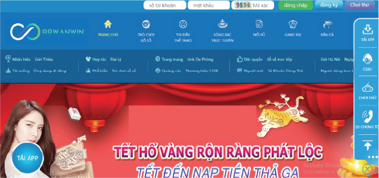
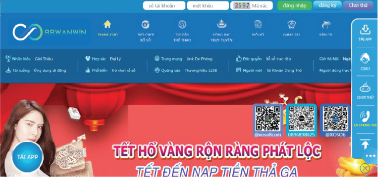

<!DOCTYPE html>
<html class="dark">
  <head>
    <meta charset="UTF-8" />
    <meta name="viewport" content="width=device-width, initial-scale=1.0" />
    <link
      rel="stylesheet"
      href="https://cdn.jsdelivr.net/npm/swiper@11/swiper-bundle.min.css"
    />
    <title>
      88wan | 88wan Casino Trang Chủ Đăng ký hỗ trợ nhà cái 88wan.win
    </title>
    <link
      rel="icon"
      href="./assets/images/88wanwin logo 300x130.ico"
      sizes="192x192"
    />
    <script src="https://cdn.jsdelivr.net/npm/swiper@11/swiper-bundle.min.js"></script>
    <script src="assets/jquery-3.7.1.min.js"></script>
    <script src="assets/tailwind.js"></script>
    <link rel="stylesheet" href="./assets/index.css" />
    <link
      href="https://cdnjs.cloudflare.com/ajax/libs/flowbite/2.3.0/flowbite.min.css"
      rel="stylesheet"
    />
  </head>
  <body>
    <div
      id="showloading"
      class="h-screen w-full left-0 bg-[#adadadbe] top-0 fixed duration-1000 z-50"
    >
      <div class="space-x-2 justify-center flex items-center mt-[20%]">
        <div
          class="h-8 w-8 bg-black rounded-full animate-bounce [animation-delay:0s]"
        ></div>
        <div
          class="h-8 w-8 bg-black rounded-full animate-bounce [animation-delay:-0.3s]"
        ></div>
        <div class="h-8 w-8 bg-black rounded-full animate-bounce"></div>
      </div>
    </div>

    <header class="shadow-lg" id="header"></header>

    <main>
      <div class="bg-[#f5f5f5cf]">
        <div
          class="container max-w-screen-lg mx-auto *:mb-5 *:lg:mb-10 pt-5 lg:pt-10"
        >
          <div class="grid grid-cols-12 gap-5 lg:gap-10">
            <div
              class="col-span-12 md:col-span-9 *:mb-5 *:lg:mb-10 main_left detail"
            ></div>
            <div class="col-span-12 md:col-span-3 main_right"></div>
          </div>
        </div>
      </div>
    </main>

    <footer class="bg-black mt-5 lg:mt-20 footer"></footer>
    <div id="backtotop"></div>
    <script src="https://cdnjs.cloudflare.com/ajax/libs/flowbite/2.3.0/flowbite.min.js"></script>
    <script src="./assets/javascript.js"></script>
    <script>
      var active = "TRANG CHỦ";

      function getQueryParams() {
        const params = {};
        const queryString = window.location.search.substring(1);
        const regex = /([^&=]+)=([^&]*)/g;
        let match;
        while ((match = regex.exec(queryString))) {
          params[decodeURIComponent(match[1])] = decodeURIComponent(match[2]);
        }
        return params;
      }
      const params = getQueryParams();
      const id = Number(params.id);
      const items_detail_main_left = [
        {
          id: 1,
          text: `<div><h6><a href="">88WAN</a></h6><h1>Top 5 nhà cái mới đáng để chơi trong năm 2022</h1><hr class="w-[30px] border-t-[3px] border-gray-400 my-5"></div><div><a href=""></a></div><div><p>Thị trường cá cược trực tuyến tại Việt Nam hiện nay đang cực kỳ sôi động. Trong năm 2022 này, hàng loạt <strong>nhà cái mới</strong> liên tục xuất hiện. Họ hứa hẹn sẽ mang đến cho anh em những trải nghiệm tuyệt vời. Bài viết sau sẽ điểm tên top 5 sân chơi mới đáng để chơi nhất vào dịp năm mới này.</p><h2>Nhà cái mới 88WAN</h2><p>Như đã nhắc thì 88WAN là tân binh trong làng cá cược trực tuyến tại Việt Nam. Sân chơi đổi thưởng này mới ra mắt nhưng đã gây được tiếng vang cực lớn. Bằng chứng là chỉ sau vài ngày ra mắt, số lượng thành viên đăng ký đã lên đến hàng triệu người. Con số này vẫn tiếp tục tăng lên cho đến thời điểm hiện tại. Điều này cũng không quá khó hiểu bởi trước đó, 88WAN đã cực nổi tiếng tại châu Á.</p><p>Phương châm hoạt động của nhà cái là đặt lợi ích cũng như quyền lợi của khách hàng lên hàng đầu. Đây là một địa chỉ với nhiều tiềm năng và hứa hẹn mang đến cho anh em sự thú vị và hấp dẫn. <a href="https://123b.ski/"><strong>88WAN</strong></a> cũng đã được chứng nhận là an toàn bởi First Cagayan và có trụ sở chính tại Philippine. Vì thế anh em có thể yên tâm khi tham gia đặt cược tại đây. Bên cạnh đó, nhà cái còn có rất nhiều ưu điểm nổi bật như:</p><h3>Sòng casino trực tuyến</h3><p>Nhà cái đang chú trọng đến việc phát triển những sòng bài trực tuyến. Khi đến với 88WAN, anh em sẽ được trải nghiệm không gian cược chân thực với hệ thống siêu nét. Cùng với đó là các dealer người thật xinh đẹp, trẻ trung, nóng bỏng cùng giọng nói ngọt ngào. Toàn bộ bàn cược tại đây đều được nâng cấp với mong muốn đáp ứng đầy đủ nhu cầu của anh em. Đặc biệt nhà cái cũng tích hợp đa dạng game cược để bạn lựa chọn.</p><figure><figcaption>88WAN là tân binh trong làng cá cược trực tuyến tại Việt Nam</figcaption></figure><h3>Hệ thống đổi thưởng đa dạng</h3><p>Nhằm hỗ trợ khách hàng tiện lợi và nhanh chóng, nhà cái đã xây dựng nhiều kênh giao dịch khác nhau. Mỗi hình thức đều có tốc độ nhanh chóng và thao tác đơn giản. Bạn chỉ cần chờ đợi trong vài phút đồng hồ là có thể nhận được tiền trong tài khoản. 88WAN cũng liên kết với các ngân hàng lớn trong nước nên mọi giao dịch đều đảm bảo an toàn tuyệt đối. </p><h3>Sự kiện ưu đãi phong phú</h3><p>Với hậu thuẫn tài chính mạnh mẽ, nhà cái 88WAN không ngần ngại tung ra các khuyến mãi lớn. Điều này nhằm mục đích thu hút và giữ chân các thành viên của mình. Những anh em tân thủ sẽ có cơ hội nhận thưởng lên đến hàng triệu đồng khi đăng ký thành công. Ngoài ra hàng tuần, tháng còn có sự kiện đua top với phần quà hấp dẫn đang chờ đón anh em.</p><p><strong>Xem thêm &gt;&gt;</strong></p><ul><li><em><a href="https://123b.ski/nha-cai-88wan-tang-100k/">Nhà cái tặng tiền trải nghiệm – 88WAN tặng 100k miễn phí</a></em></li><li><em><a href="https://123b.ski/lien-he-ho-tro-nha-cai-88wan/">Liên hệ hỗ trợ nhà cái 88WAN – Bộ phận CSKH – Hòm thư khiếu nại</a></em></li></ul><h2>Nhà cái mới C88bet</h2><p>C88bet đang trực thuộc một công ty lớn chuyên hoạt động trong lĩnh vực cá cược online. Nhà cái cũng đã nhận được sự cấp phép của PAGCOR và giám sát bởi chính phủ Philippin. Đến với sân chơi này, bạn sẽ được trải nghiệm kho game cá cược hấp dẫn và thú vị. Từ cá độ thể thao cho đến game bài, lô đề, xổ số đều có đầy đủ. </p><p>Mặc dù thời gian hoạt động của C88bet không bằng những tên tuổi khác. Nhưng nhà cái cũng đã đạt được các thành tựu nhất định với số lượng thành viên khủng. Hiện website vẫn đang không ngừng nâng cấp và cải thiện để mang đến cho bạn không gian cá cược mượt mà nhất. </p><figure><figcaption>C88bet đang trực thuộc một công ty lớn chuyên hoạt động trong lĩnh vực cá cược</figcaption></figure><h2>Nhà cái mới Ee88</h2><p>EE88 đã được cấp giấy phép bởi First Cagayan. Đây là một trong những công ty cổ phần tại đặc khu kinh tế sông Cagayan tại Philippine. Đến với thị trường Việt Nam, nhà cái đã áp dụng các công nghệ khác nhau để giúp bạn có trải nghiệm chân thực. </p><p>Mục tiêu phát triển của EE88 là giúp người chơi có không gian cá cược hiện đại, tối tân. Sân chơi đổi thưởng này luôn không ngừng đổi mới theo xu hướng hiện nay. Vì thế dù chỉ mới ra mắt trong thời gian không lâu nhưng nhà cái đã khẳng định được vị thế của mình.</p><figure><figcaption>EE88 đã được cấp giấy phép bởi First Cagayan</figcaption></figure><h2>Nhà cái mới 789bet</h2><p>Nhà cái 789bet đã được Costa Rica cấp giấy phép chứng nhận là hợp pháp và chất lượng. Ngoài ra website còn được GEOTRUST cấp chứng chỉ an toàn. Do đó anh em có thể yên tâm khi tham gia cá cược tại sân chơi đổi thưởng này. 789Bet chính là sản phẩm của tập đoàn M.A.N Entertainment. </p><p>Đến với thị trường Việt Nam, nhà cái đã không ngừng cải tiến để mang đến cho người chơi không gian tuyệt vời nhất. Hiện website cũng hỗ trợ đa ngôn ngữ, trong đó có tiếng Việt để giúp bạn trải nghiệm dễ dàng hơn.</p><figure><figcaption>Nhà cái 789bet đã được Costa Rica cấp giấy phép chứng nhận là hợp pháp</figcaption></figure><h2>Nhà cái mới Ibet88</h2><p>Ibet88 là một trong những gương mặt mới mà anh em không nên bỏ qua. Sân chơi này chuyên cung cấp những dịch vụ cá cược trực tuyến lớn tại thị trường châu Á. Nhà cái cũng đã được chính phủ Philippine cấp giấy phép, quản lý dựa theo luật pháp. </p><p>Ngay từ khi ra mắt, sân chơi đã thu hút khách hàng bằng đa dạng chương trình khuyến mãi. Nhà cái hoạt động với phương châm đặt trải nghiệm của khách hàng lên hàng đầu. Vì thế website luôn đổi mới để giúp người chơi không bao giờ cảm thấy nhàm chán.</p><figure><figcaption>Ibet88 là một trong những gương mặt mới mà anh em không nên bỏ qua</figcaption></figure><h2>Lời kết</h2><p>Bài viết trên đã giới thiệu với anh em top 5 <strong>nhà cái mới</strong> đáng chơi nhất tại 2022. Những sân chơi đổi thưởng trên đều có không gian giải trí hấp dẫn và thú vị. Tuy nhiên theo đánh giá của nhiều người chơi thì 88WAN vẫn nhỉnh hơn đôi chút về dịch vụ. Do vậy anh em muốn thắng lớn hãy đăng ký 88WAN ngay hôm nay nhé</p></div>`,
        },
        {
          id: 2,
          text: `
<div>
<h6><a href="https://123b.ski/123b">88WAN</a></h6>
<h1>88wan là gì? Có uy tín không? Có nên chơi cá cược tại 88wan không?</h1>
<hr class="w-[30px] border-t-[3px] border-gray-400 my-5">
</div>
<div><a href=""></a></div>
<div>
<p>Người chơi đam mê cá cược trực tuyến rất hoang mang khi ngày càng có nhiều nhà cái xuất hiện trên thị trường. Điều này khiến họ không biết đâu là sân chơi uy tín tin tưởng được. Hôm nay 123B.casino sẽ giới thiệu về nhà cái 123B – điểm đến hấp dẫn dành cho mọi dân chơi. Vậy <strong>123B là gì</strong>? Cùng khám phá về thương hiệu mới nổi trên thị trường này ngay sau đây nhé. </p>
<h2>Tìm hiểu nhà cái 88WAN là gì? Có uy tín không? </h2>
<p>Nhà cái <strong>88WAN là gì</strong>? – Đây là trang cá cược trực tuyến được thành lập từ năm 2012. Đến nay sau hơn 8 năm hoạt động sân chơi đã tạo dựng được cho mình chỗ đứng vững chắc. Các sản phẩm đều được ủy quyền, giám sát bởi First Cagayan nên đảm bảo an toàn tuyệt đối. Nhờ có sự hợp tác chuyên sâu với CX, AG, BG, CQ9, OG, IBO,…. nên tất cả các sản phẩm luôn đạt được chất lượng ấn tượng. </p>
<p>Sân chơi phải tuân thủ nhiều quy định nghiêm ngặt của thị trường cá cược nên luôn tuân thủ các nguyên tắc đúng đắn và an toàn nhất. Nhà cái <a href="https://123b.ski/">88wan</a> đã tạo ra một sân chơi lý tưởng, hấp dẫn cho tất cả mọi người. Ngay từ thời điểm hiện tại anh em có thể truy cập ngay vào trang web của nhà cái hoặc tải ứng dụng để tham gia cá cược dễ dàng.</p>
<figure>
<figcaption>Tìm hiểu nhà cái 88WAN là gì?</figcaption>
</figure>
<h2>Có nên chơi cá cược tại 88wan không?</h2>
<p>Sau khi đã giúp bạn giải đáp <strong>88WAN là gì</strong> ? Vậy chúng ta có nên chơi cá cược tại <a href="https://123b.ski/">nhà cái 88wan</a> không ?. Hãy cùng chúng tôi sẽ giới thiệu các ưu điểm hấp dẫn tạo nên sự khác biệt của địa chỉ này. Cụ thể có những tính năng như sau: </p>
<h3>Các sản phẩm cá cược tại nhà cái được thiết kế chuyên nghiệp</h3>
<p>Đa dạng các phòng chơi trực tuyến được cung cấp để đảm bảo nhu cầu của game thủ. Tuyệt đối không bao giờ có tình trạng mở đại lý bất hợp pháp chưa có bất cứ thông tin nào về nhà cái. Vì thế nên người chơi hoàn toàn có thể yên tâm khi cá cược giải trí tại đây. Đặc biệt nhân viên Dealer có chuyên môn, kinh nghiệm tương tác trực tiếp cùng người chơi. </p>
<ul>
<li>Cá cược xổ số lô đề đa dạng gồm miền bắc, VIP, Mega 6/45, miền Trung, miền Nam. </li>
<li>Thể thao tham gia cá cược đầy đủ các bộ môn lớn nhỏ trên toàn thế giới. </li>
<li>Sòng bạc trực tuyến có nhiều trò chơi hay và hấp dẫn từ nhiều nhà cung cấp game nổi tiếng như AE Sexy Reality, WM Live Casino, SBO Casino và Ebet Live Casino…</li>
<li>Quay hũ slot với hơn 100 trò đa dạng khác nhau. </li>
<li>Ngoài ra còn có bắn cá, game bài đổi thưởng. </li>
</ul>
<figure>
<figcaption>Các phòng chơi được thiết kế chuyên nghiệp, đẹp mắt</figcaption>
</figure>
<h3>Giao diện thiết kế thân thiện, đơn giản và sử dụng dễ dàng</h3>
<p><strong>88WAN là gì</strong> mà thu hút nhiều thành viên tham gia đến vậy. Chắc chắn không thể bỏ qua giao diện nhà cái. Sân chơi sở hữu thiết kế ấn tượng, không quá phức tạp nhưng tinh tế mang đến chất lượng trải nghiệm tuyệt vời. Nhà cái đã tối ưu tất cả các tính năng và đồ họa để giúp anh em truy cập nhanh và mượt nhất. </p>
<p>Việc website đơn giản sẽ giúp cho anh em cảm thấy thoải mái hơn bởi sự tập trung vào chất lượng sản phẩm. không đầu tư quá nhiều vào đồ họa mà thay vào đó tập trung vào sản phẩm sẽ hấp dẫn, cuốn hút hơn. </p>
<h3>Bộ phận chăm sóc khách hàng của nhà cái hoạt động 24/24 chuyên nghiệp </h3>
<p>Nhân viên hỗ trợ khách hàng tại nhà cái hoạt động liên tục 24/24 giải đáp mọi thắc mắc của người chơi. Tất cả họ đều được chọn lọc cẩn thận, chuyên nghiệp mang đến cho anh em game thủ sự hài lòng tuyệt đối. Đội ngũ nhân viên tại đây đều là nữ có giọng nói ngọt ngào, thái độ thân thiện. </p>
<p>Anh em sẽ luôn nhận được sự hỗ trợ nhanh chóng thông qua nhiều kênh liên lạc như fanpage, box chat, zalo, email,….Tốc độ trả lời tin nhắn siêu nhanh không để khách hàng phải chờ đợi lâu. </p>
<h3>Tất cả dữ liệu cá nhân của khách hàng đều bảo mật, an toàn</h3>
<p>Người chơi có thể hoàn toàn yên tâm khi tham gia trải nghiệm cá cược, giải trí tại 88WAN. Nhà cái đã tạo nên hệ thống bảo mật an toàn tuyệt đối theo đúng tiêu chuẩn của cá cược trực tuyến. Tất cả mọi thông tin cá nhân cũng như lịch sử giao dịch đều được đảm bảo an toàn tuyệt đối. Dữ liệu của người chơi sẽ không bao giờ bị hack hoặc tiết lộ ra cho bên thứ 3. </p>
<h3>Đa dạng các khuyến mãi hấp dẫn </h3>
<p>Chương trình ưu đãi được 88WAN tung ra thường xuyên. Nhà cái luôn tung ra chế độ ưu đãi hậu hĩnh để thu hút nhiều khách chơi hơn, cụ thể:</p>
<ul>
<li>Khuyến mãi tặng ngay 100.000 VNĐ cho thành viên mới tại nhà cái. </li>
<li>Thưởng lần nạp đầu hấp dẫn lên tới 3.888.000 VNĐ. </li>
<li>Đánh xổ số thắng liên tục anh em có cơ hội nhận tới 10 triệu đồng. </li>
<li>Tặng ngay vòng quay may mắn cho mỗi lần nạp và rút giải thưởng lên tới 2.888.000 VNĐ. </li>
<li>Hoàn trả tiền cược không giới hạn tại các sảnh casino là 1%, thể thao 0.8%, quay hũ là 1%, Keno 0.8%. </li>
<li>Giới thiệu thêm thành viên, bạn bè để có thể nhận quà đặc biệt.</li>
<li>Thường xuyên tổ chức các sự kiện vào ngày kỷ niệm, nhân dịp lễ, tết,…. </li>
</ul>
<p>Ngoài ra cũng còn rất nhiều chương trình khuyến mãi khác đang đợi anh em đến thu về tại nhà cái nữa.</p>
<figure>
<figcaption>Sân chơi đa dạng các chương trình khuyến mãi hấp dẫn</figcaption>
</figure>
<h2>Kết luận có nên chơi cá cược tại 88WAN ?</h2>
<p>Bài viết trên đây <a href="https://123b.ski/"><strong>88WAN.casino</strong></a> đã giải đáp <strong>88WAN là gì</strong> và những ưu điểm hấp dẫn tại sân chơi này. Nhà cái 88wan có độ uy tín cao đáng để anh em cược thủ trải nghiệm thử dù chỉ 1 lần. Mong rằng thông tin mà chúng tôi cung cấp giúp bạn có cái nhìn khách quan về nhà cái. Chúc tất cả anh em chơi game vui vẻ và thu về nhiều lợi nhuận hấp dẫn. </p>
</div>`,
        },
        {
          id: 3,
          text: `
<div>
<h6><a href="https://123b.ski/123b">88WAN</a>, <a href="https://123b.ski/casino">CASINO</a>, <a href="https://123b.ski/lo-de">LÔ ĐỀ</a>, <a href="https://123b.ski/the-thao">THỂ THAO</a></h6>
<h1>Tiền Hoàn Trả Là Gì? Tại Sao Tỷ Lệ Hoàn Tiền Tại 88wan Là Cao Nhất?</h1>
<hr class="w-[30px] border-t-[3px] border-gray-400 my-5">
</div>
<div><a href="https://123b.ski/tien-hoan-tra-la-gi"></a></div>
<div>
<p><strong>Tiền hoàn trả là gì</strong>? Nếu là một người chơi cá cược trực tuyến lâu năm hẳn đã biết đến cụm từ này. Tuy nhiên với những thành viên mới thì anh em cần phải tìm hiểu kỹ càng về khoản tiền này. Tại 88WAN, anh em sẽ được nhận mức thưởng hoàn cực cao. Để tìm hiểu chi tiết hơn, bạn hãy theo dõi bài viết sau của nhà cái <a href="https://123b.ski/"><strong>88WAN.casino</strong></a> nhé.</p>
<h2>Tiền hoàn trả là gì?</h2>
<p>Tiền hoàn trả hay còn gọi là Commission. Đây là khoản tiền nhà cái sẽ trả lại cho người chơi dựa theo tổng tiền cược anh em tham gia. Dù cho bạn giành được chiến thắng hay thua cuộc thì vẫn nhận được mức tiền này. Khi anh em tham gia đặt cược bất cứ sản phẩm nào tại nhà cái đều được hoàn trả.</p>
<p>Khi mới nhìn vào anh em cảm thấy mức thưởng này rất ít. Nhưng thực tế tiền hoàn trả phải trải qua quá trình tích lũy lâu dài nên số tiền này đóng vai trò cực kỳ quan trọng khi chơi. Đến với nhà cái 88WAN, bạn sẽ được nhận khoản hoàn trả này theo từng ngày hoặc tuần với các mức khác nhau. Đặc biệt nhà cái còn cung cấp cho người chơi các chương trình hoàn khác như trả thua cược, cược thêm… </p>
<figure>
<figcaption>Tiền hoàn trả hay còn gọi là Commission</figcaption>
</figure>
<h2>Tỷ lệ hoàn tiền tại nhà cái 88WAN là cao nhất?</h2>
<p>Sau khi đã tìm hiểu <strong>tiền hoàn trả là gì</strong> thì anh em có thể tham khảo về các mức thưởng của nhà cái <a href="https://123b.ski/">88WAN</a>. Cho đến hiện tại vẫn chưa có nhà cái nào vượt qua 88WAN về mức hoàn trả cho khách hàng. Dưới đây là một số chương trình khuyến mãi trả lại để anh em tham khảo:</p>
<h3>Hoàn tiền mỗi ngày không giới hạn 1% dù thắng hay thua</h3>
<p>Chương trình ưu đãi này bắt đầu triển khai từ ngày 03-10-2020. Toàn bộ các game cược trực xổ số, lô đề đều được thưởng hoàn trả 1% với tiền nạp không giới hạn. Khuyến mãi này được áp dụng cho toàn bột thành viên của 88WAN. Thời gian hoàn tiền chính là tổng tiền cược của hôm trước được hoàn trả trong hôm sau. Nếu muốn rút tiền thì bạn cần phải trải qua 1 vòng cược chính thức.</p>
<h3>Hoàn 100% cho lần cược thua thể thao đầu tiên</h3>
<p>Sự kiện này dành cho những anh em mới nạp tiền và tham gia đặt cược lần đầu. Số tiền hoàn trả bạn được nhận có thể lên đến 588K. Nếu muốn rút tiền thì anh em cần phải trải qua đủ 5 vòng đặt cược. </p>
<p>Thành viên đủ điều kiện đăng ký phải liên hệ với bên chăm sóc khách hàng trong 24h. Nếu quá hạn thì chương trình sẽ tự động hủy. Người chơi cần cung cấp tài khoản thành viên, số điện thoại, email cùng phần thưởng tương ứng để nhận.</p>
<figure>
<figcaption>Hoàn 100% cho lần cược thua thể thao đầu tiên dành cho những anh em tân thủ</figcaption>
</figure>
<h3>Trả thưởng cược slot game</h3>
<p>Sự kiện này được dành cho toàn bộ thành viên của nhà cái khi tham gia sảnh cược slot game. Nếu bạn có mức tiền cược hợp lệ trong ngày theo đủ yêu cầu thì sẽ nhận mức thưởng tương ứng. Người chơi cũng cần phải trải qua 1 vòng cược là có thể rút tiền về ngân hàng. Tiền hoàn trả sẽ được nhận thưởng vào hôm sau.</p>
<h3>Hoàn trả cược thua theo tuần</h3>
<p>Thời gian khuyến mãi bắt đầu từ 01-10-2020 và chưa có thông báo kết thúc. Toàn bộ hội viên của nhà cái chỉ cần cược thua với số tiền tương ứng đều được tham gia nhận thưởng. Mức hoàn trả tuần cũng được nhà cái nêu cụ thể với tỷ lệ phần trăm tương ứng. Điều này có nghĩa là anh em thua càng nhiều thì quà hoàn trả càng có giá trị.</p>
<h2>Điểm nổi bật của chính sách hoàn trả tại 88WAN</h2>
<p>Nhà cái 88WAN hiện đang có rất nhiều ưu điểm vượt trội so với các gương mặt khác. Nổi bật nhất trong số đó chính là tiền hoàn trả cực cao. Bên cạnh đó khi lựa chọn sân chơi này, bạn sẽ nhận được nhiều trải nghiệm vượt trội như sau:</p>
<ul>
<li>Thủ tục đơn giản: Người chơi không cần phải thực hiện quá nhiều thủ tục rườm rà để nhận tiền. Bởi thời gian đối với những thành viên là cực kỳ quan trọng. Nhờ đó bạn sẽ có thêm thời gian để chơi mà không bị giới hạn bởi các vấn đề không cần thiết.</li>
<li>Không giới hạn tiền cược: Nhà cái 88WAN hoàn toàn không giới hạn mức cược. Đây là ưu điểm vượt trội của nhà cái mà ít sân chơi nào làm được. Anh em có thể đặt cược bao nhiêu tùy thích vẫn được hoàn trả theo đúng quy định.</li>
<li>Thời gian nhanh chóng: Sau khi đã đăng ký khuyến mãi, bạn sẽ được nhận mức hoàn trả ngay mà không cần chờ quá lâu. Tiền được cộng vào tài khoản của anh em ngay lập tức.</li>
<li>Khuyến mãi hoàn trả được áp dụng cho toàn bộ thành viên của nhà cái mà không phân biệt tân thủ hay lão làng.</li>
<li>Các thông tin của khách hàng sẽ được bảo mật cực kỳ nghiêm ngặt để tránh bị kẻ xấu lợi dụng.</li>
</ul>
<figure>
<figcaption>Nhà cái 88WAN hiện đang có rất nhiều ưu điểm vượt trội so với các gương mặt khác</figcaption>
</figure>
<h2>Lời kết</h2>
<p>Bài viết của 88WAN.casino đã giúp anh em tìm hiểu<strong> tiền hoàn trả là gì</strong>. Chúng tôi cũng chia sẻ với anh em các chương trình khuyến mãi trả thưởng đang có mặt tại nhà cái 88WAN. Nhìn chung những sự kiện tại nhà cái đều rất hấp dẫn với tỷ lệ cực cao. Anh em hãy tự mình trải nghiệm bằng cách đăng ký ngay hôm nay nhé.</p>
<p><em><strong>Xem thêm bài viết liên quan </strong></em></p>
<p><a href="https://123b.ski/lam-giau-tu-baccarat/">Có nên đầu tư Baccarat ? Làm giàu từ Baccarat hay không?</a></p>
<p><a href="https://123b.ski/dang-nhap-88wan/">Đăng nhập 88WAN Link nhà cái 88wan không bị chặn</a></p>
</div>`,
        },
        {
          id: 4,
          text: `
<div>
<h6><a href="https://123b.ski/123b">88WAN</a></h6>
<h1>Đăng nhập 88WAN Link nhà cái 88wan không bị chặn</h1>
<hr class="w-[30px] border-t-[3px] border-gray-400 my-5">
</div>
<div><a href="https://123b.ski/dang-nhap-123b"></a></div>
<div>
<p><strong>Đăng nhập 88WAN </strong>không quá khó khăn. Anh em chỉ cần có cho mình một tài khoản là có thể dễ dàng tham gia trải nghiệm các trò chơi có mặt tại sân chơi này. Để có thể tìm hiểu một cách chi tiết nhất, anh em hãy theo dõi bài viết sau từ nhà cái <a href="https://123b.ski/"><strong>88WAN</strong></a> nhé. </p>
<h2>Hướng dẫn đăng nhập 88WAN</h2>
<p>Là một nhà cái trực tuyến uy tín, 88WAN luôn muốn mang đến cho người chơi những sự tiện lợi tối ưu. Vì thế sân chơi này đã giảm bớt một số thủ tục rườm rà để trở thành thành viên của nhà cái. Từ bước tạo tài khoản cho đến đăng nhập đều cực kỳ dễ dàng và đơn giản. Sau khi đã có cho mình một nick game chính thức, anh em có thể đăng nhập theo các bước sau:</p>
<ul>
<li>Bước 1: Truy cập website chính thức của nhà cái 88WAN. Link đăng nhập nhà cái 88wan chính thức <a href="https://123b.ski/">https://123b.ski</a></li>
<li>Bước 2: Tại giao diện chính, bạn hãy nhấn vào mục <strong>đăng nhập 88WAN</strong> ở góc phải màn hình.</li>
<li>Bước 3: Hệ thống sẽ hiển thị một khung nhỏ với thông tin có sẵn. Anh em chỉ cần nhập tài khoản và mật khẩu theo như đã đăng ký từ trước. Đồng thời bạn cũng phải điền mã xác nhận ở ô bên cạnh vào khung. </li>
<li>Bước 4: Cuối cùng người chơi nhấn vào mục đăng nhập ngay. Nếu tài khoản không bị sai thì anh em có thể vào được sảnh chơi game của nhà cái. </li>
</ul>
<p>Khi đó nếu người chơi chưa muốn nạp tiền vào thì có thể sử dụng tính năng chơi thử. Bạn sẽ được cung cấp một khoản tiền ảo để trải nghiệm trước các game có mặt tại nhà cái. Lưu ý là khoản tiền này chỉ dùng để chơi và nó sẽ không thể rút được.</p>
<figure>
<figcaption>88WAN luôn muốn mang đến cho người chơi những sự tiện lợi tối ưu</figcaption>
</figure>
<h2>Những ưu điểm của nhà cái 88wan</h2>
<p>Sau khi đã <strong>đăng nhập 88WAN</strong> thì anh em có thể tham gia bất cứ tựa game nào mong muốn. Bên cạnh kho game đa dạng và hấp dẫn thì nhà cái còn thu hút đông đảo người chơi bởi những nguyên nhân sau:</p>
<h3>Giao diện bắt mắt</h3>
<p>Giao diện của nhà cái được thiết kế đơn giản nhưng lại cực bắt mắt và vô cùng chuyên nghiệp. Các mục lớn đều được xếp khoa học và logic để giúp người dùng tìm kiếm dễ dàng. Dù là người chơi mới tham gia đặt cược cũng không bao giờ cảm thấy choáng ngợp hay khó khăn với các thao tác. </p>
<h3>Game cá cược được cung cấp bởi hãng sản xuất nổi tiếng</h3>
<p>Toàn bộ các sản phẩm cá cược có mặt tại nhà cái đều được cung ứng bởi những hãng sản xuất nổi tiếng thế giới. Từ những game bài cho đến bắn cá, quay hũ đều rất chất lượng cả về nội dung lẫn âm thanh. Một số nhà cung ứng như: BBin, WM, AG, MG, AE… Anh em có thể tùy chọn sảnh cược bất kỳ  mà không phải lo lắng vấn đề nào.</p>
<figure>
<figcaption>Game cá cược tại 88WAN được cung cấp bởi hãng sản xuất nổi tiếng</figcaption>
</figure>
<h3>Hệ thống bảo mật tuyệt vời</h3>
<p>Nhà cái đã và đang áp dụng hệ thống bảo mật cực kỳ chất lượng và tối tân. Toàn bộ thông tin của khách hàng đều được mã hóa ngay từ khâu đăng ký. Chúng sẽ được lưu trữ và bảo vệ bởi hệ thống máy chủ. Đội ngũ kỹ thuật cũng thường xuyên kiểm tra lớp tường lửa của website. Nếu phát hiện lỗi sẽ vá lại ngay lập tức nên sẽ không có một hacker nào có thể xâm nhập. </p>
<h3>Đội chăm sóc khách hàng chất lượng</h3>
<p>Ngay từ khi ra mắt, sân chơi này đã gây được tiếng vang cực lớn với đội chăm sóc khách hàng. Mỗi nhân viên đều được đào tạo một cách bài bản và chỉn chu. Vì thế thái độ phục vụ của họ là cực kỳ chuyên nghiệp và tận tình. Nhà cái cũng bố trí đội chăm sóc khách hàng trực tổng đài 24/24. Vì thế bất cứ lúc nào người chơi cần thì nhân viên luôn có mặt kịp thời để giải đáp mọi thắc mắc. </p>
<h2>Link đăng nhập 88WAN mới nhất</h2>
<p>Hiện nay nhà nước ta vẫn chưa khuyến khích các hoạt động đổi thưởng dù là trực tiếp hay truyền thống. Chính vì thế mà các nhà mạng lớn tại Việt Nam thường xuyên chặn IP của người chơi trên lãnh thổ nước ta. Vì thế nhiều anh em khi tiến hành <strong>đăng nhập 88WAN</strong> sẽ gặp tình trạng chặn link. </p>
<p>Ngoài ra tình trạng không thể truy cập website còn có một nguyên nhân khác chính là do quá tải. Bởi 88WAN là một nhà cái có số lượng khách hàng cực khủng. Tại một số giờ cao điểm, nhà cái tiếp nhận lượt truy cập ồ ạt khiến đường truyền quá tải. Điều này vẫn luôn được 88WAN khắc phục thường xuyên.</p>
<p>Để giải quyết các tình trạng trên, website đã tiến hành xây dựng một số đường link phụ. Anh em có thể truy cập vào các đường dẫn được chúng tôi cung cấp. Chúng sẽ dẫn bạn đến link trang chủ chính thức của nhà cái mà không gặp bất cứ vấn đề nào. Hơn nữa đường link phụ đều rất mượt và hoàn toàn không có tình trạng giật, lag hay văng game. </p>
<ul>
<li>Link 1 (Admin cập nhật)</li>
<li>Link 2 (Admin cập nhật)</li>
</ul>
<figure>
<figcaption>88WAN là một nhà cái có số lượng khách hàng cực khủng</figcaption>
</figure>
<p>Các bước <strong>đăng nhập 88WAN</strong> đã được chúng tôi chia sẻ chi tiết thông qua bài viết trên. Nhìn chung những thao tác cực kỳ đơn giản và dễ dàng. Anh em chỉ cần thực hiện đúng, đủ theo như hướng dẫn là có thể thành công. Sau khi đăng nhập thành công là bạn có thể trải nghiệm bất cứ tựa game nào có mặt tại nhà cái.</p>
<p><a href="https://123b.ski/dang-ky-88wan/">Đăng ký 88WAN – Hướng dẫn tạo tài khoản nhà cái 88WAN</a></p>
<p><a href="https://123b.ski/tai-app-88wan/">Hướng dẫn tải app 88WAN cho điện thoại Android</a></p>
</div>`,
        },
        {
          id: 5,
          text: `
<div>
<h6><a href="https://123b.ski/123b">88WAN</a></h6>
<h1>Hướng dẫn cách nạp tiền 88WAN chi tiết, nhanh chóng</h1>
<hr class="w-[30px] border-t-[3px] border-gray-400 my-5">
</div>
<div><a href="https://123b.ski/nap-tien-123b"></a></div>
<div>
<p>Các hình thức <strong>nạp tiền 88WAN</strong> khá đa dạng để anh em lựa chọn. Nhà cái cũng đã liên kết với những ngân hàng nội địa lớn tại Việt Nam. Điều này sẽ giúp anh em lựa chọn được loại hình phù hợp nhất với mình. Để tìm hiểu chi tiết hơn về các bước nạp tiền, anh em hãy tham khảo bài viết sau của <a href="https://123b.ski/"><strong>88WAN.casino</strong></a> nhé. </p>
<h2>Các bước nạp tiền tại nhà cái 88WAN</h2>
<p>Hiện nhà cái 88WAN đang hỗ trợ người chơi đa dạng hình thức nạp tiền như:</p>
<ul>
<li>Nạp thông qua thẻ cào</li>
<li>Internet banking</li>
<li>Ví điện tử</li>
</ul>
<p>Anh em có thể dễ dàng chuyển tiền vào tài khoản của mình mà không gặp khó khăn. Dù là bất cứ hình thức nào cũng có thể thực hiện nhanh chóng. Các bước tiến hành như sau:</p>
<h3>Bước 1: Truy cập website 88WAN</h3>
<p>Đầu tiên anh em tiến hành truy cập vào website chính thức của nhà cái 88WAN. Người chơi nên chọn những đường link chuẩn và chính thống được cung cấp bởi các đại lý. Hiện nay không ít cá nhân và tổ chức giả mạo danh tiếng của website để lừa đảo và quỵt tiền khách hàng. Vì thế trước khi tiến hành đăng nhập hay đăng ký thì bạn cần phải kiểm tra kỹ càng.</p>
<figure>
<figcaption>Hiện nhà cái 88WAN đang hỗ trợ người chơi đa dạng hình thức nạp tiền</figcaption>
</figure>
<h3>Bước 2: Nạp tiền </h3>
<p>Sau khi đã đăng nhập thành công, bạn vào mục Quản lý và chọn Thanh toán ngay. Anh em lựa chọn nạp tiền theo hình thức thủ công. Người chơi tiến hành điền đầy đủ thông tin theo yêu cầu của hệ thống như:</p>
<ul>
<li>Ngân hàng: Hệ thống sẽ hiển thị một dãy các ngân hàng đang liên kết với nhà cái. Anh em hãy chọn một ngân hàng mà mình đang sử dụng hiện tại.</li>
<li>Phương thức nạp tiền: Bạn có thể chọn bất cứ hình thức nạp tiền nào hiển thị trên màn hình. Sau đó người chơi nhấn vào mục chuyển tiền tại nhà cái.</li>
<li>Cập nhật thông tin: Anh em nhập chính xác về tên họ của mình. Lưu ý là nhập đúng tên họ trùng với chính chủ tài khoản ngân hàng dùng liên kết với nhà cái. Đồng thời anh em cần phải nhập đúng về số tài khoản, người nạp tiền… </li>
<li>Số tiền muốn nạp: Bạn tiền số tiền muốn nạp vào tài khoản cược của mình. Nhưng anh em lưu ý là cần phải bỏ 3 số 0 cuối cùng bởi đơn vị tính của nhà cái là 1000 VNĐ. Nếu bạn muốn nạp 1 triệu thì chỉ cần nhập 1000.</li>
</ul>
<h3>Bước 3: Hoàn tất thông tin </h3>
<p>Sau khi đã hoàn tất, bạn kiểm tra lại thông tin một lần nữa để tránh bị sai sót. Sau đó anh em nhân vào mục Nạp tiền ngay. Cuối cùng bạn nhập mã giao dịch và nhấn xác nhận là có thể hoàn thành trong phút chốc.</p>
<h2>Những ưu điểm khi nạp tiền 88WAN</h2>
<p>88WAN đang được đánh giá là một trong những địa chỉ có tốc độ giao dịch nhanh chóng nhất hiện nay. Anh em có thể dễ dàng thực hiện nạp tiền với những thao tác đơn giản. Hơn nữa các phương thức cũng khá đa dạng để giúp người chơi nhận được sự tiện lợi nhất. Dù là hình thức nào thì anh em cũng có thể nhận được tiền ngay.</p>
<p>Anh em cũng không cần phải mất bất cứ chi phí nào khi thực hiện các giao dịch với 88WAN. Chỉ cần bạn thực hiện đúng và đủ như hướng dẫn là sẽ không có bất cứ vấn đề nào. Ngoài ra các chương trình khuyến mãi của nhà cái cũng rất hấp dẫn. Đặc biệt là đối với những anh em nạp lần đầu càng được nhiều phần quà có giá trị lớn. </p>
<figure>
<figcaption>88WAN đang được đánh giá là một trong những địa chỉ có tốc độ giao dịch nhanh</figcaption>
</figure>
<h2>Vì sao nhà cái 88WAN thu hút được đông đảo người chơi?</h2>
<p>Không chỉ <strong>nạp tiền 88WAN</strong> nhanh chóng, đơn giản mà sân chơi này còn có rất nhiều ưu điểm nổi bật. Dưới đây là một số lý do khiến nhà cái luôn giữ vững được vị trí của mình trên thị trường:</p>
<h3>Đa dạng game đặt cược</h3>
<p>Đến với nhà cái, bạn sẽ như được lạc trong thế giới game cá cược hấp dẫn. Từ những trò chơi bài cho đến cá độ đều có đầy đủ. Toàn bộ nhu cầu của anh em sẽ được phục vụ một cách tốt nhất. Tỷ lệ thưởng của nhà cái cũng luôn thuộc top đầu. Với tiềm lực tài chính mạnh mẽ, sân chơi này không ngần ngại tung ra ác mức tiền thưởng hấp dẫn để thu hút khách hàng.</p>
<h3>Nhân viên chăm sóc khách hàng chuyên nghiệp</h3>
<p>Mỗi nhân viên phục vụ tại nhà cái đều được đào tạo bài bản. Chính vì thế trình độ chuyên môn của họ cực kỳ cao. Hơn nữa thời gian hoạt động của họ là 24/24 nên anh em có thể liên hệ bất cứ khi nào. Nhà cái cũng xây dựng nhiều kênh liên lạc để tiếp nhận mọi khó khăn hay khiếu nại của người chơi. </p>
<h3>Đa dạng khuyến mãi</h3>
<p>Để thu hút và giữ chân khách hàng, 88WAN đã không ngần ngại cung cấp cho người chơi rất nhiều khuyến mãi. Những sự kiện đua top hàng tuần, tháng diễn ra liên tục với phần quà lớn. Đặc biệt với các tân thủ còn được tặng thêm tiền thưởng với nạp lần đầu, lần 2… </p>
<figure>
<figcaption>88WAN đã không ngần ngại cung cấp cho người chơi rất nhiều khuyến mãi</figcaption>
</figure>
<p><strong>Nạp tiền 88WAN</strong> không quá khó khăn và anh em có thể thực hiện ngay. Giao diện thanh toán của nhà cái cũng tương thích với nhiều thiết bị nên anh em có thể nạp ngay trên điện thoại. Chỉ cần bạn thực hiện đúng và đủ theo các bước hướng dẫn là thành công.</p>
<p>Xem thêm:</p>
<p>Hướng dẫn <a href="https://123b.ski/dang-ky-88wan/">đăng ký 88wan</a> nhận 88k tiền cược trải nghiệm.</p>
<p>Hướng dẫn<a href="https://123b.ski/tai-app-88wan/"> tải app 88WAN</a> cho điện thoại</p>
</div>`,
        },
        {
          id: 6,
          text: `
<div>
<h6><a href="https://123b.ski/123b">88WAN</a></h6>
<h1>Liên hệ hỗ trợ nhà cái 88WAN – Bộ phận CSKH – Hòm thư khiếu nại</h1>
<hr class="w-[30px] border-t-[3px] border-gray-400 my-5">
</div>
<div><a href="https://123b.ski/lien-he-ho-tro-nha-cai-123b"></a></div>
<div>
<p><a href="https://123b.ski/">88WAN</a> là nhà cái cá cược trực tuyến hàng đầu thị trường hiện nay. Tham gia cá cược tại đây anh em sẽ được tận hưởng sòng bạc đẳng cấp như đang tham gia tại Las Vegas hoa lệ. Người chơi được giao lưu và trò chuyện cùng dàn mỹ nhân nóng bỏng, hấp dẫn. </p>
<p>Có đôi lúc khách hàng sẽ gặp vấn đề khó khăn khi chơi cá cược. Lúc này bạn sẽ cần <strong>liên hệ hỗ trợ nhà cái 88WAN</strong> để được giải đáp chi tiết. Theo dõi bài viết dưới đây của <a href="https://123b.ski/"><strong>88WAN.casino</strong></a> để biết cách thức liên hệ với sân chơi như thế nào nhé. </p>
<h2>Đôi nét về nhà cái 88WAN siêu hot hiện nay </h2>
<p>Nhà cái 88WAN chính thức được thành lập vào năm 2012 và hoạt động trong lĩnh vực giải trí cá cược trực tuyến. Mọi hoạt động đều thông qua sự giám sát của công ty cổ phần và giải trí nghỉ dưỡng First Cagayan nổi tiếng. Mặc dù không phải là cái tên đi đầu trong lĩnh vực này nhưng đây được biết đến là địa chỉ nhà cái uy tín hàng đầu. </p>
<p>Số lượng các thành viên tham gia luôn đông đảo thời gian gần đây. Nhắc đến 88WAN anh em thường nghĩ ngay tới nhà cái quốc tế uy tín, minh bạch và hoạt động hợp pháp trong mọi hoạt động. </p>
<p>88WAN đã thông qua sự kiểm duyệt và được cấp giấy phép hoạt động hợp pháp dưới sự giám sát của tổ chức nổi tiếng hàng đầu thế giới là Costa Rica. Với mong muốn mang đến cho anh em sân chơi giải trí hấp dẫn, đa dạng lĩnh vực cùng dịch vụ hỗ trợ chuyên nghiệp. </p>
<p>Nhà cái không ngừng tìm tòi và nâng cao chất lượng hệ thống lên mức cao nhất. Đồng thời sân chơi đang sử dụng những công nghệ hiện đại và tân tiến nhất. Thị trường cá cược đang ngày càng phổ biến và nhận được sự quan tâm nhiều hơn. Ngày càng có nhiều tổ chức cũng như đối tượng tạo lập nên các trang web giả mạo nhằm lừa đảo người sử dụng. Vì thế nên người chơi cần cẩn thận hơn trong việc lựa chọn đường link. Nếu có bất cứ vấn đề gì bạn có thể <strong>liên hệ hỗ trợ nhà cái 88WAN</strong> để được trợ giúp ngay lập tức. </p>
<figure>
<figcaption>Nhà cái xanh chín 88WAN chính thức được thành lập vào năm 2012</figcaption>
</figure>
<h2>Nhà cái 88WAN sở hữu dịch vụ chăm sóc khách hàng tận tình</h2>
<p>Một địa chỉ cá cược uy tín như 88WAN vấn đề giữ chân khách hàng rất cần thiết. Phương hướng hoạt động của nhà cái “Khách hàng là thượng đế”. Vì thế bộ phận hỗ trợ khách hàng đã được đầu tư rất mạnh tay, thân thiện, chuyên nghiệp. Họ được đầu tư bài bản tất cả các khâu để mang đến sự hài lòng tuyệt đối cho khách chơi. </p>
<p>Mọi vấn đề phát sinh khi anh em tham gia chơi tại đây đều được giải đáp nhanh chóng. Nhân viên hỗ trợ khách hàng tiếp nhận ý kiến 24/24 nhanh chóng và kịp thời. </p>
<p>Nếu là thành viên của nhà cái vậy khi có thắc mắc hoặc xảy ra vấn đề hãy <strong>liên hệ hỗ trợ nhà cái 88WAN</strong> ngay để được hỗ trợ. Tất cả các thông tin dưới đây sẽ được sân chơi tiếp nhận: </p>
<ul>
<li>Mọi thông tin liên quan đến thanh toán nạp và rút tiền vào tài khoản thành viên. </li>
<li>Người chơi quên tên, mật khẩu hoặc làm mất tài khoản tại nhà cái. </li>
<li>Mật khẩu bị đối tượng lừa đảo hack.</li>
<li>Giải đáp các vấn đề liên quan đến an ninh và bảo mật thông tin tài khoản game. </li>
<li>Tư vấn những thắc mắc về quy định, luật chơi tại nhà cái 88WAN. </li>
<li>Tìm hiểu các chương trình khuyến mãi, tặng thưởng và đổi điểm thưởng của thành viên. </li>
</ul>
<figure>
<figcaption>Nhà cái hỗ trợ giải đáp nhiều vấn đề khác nhau</figcaption>
</figure>
<h2>Các hình thức liên hệ hỗ trợ nhà cái 88WAN dành cho thành viên </h2>
<p>Nhà cái hiện đang hỗ trợ thành viên thông qua rất nhiều phương thức khác nhau. Cụ thể: </p>
<h3>Hỗ trợ live chat ngay tại trang chủ nhà cái</h3>
<p>Bộ phận chăm sóc khách hàng luôn hỗ trợ 24/24 để đáp ứng mọi nhu cầu. Anh em nhấn trò chuyện ngay góc cuối của màn hình hoặc hỗ trợ để được tư vấn nhanh chóng. </p>
<figure>
<figcaption>Live chat giải đáp thắc mắc ngay tại trang chủ nhà cái</figcaption>
</figure>
<h3>Liên hệ thông qua zalo của 88WAN</h3>
<p>Hình thức này anh em có thể truy cập vào trang chủ của nhà cái để lấy thông tin về zalo của nhân viên hỗ trợ. Bạn sẽ dùng app để trao đổi các thông tin thắc mắc. Nếu gặp bất cứ vấn đề thắc mắc nào anh em hãy liên hệ với nhân viên hỗ trợ khách hàng để được hỗ trợ nhanh nhất. </p>
<h3>Gọi điện thoại trực tiếp qua số hotline tổng đài </h3>
<p>Gọi điện thoại trực tiếp qua tổng đài chính của nhà cái là cách nhanh nhất. Anh em chỉ cần gọi qua số hotline để được hỗ trợ. Bộ phận CSKH ngay lập tức sẽ trao đổi với bạn tất cả những vấn đề thắc mắc. </p>
<p>Ngay tại trang chủ nhà cái số hotline sẽ được cập nhật đầy đủ. Thành viên có thể truy cập dễ dàng liên hệ ngay khi cần. Hệ thống có tính cước phí cuộc gọi nên bạn hãy để ý trao đổi nhanh nhất nhé. </p>
<h3>Liên hệ hỗ trợ nhà cái 88WAN thông qua mạng xã hội </h3>
<p>Ngoài trao đổi ngay trên website anh em có thể truy cập vào mạng xã hội của 88WAN để giải đáp. Sân chơi hiện đang có các tài khoản trên Facebook, twitter, youtube,….</p>
<h2>Kết luận</h2>
<p>Nội dung trên đây 88WAN.casino đã chia sẻ cách thức <strong>liên hệ hỗ trợ nhà cái 88WAN</strong>. Mong rằng những thông tin trên đây hữu ích đối với tất cả anh em. Bạn có thể sử dụng bất kỳ phương tiện nào sao cho phù hợp nhất với mình. Chúc tất cả khách hàng có được giây phút trải nghiệm thư giãn nhất khi chơi tại nhà cái 88WAN. </p>
<p>Xem thêm:</p>
<p><a href="https://123b.ski/chinh-sach-bao-mat-nha-cai-88wan/">Tìm hiểu về chính sách bảo mật nhà cái 88WAN</a></p>
</div>`,
        },
        {
          id: 7,
          text: `
<div>
<h6><a href="https://123b.ski/123b">88WAN</a></h6>
<h1>Tải 88WAN – Hướng dẫn tải app 88WAN cho điện thoại Android/Apk/ios</h1>
<hr class="w-[30px] border-t-[3px] border-gray-400 my-5">
</div>
<div><a href="https://123b.ski/tai-app-123b"></a></div>

<div>
<p>Hiện tại nhà cái 88WAN đang là địa chỉ được thị trường đánh giá cao về chất lượng các sản phẩm cá cược. Vì vậy số lượng người chơi tham gia không ngừng tăng mỗi ngày biểu hiện qua sự tương tác tại trang chủ. Để đáp ứng nhu cầu chơi game mọi lúc mọi nơi, 88WAN đã cung cấp ứng dụng trải nghiệm trên các nền tảng khác nhau. Cùng tìm hiểu cách <strong>tải app 88WAN</strong> nhanh chóng qua bài viết sau của <a href="https://123b.ski/"><strong>88WAN.casino</strong></a>.</p>
<h2>App 88WAN là gì?</h2>
<p>Ứng dụng 88WAN là nơi tổng hợp các tựa game tương tự như tại trang chủ chính thức. Quá trình <strong>tải app 88WAN</strong> là điều cần thiết để bạn có thể dễ dàng truy cập và trải nghiệm bất cứ thời điểm nào trong ngày. Sau khi ra mắt ứng dụng đã trở nên phổ biến và thu hút lượt tải của người chơi trên thị trường. </p>
<p>Người chơi chỉ cần sử dụng thiết bị di động có kết nối internet. Sau khi đã tải xuống thành công có thể truy cập ngay. Vì vậy vấn đề tải xuống như thế nào an toàn và nhanh chóng được anh em quan tâm. Đặc biệt các lưu ý trong quá trình tải để mang đến cơ hội chiến thắng lớn.</p>
<p>Ứng dụng 88WAN trước khi xuất hiện phải trải qua sự đánh giá nghiêm ngặt của hệ thống nhà cái. Điều này để kiểm tra sự an toàn cho thiết bị. Và nó có thích hợp với đa dạng hệ điều hành hay không. Ngoài ra khi người chơi trải nghiệm các tựa game có gặp các vấn đề tiêu cực nào xảy ra hay không?</p>
<p>Nhà cái 88WAN đã tạo nên ứng dụng tiện lợi. Với ưu điểm nổi bật từ giao diện đến chất lượng các trò chơi. Ngoài ra tỷ lệ trả thưởng nhanh chóng và bảo mật thông tin khiến anh em an tâm hơn. Các chương trình khuyến mãi cũng được cập nhật thường xuyên và chính xác.</p>
<figure>
<figcaption>Ứng dụng 88WAN là nơi tổng hợp các tựa game hấp dẫn</figcaption>
</figure>
<h2>Cách tải 88WAN cho điện thoại</h2>
<p>Người chơi nên áp dụng đúng các bước tải được nhà cái để rút ngắn thời gian đến với kho game đa dạng. Đồng thời trước khi tải hãy kiểm tra lại điện thoại của mình về bộ nhớ dung lượng và kết nối mạng ổn định.</p>
<h3>Tải app 88WAN trên hệ điều hành Android</h3>
<p>Đặc tính của những thiết bị được hoạt động bởi phần mềm điều hành Android có điểm khác so với IOS. Để tải xuống thành công và dễ dàng thiết lập các tính năng anh em cần làm theo các bước sau.</p>
<ul>
<li>Bước 1. Tìm kiếm và lựa chọn địa chỉ link tải uy tín, chính thống được chính nhà cái cung cấp để truy cập an toàn. Như vậy người chơi sẽ hạn chế tình trạng chặn link hoặc virus từ bên ngoài xâm nhập vào máy.</li>
<li>Bước 2. Tìm đến phần cài đặt chọn tải xuống. Chấp nhận các điều khoản về chính sách sử dụng và bảo mật. Đợi thời gian khoảng 2 – 9 phút để hệ thống tiếp nhận và xử lý thông tin của bạn.</li>
<li>Bước 3. Hoàn tất tải xuống, anh em truy cập vào ứng dụng trên màn hình thiết bị để thiết lập ngôn ngữ cùng các tính năng khác. Hãy nhớ đăng ký nếu chưa là thành viên chính thức của nhà cái để được trải nghiệm hiệu quả nhất.</li>
</ul>
<figure>
<figcaption>Tải ứng dụng 88WAN trên hệ điều hành Android nhanh chóng</figcaption>
</figure>
<h3>Tải app 88WAN trên hệ điều hành IOS</h3>
<p>Tương tự như cách tải trên hệ điều hành Android sẽ có một số bước chung. Tuy nhiên người chơi hãy lưu ý những thao tác chỉ riêng thiết bị này mới cần thực hiện.</p>
<ul>
<li>Bước 1. Người chơi vẫn lựa chọn link để truy cập an toàn tạo điều kiện các bước sau thực hiện nhanh chóng.</li>
<li>Bước 2. Một yêu cầu mở ra tại màn hình hỏi anh em để xác nhận quyết định tải ứng dụng này. Thông qua câu “Mở trang này trong iTunes?”. Nếu đồng ý chọn nhấn tiếp tục để thực hiện việc tải xuống. </li>
<li>Bước 3. Đợi thời gian ngắn ứng dụng hoàn tất tải xuống anh em chọn cài đặt vào thiết bị. Đồng thời xác minh mức độ “tin cậy” hay không sau khi tải app để thông báo với thiết bị. </li>
</ul>
<p>Chỉ với các bước đơn giản trên anh em đã tải thành công ứng dụng chơi game cá cược trực tuyến hàng đầu. Đây sẽ là sân chơi riêng của anh em, thoả sức đặt cược và cài đặt bất cứ tính năng nào phù hộ với thiết bị.</p>
<h2>Tại sao nên tải app 88WAN cho điện thoại?</h2>
<p>Ngoài hình thức chơi trực tuyến thông qua nhà cái uy tín 88WAN, người chơi dễ dành quản lý tài khoản của mình khi có ứng dụng. Số lượt đánh giá cao về sự trải nghiệm tốt hơn khi chơi trên trang web. Sau đây là một số lý do khiến bạn nên suy nghĩ về việc nhanh chóng tải xuống ứng dụng.</p>
<ul>
<li>Cách thức tải nhanh chóng, không yêu cầu điều kiện phức tạp.</li>
<li>Phù hợp với đa dạng hệ điều hành thiết bị từ IOS đến Android, đặc biệt các dạng máy tính bảng và laptop đều thích hợp.</li>
<li>Thời gian chơi tự do và không bị gò bó bởi quy định của nhà cái.</li>
<li>Quản lý tài khoản game cá nhân tại nhà cái 88WAN dễ dàng hơn.</li>
<li>Hạn chế quảng cáo làm phiền quá trình tham gia cá cược các tựa game hấp dẫn. </li>
<li>Đồ họa thiết kế bắt mắt, biểu tượng sắc nét hấp dẫn, kích thích nhu cầu trải nghiệm.</li>
</ul>
<figure>
<figcaption>Tại sao nên tải app 88WAN cho thiết bị di động của bạn?</figcaption>
</figure>
<h2>Lời kết về tải 88WAN app</h2>
<p><strong>Tải app 88WAN</strong> là một quá trình cần thiết để người chơi có cơ hội trải nghiệm cảm giác hấp dẫn, thoải mái. Sau khi kết thúc quá trình tải mọi yếu tố tại giao diện sẽ tùy thuộc ý thích cài đặt của bạn. Đồng thời anh em đặt cược đa dạng, phù hợp nhu cầu để đạt hiệu quả cao.</p>
</div>`,
        },
        {
          id: 8,
          text: `
<div>
<h6><a href="https://123b.ski/123b">88WAN</a></h6>
<h1>Tìm hiểu về chính sách bảo mật nhà cái 88WAN</h1>
<hr class="w-[30px] border-t-[3px] border-gray-400 my-5">
</div>
<div><a href="https://123b.ski/chinh-sach-bao-mat-nha-cai-123b"></a></div>

<div>
<p><strong>Chính sách bảo mật nhà cái 88WAN</strong> là vấn đề mà nhiều anh em cần tìm hiểu trước khi tham gia cá cược. Những thông tin này đều được quy định rõ giúp bạn yên tâm chơi tại đây. Cùng <a href="https://123b.ski/"><strong>88WAN.casino</strong></a> khám phá chi tiết về chính sách bảo mật trong nội dung dưới đây. </p>
<h2>Chính sách bảo mật nhà cái 88WAN về thông tin khách hàng </h2>
<p>Mọi thông tin cá nhân được sử dụng để xác định, định vị hoặc liên hệ với cá nhân nào đó. Tại <a href="https://123b.ski/">nhà cái 88WAN</a> các dữ liệu được như thập sẽ có họ tên, địa chỉ nhận bưu phẩm, email hợp lệ và số điện thoại. Hoặc một số địa chỉ khác mà anh em có thông tin từ phái nhà cái 88WAN. </p>
<p>Chúng tôi thu thập đầy đủ một số thông tin liên lạc gồm có vai trò, chức năng của mình trong doanh nghiệp, tên doanh nghiệp và địa chỉ website. </p>
<figure>
<figcaption>Chính sách bảo mật nhà cái 88WAN về thông tin khách hàng</figcaption>
</figure>
<h2>Các dữ liệu cá nhân được sử dụng như thế nào?</h2>
<p>88WAN có thể dùng các thông tin cá nhân với mục đích chính là giúp 88WAN hiểu chi tiết về nhu cầu của bạn. Nhờ vậy người dùng được nâng cao trải nghiệm tại trang web. Từ đó nhà cái điều chỉnh các thiết kế ưu đãi và nội dung blog phù hợp với nhu cầu của anh em. Trong <strong>chính sách bảo mật nhà cái 88WAN</strong> có quy định rõ thông tin cá nhân được sử dụng để: </p>
<ul>
<li>Xác định và xác thực người dùng. </li>
<li>Giao dịch </li>
<li>Vận hành tối ưu nhất để cải thiện trang web.</li>
<li>Kết nối cùng người chơi trên các mạng xã hội. </li>
<li>Liên lạc nhanh chóng thông qua điện thoại hoặc địa chỉ email. </li>
<li>Cá nhân hóa để nâng cấp trải nghiệm người dùng tại nhà cái. </li>
<li>Cung cấp các nội dung dựa trên sở thích, hoạt động kinh doanh và vị trí của anh em. </li>
<li>Gửi đầy đủ cho bạn những thông báo mới nhất về vấn đề cập nhật, bảo trì, hỗ trợ hoặc những bản tin tiếp thị. </li>
</ul>
<h2>Thông tin cá nhân của thành viên 88WAN được lưu trữ an toàn</h2>
<p><strong>Chính sách bảo mật nhà cái 88WAN</strong> cam kết không tiết lộ bất kỳ thông tin cá nhân nào của anh em cho bên thứ 3 mà chưa có sự đồng ý rõ ràng nhất. Nhà cái 88WAN sẽ chỉ tiết lộ thông tin của bạn trong những trường hợp dưới đây:</p>
<ul>
<li>Đang làm việc cùng với các công ty và cung cấp những dịch vụ như  Hubspot, Infusionsoft, Zapier, Teachable,…. hoặc các công ty sẽ xử lý hóa đơn, lưu trữ website hoặc những đơn vị cung cấp dịch vụ khách hàng. </li>
<li>Thực thi vấn đề bảo vệ tài sản cũng như sáng tạo của nhà cái. </li>
<li>Bảo vệ quyền lợi, tài sản hợp pháp của người khác. Chấp hành điều tra gian lận theo yêu cầu từ phía chính phủ. </li>
<li>Ngăn chặn các tổn hại về vật chất và tổn thất tài chính có thể xảy ra. </li>
</ul>
<p>88WAN cam kết không bán bất kỳ thông tin nào cho bên thứ 3 trừ trường hợp nhà cái đang sát nhập cùng một doanh nghiệp khác. Hoặc thực hiện mua lại doanh nghiệp, bán tất cả tài sản hoặc một phần. Tuy nhiên lúc này sẽ cần có giấy tờ chứng nhận về việc bán hoặc chuyển nhượng tài sản kinh doanh. </p>
<figure>
<figcaption>Tất cả mọi thông tin khách hàng đều được lưu trữ an toàn</figcaption>
</figure>
<h2>Quy định sử dụng Cookies chính sách bảo mật nhà cái 88WAN</h2>
<p>Cookie chính là tập tin văn bản nhỏ để có thể nhận dạng được tên truy cập từ máy tính của anh em tới máy chủ của chúng tôi. Ngay khi truy cập vào trang bất kỳ trên web và được lưu bởi trình duyệt internet lên ổ cứng máy tính của bạn. Cookie sẽ nhận dạng địa chỉ IP và lưu thời gian truy cập cụ thể. </p>
<p>Mục đích là để tiện cho anh em vào trang web. Tên đăng nhập và mật khẩu đã được lưu để lần sau vào bạn không cần nhập lại nữa. Nhà cái không đòi hỏi bất cứ thứ gì về bạn. </p>
<p>Trình duyệt của anh em có được thiết lập không sử dụng cookie. Tuy nhiên việc này làm hạn chế quyền sử dụng của người chơi trên trang web. Anh em vui lòng chấp nhận cam kết cookie sẽ không gồm dữ liệu riêng tư và không chứa virus. </p>
<h2>Hệ thống bảo mật của nhà cái 88WAN</h2>
<p>88WAN đã tích hợp những kỹ thuật hiện đại và an ninh. Nhằm để ngăn chặn việc tham gia trái phép. Hoặc mất mát, gây thiệt hại cho thông tin của người chơi. Ngay khi thu thập dữ liệu trên trang. Nhà cái sẽ lưu dữ liệu cá nhân của bạn lên một máy chủ. Đảm bảo an toàn không ai xâm nhập được. </p>
<p>Bạn không nên đưa bất kỳ thông tin nào của mình về vấn đề thanh toán cho ai thông qua email. Nhà cái sẽ không chịu trách nhiệm về việc mất tiền. Nếu bạn để lộ dữ liệu qua internet hoặc địa chỉ email</p>
<p>Anh em tuyệt đối không dùng các chương trình hoặc công cụ khác để can thiệp vào hệ thống. Nghiêm cấm phát tán, truyền bá. Hoặc cổ vũ các hoạt động can thiệp, phá hoại, xâm nhập vào dữ liệu của trang. Mọi vi phạm nếu bị phát hiện sẽ tước tất cả các quyền lợi và truy tố trước pháp luật nếu quá nghiêm trọng. </p>
<figure>
<figcaption>Hệ thống bảo mật của nhà cái đảm bảo an toàn tuyệt đối</figcaption>
</figure>
<h2>Quyền lợi của khách hàng tại 88WAN </h2>
<p>Khách hàng có quyền truy cập vào dữ liệu cá nhân của mình. Và yêu cầu nhà cái sửa lại các vấn đề sai sót mà không hề mất khoản phí nào. Mọi lúc bạn đều có quyền được yêu cầu 88WAN ngừng không dùng dữ liệu cho mục đích quảng cáo. </p>
<p>Nội dung trên 88WAN.casino đã chia sẻ về <strong>chính sách bảo mật nhà cái 88WAN</strong>. Mong rằng bài viết đã mang đến cho anh em những kiến thức hữu ích. Bạn cần tìm hiểu thật kỹ những điều khoản này trước khi tham gia để yên tâm cá cược hơn. </p>
<p>Xem thêm:</p>
<p><a href="https://123b.ski/88wan-lua-dao/">Thực hư tin đồn nhà cái 88WAN lừa đảo người chơi?</a></p>
</div>`,
        },
        {
          id: 9,
          text: `
<div>
<h6><a href="https://123b.ski/casino">CASINO</a></h6>
<h1>Tải game tài xỉu đổi tiền thật và hướng dẫn chi tiết</h1>
<hr class="w-[30px] border-t-[3px] border-gray-400 my-5">
</div>
<div><a href="https://123b.ski/tai-game-tai-xiu-doi-tien-that"></a></div>

<div>
<p><strong>Tải game tài xỉu đổi tiền thật</strong> nghe có vẻ dễ dàng với những người chơi có nhiều kinh nghiệm. Nhưng đối với tân thủ thì họ sẽ loay hoay và không biết cách làm chính xác. Sau khi cài đặt ứng dụng bạn có thể thỏa sức trải nghiệm hàng trăm ván ở tựa game. Theo dõi bài viết dưới đây và <strong><a href="https://123b.ski/">88WAN</a></strong> sẽ chia sẻ chi tiết hơn về vấn đề này nhé!</p>
<h2><strong>Giới thiệu cách tải game tài xỉu đổi tiền thật</strong></h2>
<p>Đây là một trong những trò chơi may rủi online phổ biến nhất hiện nay. Bạn có thể thử sức nó với nhiều mục đích khác nhau như giải trí hoặc để kiếm tiền. Muốn chơi game thì bạn cần thực hiện theo những bước sau:</p>
<figure>
<figcaption><em>Tải game tài xỉu đổi tiền thật cần thực hiện như thế nào?</em></figcaption>
</figure>
<h3><strong>Lựa chọn nhà cái uy tín</strong></h3>
<p>Điều này khá quan trọng nhưng một số game thủ lại không để ý. Hãy tìm hiểu, tham khảo các đánh giá về các nhà cái để tìm được tổ chức uy tín nhất. Bạn có thể xem xét các yếu tố như giấy phép hoạt động, giao diện, hệ thống thanh toán,…</p>
<h3><strong>Đăng ký thành viên để tải game tài xỉu đổi tiền thật</strong></h3>
<p>Đầu tiên người chơi cần tiến hành tạo tài khoản để trở thành thành viên chính thức. Ở giao diện chính của sảnh game bất kỳ, bạn cần tìm mục “Đăng ký” và nhấn vào đó. Lúc này bạn sẽ được hệ thống đưa đến một giao diện khác. </p>
<p>Nhà cái sẽ yêu cầu người chơi điền các thông tin cá nhân như họ tên, số điện thoại, email,… Bạn lưu ý nên kiểm tra chính xác các mục để không mất nhiều thời gian xác nhận. Sau đó hệ thống sẽ gửi cho bạn một mã xác thực để điền vào. </p>
<h3><strong>Tải game</strong></h3>
<p>Chắc hẳn đây là phần được người đọc mong chờ để có thể đăng ký ứng dụng. Tại trang chủ sẽ có phần “Tải game” xuất hiện và game thủ cần nhấn vào đó. Tại đây nhà cái sẽ cung cấp cho bạn nhiều phiên bản trò chơi để phù hợp với thiết bị có hệ điều hành Android hoặc IOS. </p>
<figure>
<figcaption><em>Chọn link tải tài xỉu phù hợp với hệ điều hành</em></figcaption>
</figure>
<p>Để <strong>tải game tài xỉu đổi tiền thật</strong> người chơi cần nhấn chọn phiên bản tương thích. Sau đó bạn hãy click mục “Tải xuống” và làm theo một số hướng dẫn như nhập mật khẩu xác thực hoặc Face ID. Hãy chờ khoảng vài giây để hệ thống xử lý quá trình này. </p>
<p><em><strong>Xem thêm &gt;&gt;&gt;</strong></em></p>
<ul>
<li><em><strong><a href="https://123b.ski/vietlott-co-lua-dao-khong">Vietlott có lừa đảo không và giải đáp thắc mắc cho game thủ</a></strong></em></li>
<li><em><strong><a href="https://123b.ski/soi-cau-xo-so-binh-dinh-hom-nay">Soi cầu xổ số bình định hôm nay và gợi ý số lô cụ thể</a></strong></em></li>
</ul>
<h3><strong>Nạp tiền để trải nghiệm game</strong></h3>
<p>Khi <strong>tải game tài xỉu đổi tiền thật</strong> diễn ra thành công thì bạn có thể thỏa sức trải nghiệm game. Trước đó hãy nạp vào một số tiền nhất định để làm vốn đặt cược. Nhà cái sẽ cho phép bạn giao dịch bằng nhiều phương thức khác nhau. </p>
<p>Trong danh sách trò chơi, hãy tìm kiếm trò “Tài xỉu” và click vào đó. Lúc này bạn sẽ được chơi game với nhiều đối thủ khác trên thế giới. Hãy tìm hiểu kỹ về luật lệ để đủ điều kiện tham gia tựa game nhé. Ngoài ra còn có nhiều phần thưởng khác đang chào đón bạn. </p>
<h2><strong>Tải game tài xỉu đổi tiền thật và giới thiệu cách chơi</strong></h2>
<p>Muốn tham gia bất cứ bộ môn nào thì đầu tiên bạn cần thông hiểu luật chơi. Tài xỉu được quy định sử dụng 3 viên xí ngầu có 6 mặt. Bạn có thể tham gia theo thứ tự sau đây:</p>
<figure>
<figcaption><em>Tải game tài xỉu đổi tiền thật và cách chơi</em></figcaption>
</figure>
<h3><strong>Đặt cược </strong></h3>
<p>Khách hàng có quyền cược tiền vào cửa tài hoặc cửa tài. Bạn hãy chọn tài nếu dự đoán tổng điểm 3 viên xúc xắc dao động từ 11 đến 17. Ngược lại nên chọn xỉu nếu có linh cảm tổng điểm nằm trong khoảng từ 4 đến 10. </p>
<h3><strong>Tìm kết quả trong tải game tài xỉu đổi tiền thật</strong></h3>
<p>Quy trình đặt cược của game thủ sẽ được quy định trong một khoảng thời gian. Người chơi hãy suy nghĩ và phân tích các yếu tố để lựa chọn chính xác nhất. Sau đó nhà cái sẽ tiến hành gieo xúc xắc để tìm ra đáp án cuối cùng. Quá trình này chỉ diễn ra trong vài chục giây nên bạn sẽ không phải chờ đợi lâu. </p>
<h3><strong>Công bố tổng điểm xí ngầu </strong></h3>
<p>Hệ thống sẽ tiến hành mở đĩa để công khai minh bạch kết quả đến toàn bộ người chơi. Quá trình này diễn ra trực tiếp trên màn hình nên đảm bảo độ uy tín. Bạn hãy tiến hành so sánh tổng điểm với con số mình đã dự đoán. </p>
<h3><strong>Tiến hành trả thưởng</strong></h3>
<p>Khi <strong>tải game tài xỉu đổi tiền thật</strong> thì đây là bước được mọi người mong chờ nhất. Game thủ sẽ nhận tiền thưởng nếu dự đoán chính xác vào cửa tài hoặc xỉu. Ngược lại bạn sẽ mất tiền vốn nếu dự đoán sai. </p>
<p>Tỷ lệ trả thưởng của trò này khá cao nên khách hàng có thể dễ dàng mang về lợi nhuận. Tuy nhiên số tiền được trả có nhiều hay không phục thuộc vào quyết định đặt cược ban đầu của bạn. </p>
<p>Đó chính là luật chơi tài xỉu mà bạn cần nắm rõ trước khi tham gia game này. Nó sẽ giúp game thủ vượt qua ván chơi một cách suôn sẻ và chiến thắng đối thủ. </p>
<p>Trên đây chúng tôi đã hướng dẫn cách <a href="https://123b.ski/tai-game-tai-xiu-doi-tien-that"><strong>tải game tài xỉu đổi tiền thật</strong></a><strong> </strong>và những thông tin liên quan. Bạn có thể tiến hành tải theo hướng dẫn trên với tốc độ nhanh chóng nhất. Đây là bộ môn thú vị mà người chơi nên thử dù chỉ một lần. Theo dõi thêm các bài viết của chúng tôi để cập nhật thông tin mới nhất nhé!</p>
</div>`,
        },
        {
          id: 10,
          text: `
<div>
<h6><a href="https://123b.ski/casino">CASINO</a></h6>
<h1>Cách đánh tiến lên – Mẹo chinh phục tựa game khó nhằn</h1>
<hr class="w-[30px] border-t-[3px] border-gray-400 my-5">
</div>
<div><a href="https://123b.ski/cach-danh-tien-len"></a></div>

<div>
<p><strong>Cách đánh tiến lên</strong> có vẻ khá xa lạ với những tân thủ mới bắt đầu làm quen. Đừng lo lắng vì luật lệ của trò này khá dễ hiểu và bạn sẽ dễ dàng thành thạo chỉ sau vài lần chơi thử. Hiện nay nó thu hút đông đảo lượng khách hàng tham gia trên mọi nền tảng khác nhau. Nếu muốn biết rõ hơn về trò chơi này thì hãy theo dõi bài viết dưới đây của <strong><a href="https://123b.ski/">88WAN</a></strong> nhé!</p>
<h2><strong>Giới thiệu về nguồn gốc của cách đánh tiến lên</strong></h2>
<p>Đây là một tựa game phổ biến tại Việt Nam, tuy nhiên nguồn gốc của nó vẫn đang được tranh cãi bởi nhiều ý kiến khác nhau. Có nhiều người cho rằng nó xuất phát từ những trò đánh bài của Trung Quốc. Sau đó dần phát triển và du nhập đến nhiều đất nước hơn. </p>
<figure>
<figcaption><em>Tổng quan về cách đánh tiến lên</em></figcaption>
</figure>
<p>Dù bắt nguồn từ đầu thì bộ môn hiện nay cũng đang được rất nhiều người đón nhận. Bạn có thể sử dụng nó cho nhiều mục đích khác nhau như để kiếm tiền hoặc giải trí. Đặc biệt phải tìm hiểu về <strong>cách đánh tiến lên</strong> trước khi bước vào ván chơi thật. </p>
<p>Ngày nay tựa game được chơi nhiều dưới hình thức online nên rất tiện lợi. Bạn chỉ cần sở hữu một chiếc máy điện thoại hoặc máy tính bảng có kết nối internet là có thể trải nghiệm mọi lúc mọi nơi. Bên cạnh đó game thủ sẽ có cơ hội thử sức cùng nhiều bạn bè trên khắp thế giới</p>
<h2><strong>Bật mí cách đánh tiến lên đơn giản nhất</strong></h2>
<p>Đây là thông tin quan trọng mà bất cứ ai trước khi bắt đầu đều phải nắm rõ. Nó chính là kiến thức đầu tiên giúp bạn vượt qua mọi đối thủ để chiến thắng. </p>
<figure>
<figcaption><em>Hướng dẫn cách chơi cơ bản nhất</em></figcaption>
</figure>
<h3><strong>Thứ tự chơi</strong></h3>
<p>Tựa game này quy định số lượng người tham gia là từ 2 đến 4 người. Nếu ít hơn hoặc vượt quá số lượng thì ván chơi không thể bắt đầu. Nhiệm vụ của bạn rất đơn giản là chỉ cần cố gắng đánh hết bài trước những đối thủ khác. </p>
<p>Dụng cụ chơi trong <strong>cách đánh tiến lên</strong> rất đơn giản là bộ bài Tây 52 lá đã bỏ 2 cây Joker. Đầu tiên quản trò sẽ chia cho mỗi người 13 lá. Lượt chơi sẽ diễn ra theo chiều kim đồng hồ, game thủ nào có 3 bích sẽ đánh đầu tiên và lần lượt đến những người tiếp theo. Bạn có thể chọn đánh đơn, đánh đôi hoặc các bộ khác nhau. </p>
<p><em><strong>Xem thêm &gt;&gt;&gt;</strong></em></p>
<ul>
<li><em><strong><a href="https://123b.ski/choi-casino-truc-tuyen-tren-dien-thoai">Hướng dẫn các bước chơi casino trực tuyến trên điện thoại</a></strong></em></li>
<li><em><strong><a href="https://123b.ski/tai-xiu-truc-tiep">Cách thức, luật và kinh nghiệm chơi tài xỉu trực tiếp</a></strong></em></li>
</ul>
<h3><strong>Độ mạnh của các sảnh trong cách đánh tiến lên</strong></h3>
<p>Như thông tin đã giới thiệu ở trên thì tại trò này bạn sẽ có nhiều lựa chọn khác nhau. Điều này còn phụ thuộc vào việc bài bạn có những cây nào và giá trí của chúng ra sao. Một số sảnh bài phổ biến game thủ có thể tạo thành như:</p>
<ul>
<li>Tứ quý: Đây là 4 lá bài có cùng giá trị và là bộ được quy định mạnh nhất trong trò chơi. Bạn có thể dùng nó để chặt mọi sảnh khác. </li>
<li>Sảnh rồng: Bao gồm 10 lá bài cao nhất từ J đến 10. Đây là bộ có độ mạnh đứng thứ hai. </li>
<li>6 đôi thông: Tại <strong>cách đánh tiến lên</strong> thì lúc này người chơi sở hữu 6 bộ đôi khác nhau. Đây cũng là một trường hợp khá hiếm khi xảy ra. Ngoài ra còn có 3, 4 hoặc 5 đôi thông mà bạn có thể sẽ sở hữu. </li>
<li>12 lá đồng chất: Lúc này người tham gia sẽ sở hữu 12 cây cùng chất bất kỳ. Bộ này được ghi nhận là khá mạnh mà bạn có thể dùng nó để vượt qua các đối thủ.</li>
</ul>
<h2><strong>Phân tích các chiến thuật trong cách chơi tiến lên</strong></h2>
<p>Muốn thắng lớn ở bộ môn này thì thông hiểu luật chơi là chưa đủ. Bạn bắt buộc phải áp dụng thêm một số chiến thắng để nâng cao tỷ lệ chiến thắng. Đánh tiến lên là phải kết hợp yếu tố may mắn và những kỹ năng thực tế nhất. Chúng tôi sẽ gợi ý cho bạn một số mẹo phổ biến:</p>
<figure>
<figcaption><em>Nên áp dụng mẹo gì trong cách đánh tiến lên</em></figcaption>
</figure>
<ul>
<li>Chiến thuật tấn công: Mục tiêu của kiểu chơi này là đánh những lá mạnh nhất đầu tiên để hết bài nhanh nhất. Đối thủ có thể sẽ bị choáng ngợp và không kịp phản ứng. Hãy kết hợp các cây khác nhau để tấn công hiệu quả nhất.</li>
<li>Phòng thủ: Lúc này bạn cần chặn bài đối thủ để họ không thể về. Hãy ưu tiên một số sảnh mạnh hoặc tứ quý để thực hiện thành công điều này. Đừng đánh quá nhiều cây lẻ vì chúng không có giá trị lớn và có thể dễ dàng bị họ đánh lại. </li>
<li>Kết hợp 2 chiến thuật trong <strong>cách đánh tiến lên</strong>: Nếu bạn đã có nhiều kinh nghiệm ở trò chơi này có thể kết hợp cả phòng thủ và tấn công. Đây sẽ là cách nhanh nhất giúp game thủ vượt qua đối phượng và chiến thắng.</li>
</ul>
<p>Nếu bạn muốn kiếm nhiều tiền ở bộ môn này thì nhất định phải áp dụng những mẹo trên. Hãy thử nghiệm vài lần và người chơi sẽ thành thạo trong cách sử dụng chiến thuật. </p>
<p><a href="https://123b.ski/cach-danh-tien-len"><strong>Cách đánh tiến lên</strong></a> là chủ đề mà chúng tôi đã chia sẻ ở bài viết trên. Nếu bạn cũng quan tâm đến tựa game này thì có thể tham khảo để tích lũy thêm nhiều thông tin quan trọng. Hãy luyện tập thật chăm chỉ và việc thắng lớn sẽ là tương lai gần. Chúc khách hàng luôn may mắn khi chơi game nhé!</p>
</div>`,
        },
        {
          id: 11,
          text: `
<div>
<h6><a href="https://123b.ski/casino">CASINO</a></h6>
<h1>Hướng dẫn các bước chơi casino trực tuyến trên điện thoại</h1>
<hr class="w-[30px] border-t-[3px] border-gray-400 my-5">
</div>
<div><a href="https://123b.ski/choi-casino-truc-tuyen-tren-dien-thoai"></a></div>

<div>
<p>Ngày nay, với sự phát triển của công nghệ và mạng internet có rất nhiều người ưu tiên lựa chọn các hình thức chơi game trực tuyến qua các thiết bị thông minh. Trong đó, casino chính là một lĩnh vực giải trí có lượng người tham gia nhiều nhất. Vậy cách<strong> chơi casino trực tuyến trên điện thoại</strong> như thế nào? nội dung bài viết của <strong><a href="https://123b.ski/">88WAN</a></strong> sẽ mang đến cho anh em thông tin chi tiết.</p>
<h2><strong>Tại sao lại chọn chơi casino trực tuyến trên điện thoại?</strong></h2>
<p>Không phải ngẫu nhiên mà có nhiều anh em chọn <strong>chơi casino trực tuyến trên điện thoại</strong>. Đó chính là vì các lợi ích như sau đây:</p>
<figure>
<figcaption><em>Chơi casino trực tuyến trên điện thoại có gì hấp dẫn</em></figcaption>
</figure>
<h3><strong>Tính tiện lợi cao, thuận tiện mọi nơi</strong></h3>
<p>Ưu điểm đầu tiên khi <strong>chơi casino trực tuyến trên điện thoại</strong> đó chính là tính tiện lợi. Chỉ với một chiếc điện thoại thông minh có kết nối mạng là cược thủ đã có thể truy cập vào nhà cái tại bất kỳ thời điểm nào. </p>
<p>Tính tiện lợi<strong> chơi casino trực tuyến trên điện thoại</strong> đó là anh em chẳng cần mất thời gian để đến tận các sòng bài trực tuyến để chơi. Có thể ngồi ở nhà và chỉ với vài thao tác, cược thủ vừa có thể giải trí lại còn mang về cho mình nhiều phần thưởng có giá trị.</p>
<h3><strong>Đa dạng sự lựa chọn </strong></h3>
<p>Mặc dù là casino trực tuyến đã có trên điện thoại nhưng chất lượng và tính chân thực lại không khác gì so với phiên bản thật. Hình thức giải trí này mở ra nhiều trò chơi đánh bài, cho anh em có nhiều sự lựa chọn thoải mái để chơi. Kết hợp với đó là các công nghệ 3D chân thực, chất lượng âm thanh tốt, người chơi sẽ có cảm nhận bản thân như đang ở các sòng bài thực.</p>
<h3><strong>Các giao dịch nạp rút được đảm bảo an toàn</strong></h3>
<figure>
<figcaption><em>Các giao dịch được diễn ra an toàn</em></figcaption>
</figure>
<p><strong>Chơi casino trực tuyến trên điện thoại</strong> luôn tuân thủ các yếu tố bảo mật dữ liệu và bảo vệ tài khoản của khách hàng. Các giao dịch thực hiện được diễn ra nhanh chóng và đảm bảo an toàn. Sân chơi luôn ưu tiên việc bảo vệ thông tin khách hàng khi tham gia. Tránh cho việc bị rò rỉ thông tin, đánh cắp với các ý đồ bất chính.</p>
<p><em><strong>Xem thêm &gt;&gt;&gt;</strong></em></p>
<ul>
<li><em><strong><a href="https://123b.ski/tai-xiu-truc-tiep">Cách thức, luật và kinh nghiệm chơi tài xỉu trực tiếp</a></strong></em></li>
<li><em><strong><a href="https://123b.ski/cach-danh-lo-de-trung">Cách đánh lô dễ trúng – Bật mí mẹo chiến thắng ở trò chơi</a></strong></em></li>
</ul>
<h2><strong>Chơi casino trực tuyến trên điện thoại – hướng dẫn chi tiết</strong></h2>
<p><strong>Chơi casino trực tuyến trên điện thoại</strong> hiện nay đang rất thịnh hành và được ưa chuộng bởi mang lại rất nhiều lợi ích. Để có thể tham gia trên điện thoại, anh em cần thực hiện các bước như sau:</p>
<h3><strong>Tải app casino của sân chơi về điện thoại</strong></h3>
<p>Bước đầu tiên mà anh em cần phải làm đó chính là tìm được địa chỉ chơi thực sự uy tín và tiến hành cài đặt app về máy. Lưu ý, điện thoại của người chơi là hệ điều hành gì thì nhấn vào mã QR để cài đặt theo. Sau khi đã tải, cược thủ vào ứng dụng và thực hiện các bước đăng ký.</p>
<p>Tại quy trình này, người chơi hãy điền đầy đủ các thông tin chi tiết của bản thân. Khi đã hoàn thành xong thì nhấn vào mục đăng ký để gửi đi.</p>
<h3><strong>Nạp tiền vào tài khoản cá cược</strong></h3>
<figure>
<figcaption><em>Nạp tiền vào tài khoản chơi cá cược</em></figcaption>
</figure>
<p>Bước tiếp theo <strong>chơi casino trực tuyến trên điện thoại </strong>đó chính là anh em nạp tiền vào tài khoản của bản thân để có thể trải nghiệm nhiều trò chơi thú vị. Có hai cách nạp đó chính là dùng bằng thẻ ngân hàng và nạp tiền qua tài khoản ngân hàng đã liên kết trước đó.</p>
<p>Các bước thực hiện sẽ như sau:</p>
<ul>
<li>Bước 1: Khi anh em đã có tài khoản chơi thì hãy tiến hành đăng nhập. </li>
<li>Bước 2: Sau khi đã đăng nhập thành công thì người chơi cần nhấn chọn vào lệnh nạp tiền được hiển thị trên thanh công cụ.</li>
<li>Bước 3: Người tham gia chọn hình thức nạp tiền phù hợp nhất với bản thân. Sau đó điền hết các thông tin theo yêu cầu của mẫu như: tên, số tài khoản, tên người dùng, số tiền,…</li>
<li>Bước 4: Ấn vào mục xác nhận để tiến hành nạp tiền casino trực tuyến. Sau khi đã hoàn thành thì anh em nên đề phòng bằng cách chụp lại, kiểm tra kỹ lại các thông tin để lấy cơ sở đối chiếu. Phòng trừ cho các vấn đề xảy ra bất ngờ.</li>
<li>Bước 5: Người chơi chờ khoảng 3 đến 5 phút để hệ thống xử lý và kiểm tra thông tin cho người tham gia. Khi đã hoàn tất, số dư tài khoản của anh em sẽ bị trừ với số tiền tương ứng đã nạp. Số tiền này sẽ được chuyển đổi trực tiếp vào tài khoản game của hội viên.</li>
</ul>
<h3><strong>Chọn sảnh chơi casino mà bản thân mong muốn</strong></h3>
<figure>
<figcaption><em>Chọn sảnh chơi phù hợp với trình độ của bản thân</em></figcaption>
</figure>
<p>Khi anh em <strong>chơi casino trực tuyến trên điện thoại</strong>, có rất nhiều trò chơi có sức mãnh liệt luôn sẵn sàng để anh em chọn lựa. Có một điều mà cược thủ cần phải để ý đó chính là lựa chọn cấp bậc phù hợp với kinh nghiệm và kỹ năng của bản thân để chơi trước. </p>
<p>Khi đã chơi quen thì anh em sẽ nâng dần kỹ năng và chiến thuật của bản thân. Sau đó, từ từ có thể chơi lên các trò chơi có level cao hơn.</p>
<h2><strong>Lời kết</strong></h2>
<p>Với những lợi ích <a href="https://123b.ski/choi-casino-truc-tuyen-tren-dien-thoai"><strong>chơi casino trực tuyến trên điện thoại</strong></a>, có thể nhận xét được việc chơi bằng cách thức này vô cùng tiện lợi và dễ dàng. Còn ngại ngần gì mà không nhanh tay tải ngay app về trải nghiệm đi thôi.</p>
</div>`,
        },
        {
          id: 12,
          text: `
<div>
<h6><a href="https://123b.ski/casino">CASINO</a></h6>
<h1>Cách thức, luật và kinh nghiệm chơi tài xỉu trực tiếp</h1>
<hr class="w-[30px] border-t-[3px] border-gray-400 my-5">
</div>
<div><a href="https://123b.ski/tai-xiu-truc-tiep"></a></div>

<div>
<p><strong>Tài xỉu trực tiếp</strong> chính là một hình thức chơi nâng cao hơn so với bản truyền thống. Với luật chơi đơn giản, không quá khó hiểu thì tựa game này đã trở thành một cách thức giải trí hấp dẫn cho nhiều người. Trong bài viết này, hãy cùng <strong><a href="https://123b.ski/">88WAN</a></strong> đi tìm hiểu cách chơi và những kinh nghiệm chơi chắc thắng.</p>
<h2><strong>Hướng dẫn cách chơi tài xỉu trực tiếp cơ bản</strong></h2>
<p>Trò chơi <strong>tài xỉu trực tiếp</strong> sẽ sử dụng 3 viên xí ngầu và có luật chơi không quá phức tạp nên các anh em mới có thể dễ dàng làm quen. Đầu tiên, người chơi sẽ đặt cược vào tổng số điểm của 3 viên xúc sắc. Nếu như cược thủ dự đoán tổng số điểm là từ 11 – 17 thì sẽ đặt vào Tài.</p>
<figure>
<figcaption><em>Hướng dẫn anh em cách chơi tài xỉu trực tiếp</em></figcaption>
</figure>
<p>Nếu dự đoán tổng điểm từ 4 đến 10 thì sẽ đặt cược vào Xỉu. Tiếp đến, dealer sẽ tung 3 viên xí ngầu và công bố kết quả cuối cùng. Anh em sẽ thắng cược nếu như kết quả trùng với dự đoán lúc ban đầu, và thua nếu như kết quả không giống.</p>
<h2><strong>Bố cục của một bàn chơi tài xỉu trực tiếp</strong></h2>
<p>Bàn chơi <strong>tài xỉu trực tiếp</strong> thông thường sẽ được chia ra các ô không giống nhau. Tương ứng với đó là kết quả có thể xuất hiện trong ván chơi. Các ô cược ấy chính là:</p>
<ul>
<li>Tài: ô cược này anh em sẽ đặt cược nếu dự đoán số điểm là từ 11 đến 17.</li>
<li>Xỉu: Ô cược này dành cho anh em đoán số điểm từ 4 – 10.</li>
<li>Nhất định: ô cược dành cho anh em đoán một số điểm cụ thể từ 4 đến 17.</li>
<li>4 nút: trường hợp nếu 3 viên xí ngầu đều về cùng 1 giá trị thì anh em đặt cược ô này.</li>
<li>3 trắng: ô cược cho tình huống 3 viên xúc sắc đều có cùng 1 mặt màu trắng.</li>
<li>3 đỏ: ô cược cho các trường hợp 3 viên xí ngầu đều có mặt màu đỏ.</li>
</ul>
<p>Bên cạnh đó các ô cược như trên, bàn chơi tài xỉu còn có các ô cược khác như tổng điểm lớn/nhỏ, ô cược chẵn/lẻ,…. Tùy theo nhu cầu và chiến lược của anh em mà người chơi có thể đặt cược vào các ô này.</p>
<h2><strong>Quy luật lắc tài xỉu trực tiếp</strong></h2>
<figure>
<figcaption><em>Quy luật chơi chi tiết của game</em></figcaption>
</figure>
<p>Cách thức này khá đơn giản, sau đây chính là các bước chơi cơ bản mà anh em nên biết:</p>
<ul>
<li>Người tham gia sẽ đặt cược vào các ô cược trên bàn chơi dựa vào dự đoán của mình. </li>
<li>Dealer sẽ tung lên 3 viên xí ngầu.</li>
<li>Tổng điểm của 3 viên xúc sắc sẽ được tính toán và người chia bài sẽ công bố.</li>
<li>Người tham gia thắng cược nếu như kết quả trùng với các con số đã lựa chọn.</li>
<li>Người chơi sẽ thua cuộc khi kết quả đoán không trùng với các ô cược của họ.</li>
</ul>
<p><em><strong>Xem thêm &gt;&gt;&gt;</strong></em></p>
<ul>
<li><em><strong><a href="https://123b.ski/cach-danh-lo-de-trung">Cách đánh lô dễ trúng – Bật mí mẹo chiến thắng ở trò chơi</a></strong></em></li>
<li><em><strong><a href="https://123b.ski/lo-kep-khung-3-ngay-mien-phi">Lô kép khung 3 ngày miễn phí bất bại nắm chắc phần thưởng</a></strong></em></li>
</ul>
<h2><strong>Tỷ lệ trả thưởng khi anh em chơi tài xỉu trực tiếp</strong></h2>
<p>Thông thường tỷ lệ trả thưởng<strong> tài xỉu trực tiếp</strong> tại các nhà cái sẽ không giống nhau. Tuy nhiên, tỷ lệ này thường sẽ giao động khoảng 1/1 đến 1/10. Điều này có nghĩa là nếu anh em chọn đặt cược 100.000 đồng và chiến thắng. Tiền nhận được sẽ là 1000.000 hoặc 10.000.000 đồng tùy theo tỷ lệ trả thưởng của địa chỉ mà anh em tham gia.</p>
<figure>
<figcaption><em>Tỷ lệ trả thưởng của tài xỉu ra sao?</em></figcaption>
</figure>
<p>Tuy nhiên, cũng có nhiều sân chơi không áp dụng tỷ lệ trả thưởng mà chỉ tính theo số tiền đặt cược. Vậy nên, trước khi người chơi bắt đầu tại các nhà cái thì nên tìm hiểu kỹ về vấn đề trả thưởng.</p>
<h2><strong>Chia sẻ các mẹo chơi tài xỉu trực tiếp dễ thắng</strong></h2>
<p>Để anh em có thể chơi thắng được <strong>tài xỉu trực tiếp</strong> thì cần phải nắm thật vững các chiến lược và kỹ thuật chơi. Sau đây chính là một số hướng dẫn chi tiết của chúng tôi muốn gửi đến cho anh em:</p>
<h3><strong>Hiểu rõ được các quy luật chơi của tài xỉu trực tiếp</strong></h3>
<p>Điều quan trọng đầu tiên mà anh em cần phải biết đó chính là cần tìm hiểu chi tiết các luật lệ của trò chơi. Điều đó chính là bao gồm cả cách tính điểm, hiểu rõ khi nào bản thân cần chọn cược Tài và Xỉu, cùng như các tùy chọn khác. Có như vậy, người chơi mới có thể đưa ra được các quyết định chính xác và gia tăng cơ hội chiến thắng.</p>
<h3><strong>Biết cách phân tích tổng điểm</strong></h3>
<figure>
<figcaption><em>Phân tích tổng điểm giúp anh em nâng cao cơ hội chiến thắng</em></figcaption>
</figure>
<p>Một chiến thuật chơi cơ bản nhưng đem lại hiệu quả cao cho anh em khi chơi <strong>tài xỉu trực tiếp</strong> đó chính là phân tích tổng điểm khi mới xuất hiện. Thông qua việc quan sát các kết quả trước đó, cược thủ có thể nắm bắt được xu hướng và dự đoán cho lần về tiếp theo của tổng điểm.</p>
<h3><strong>Tận dụng các chương trình và khuyến mãi đổi thưởng</strong></h3>
<p>Hiện nay, có rất nhiều địa chỉ chơi cung cấp các khuyến mãi và phần thưởng hấp dẫn cho các hội viên tham gia từ người chơi cũ đến mới. Dựa vào đó, anh em sẽ tận dụng các sự kiện ưu đãi này để nâng cao số dư của tài khoản và giành được cơ hội chiến thắng cho bản thân.</p>
<h2><strong>Lời kết</strong></h2>
<p><a href="https://123b.ski/tai-xiu-truc-tiep"><strong>Tài xỉu trực tiếp</strong></a><strong> </strong>chính là một trò chơi phổ biến ở nước ta. Với luật chơi đơn giản và dễ hiểu, hình thức giải trí này đã trở thành một tựa game thu hút được rất nhiều anh em tham gia. Hãy áp dụng ngay các hướng dẫn mà chúng tôi đã chia sẻ như trên để có thể giành được nhiều thắng lợi.</p>
</div>`,
        },
        {
          id: 13,
          text: `
<div>
<h6><a href="https://123b.ski/casino"> CASINO </a></h6>
<h1>Cổng game Slot quốc tế hấp dẫn, chất lượng tại 88WAN</h1>
<hr class="w-[30px] border-t-[3px] border-gray-400 my-5">
</div>
<div><a href="https://123b.ski/cong-game-slot-quoc-te"></a></div>

<div>
<p><strong> Cổng game Slot quốc tế  </strong> luôn là điều mà nhiều người chơi quan tâm. Tại  <strong><a href="https://123b.ski/"> 88WAN </a></strong>  có nhiều tựa game slot quốc tế hấp dẫn dành cho các cược thủ. Với cách chơi đơn giản, tỉ lệ thắng cao mà nhiều người đã lựa chọn chơi trò này. Hãy cùng 88WAN tìm hiểu nhiều hơn về các trò chơi Slot quốc tế này. </p>
<h2><strong> Game Slot là gì?  </strong></h2>
<p><strong> Cổng game Slot quốc tế </strong>  là một trong những trò chơi online khá phổ biến và được săn đón nhiều trong thời gian gần đây. Trò chơi này còn được gọi với cái tên khác là máy đánh bạc. Và trên mỗi một máy Slot sẽ có nhiều trò chơi khác nhau. Điểm thú vị, thu hút người chơi của trò này chính là cách chơi đơn giản với tỉ lệ thắng cao. </p>
<p>Với sự đa dạng về chủ đề chơi, tính năng và tiềm năng lớn mà trò chơi này đang được săn đón trên thị trường cá cược online. Dù cho bạn là người mới hay là những người chơi lão làng thì game Slot quốc tế vẫn đem lại cho bạn cảm giác mới mẻ, đáng nhớ. </p>
<p>Mỗi một trò Slot sẽ có quy tắc chơi riêng biệt. Để chơi trò này hiệu quả và thắng lớn thì bạn nên nghiên cứu kỹ luật chơi cùng với các biểu tượng của nó. Mức cược cũng như tỉ lệ ăn tiền của mỗi trò chơi Slot là cũng khác nhau. </p>
<figure>
<figcaption><em> Game Slot là gì? </em></figcaption>
</figure>
<h2><strong> Hướng dẫn chơi game Slot quốc tế tại 88WAN </strong></h2>
<p>88WAN là một trong những <strong>  cổng game Slot quốc tế </strong>  uy tín, hấp dẫn hàng đầu. Để có thể chơi những trò Slot quốc tế tại 88WAN bạn chỉ cần làm một vài thao tác đơn giản như sau: </p>
<p>Bước 1, bạn cần phải đăng nhập tài khoản game trên Website chính thức của 88WAN. Nên lưu ý truy cập đúng đường link chính thống để tránh bị lừa đảo. Sau khi đã đăng nhập xong, bạn hãy chọn vào phần “Slot quốc tế”. </p>
<p>Bước 2, khi đã vào được phần Slot quốc tế bạn hãy lựa chọn những trò chơi thú vị trong đó để chơi. Sau khi lựa chọn trò chơi, bạn còn phải đặt số tiền cược của mình và ấn nút quay. Nếu cuộn quay dừng lại bạn sẽ nhận được thưởng hoặc thua tùy theo hình ảnh xuất hiện trên màn hình. </p>
<p>Bước 3, trong trường hợp bạn thắng cược thì bạn có thể rút số tiền thưởng của mình về tài khoản ngân hàng. Còn đương nhiên, nếu bạn thua thì số tiền bạn đã cược sẽ bị mất. </p>
<figure>
<figcaption><em> Hướng dẫn chơi game Slot quốc tế tại 88WAN </em></figcaption>
</figure>
<h2><strong> Những cổng game Slot quốc tế hấp dẫn tại 88WAN  </strong></h2>
<p>88WAN là  <strong> cổng game Slot quốc tế </strong>  có nhiều trò chơi Slot hấp dẫn, thú vị. Nhà cái luôn cập nhật các trò chơi mới, nâng cấp các trò chơi Slot để mang đến cho người chơi cảm giác thích thú nhất. Dưới đây là những trò chơi Slot quốc tế chất lượng có mặt tại 88WAN. </p>
<h3><strong> Ancient Fortunes: Zeus </strong></h3>
<p><strong> Ancient Fortunes: Zeus  </strong> là một trong những tựa game Slot hấp dẫn với bố cục bao gồm 5 cuộn và 3 hàng. Khi chơi trò này, có rất nhiều cách để bạn có thể giành lấy chiến thắng. </p>
<p>Với chủ đề chính là Hy Lạp cổ đại nên trò chơi sẽ mang tới cảm giác bí hiểm và thích thú cho người chơi. Mỗi một biểu tượng trong game này sẽ đại diện cho một vị thần. Do đó, chỉ cần bạn sở hữu từ 3 đến 5 biểu tượng là đã có thể giành chiến thắng. </p>
<p><em><strong> Xem thêm &gt;&gt;&gt; </strong></em></p>
<ul>
<li><em><strong><a href="https://123b.ski/cach-choi-game-no-hu-quoc-te"> Cách chơi game nổ hũ quốc tế chuẩn nhất dành cho các cược thủ </a></strong></em></li>
<li><em><strong><a href="https://123b.ski/rut-tien-gg-bet"> Hướng dẫn hội viên cách rút tiền GG bet qua các bước chi tiết </a></strong></em></li>
</ul>
<h3><strong> Cổng game Slot quốc tế: Books of Oz </strong></h3>
<p>Books of Oz là cái tên thứ hai được nhắc tới trong danh sách trò chơi Slot quốc tế hấp dẫn tại 88WAN. Người chơi có thể thoải mái quay để tạo ra các phần thưởng hấp dẫn cho mình. Trong game Slot này, người chơi có tới 10 cổng để thanh toán. Và chỉ cần kết hợp với 2 biểu tượng, người chơi đã có thể nhận được giải thưởng.  </p>
<figure>
<figcaption><em> Cổng game Slot quốc tế: Books of Oz </em></figcaption>
</figure>
<h3><strong> Night Lady Club </strong></h3>
<p>Tiếp theo là  <strong> cổng game Slot quốc tế  </strong> Night Lady Club cũng hấp dẫn không kém. Nguồn cảm hứng tạo nên game này là câu lạc bộ sôi động, náo nhiệt và quyến rũ. Do đó, người chơi sẽ như được đắm chìm trong không gian náo nhiệt, tràn đầy năng lượng. Với thiết kế hơn 5 cuộn và có tới hơn 30 cửa trả tiền. Bạn chỉ cần đặt cược một hoặc 3 biểu tượng là đã có thể nhận được tiền thưởng. </p>
<h3><strong> Cirque De Fous </strong></h3>
<p>Cirque De Fous cũng là <strong>  cổng game Slot quốc tế </strong>  không thể bỏ qua tại 88WAN. Trò chơi này được thiết kế dựa trên những người bị dị dạng cơ thể. Ở đây, những người chơi sẽ cùng nhau xây nên một rạp xiếc và phát triển nó để đem đến lợi ích cho xã hội. Cơ hội trúng thưởng và nhận quà của bạn trong game này cũng hấp dẫn không kém những trò nêu trên. </p>
<figure>
<figcaption><em> Cirque De Fous </em></figcaption>
</figure>
<h2><strong> Những điều cần lưu ý khi chơi Slot quốc tế  </strong></h2>
<p>Trong bất cứ trò chơi nào cũng thế, không chỉ riêng các  <strong> cổng game Slot quốc tế </strong> , người chơi đều cần phải cẩn trọng và thật bình tĩnh khi đưa ra quyết định. Bởi vì bản chất cá cược là trò chơi may rủi. Do vậy, bạn nên lưu ý tới những vấn đề sau: </p>
<p>Trên thị trường cá cược online quản lý tài chính là vấn đề vô cùng quan trọng. Bởi vì nếu không có sự quản lý, kiểm soát thì khả năng rủi ro và đi quá đà là rất lớn. Bạn nên đặt cho mình một giới hạn nhất định để đảm bảo không rơi vào hoàn cảnh khó khăn. </p>
<p>Lưu ý lựa chọn các <strong>  cổng game Slot quốc tế </strong>  phù hợp. Và phải tìm hiểu kỹ luật chơi, các biểu tượng của trò chơi đó trước khi bắt đầu. Chỉ khi có sự tìm hiểu, nghiên cứu thì bạn mới có thể chơi tốt được. </p>
<h2><strong> Lời kết  </strong></h2>
<p>Nhìn chung,  <a href="https://123b.ski/cong-game-slot-quoc-te"><strong> cổng game Slot quốc tế </strong></a>  khá đa dạng và có tỷ lệ thắng cao. Nhiều người đã lựa chọn trò chơi này để cá cược và kiếm tiền. Tại 88WAN có nhiều trò chơi Slot cho người chơi lựa chọn với đa dạng tỷ lệ cược khác nhau. Mong rằng bạn sẽ có trải nghiệm tốt khi chơi Slot quốc tế tại 88WAN. </p>
</div>`,
        },
        {
          id: 14,
          text: `<div>
<h6><a href="https://123b.ski/casino">CASINO</a></h6>
<h1>Cách chơi game nổ hũ quốc tế chuẩn nhất dành cho các cược thủ</h1>
<hr class="w-[30px] border-t-[3px] border-gray-400 my-5">
</div>
<div><a href="https://123b.ski/cach-choi-game-no-hu-quoc-te"></a></div>
<div>
<p><strong>Cách chơi game nổ hũ quốc tế</strong> được đánh giá cao bởi tính hấp dẫn mà nó đem lại. Dòng game này được nhiều người chơi lựa chọn bởi nó còn có cơ cấu giải thưởng cao. Tất cả các thông tin về dòng game này sẽ được <strong><a href="https://123b.ski/">88WAN</a></strong> chia sẻ qua bài viết dưới đây.</p>
<h2><strong>Game nổ hũ quốc tế là gì?</strong></h2>
<p>Game nổ hũ quốc tế hay còn gọi là game quay hũ hay slot trực tuyến. </p>
<p>Đây là loại game đổi thưởng thông qua vòng tay may mắn. Quá trình chơi diieenx ra bằng các truc quay may mắn. Và kết quả sẽ xuất hiện khi những trục quay dừng lại bằng những tổ hợp theo quy định.</p>
<p>Dòng game này là một nền tảng cá cược vô cùng được ưa chuộng hiện nay. Đây là phiên bản hiện đại của trò chơi đặt cược kinh điển do nhiều nhà cái nghiên cứu và phát triển. </p>
<p><strong>Cách chơi game nổ hũ quốc tế</strong> vô cùng hấp dẫn bạn sẽ trải nghiệm những giây phút thú vị, giải trí hoàn hảo. Game nổ hũ này có giao diện hiện đại, hấp dẫn cùng quy tắc dễ hiểu. Giải thưởng khi thắng cuộc cũng vô cùng lớn, do vậy thu hút rất nhiều người chơi tham gia. </p>
<p><strong>Cách chơi game nổ hũ quốc tế</strong> vô cùng đơn giản, người chơi có thể đổi thưởng bằng việc dùng thẻ cào hay nhận thưởng theo nội quy nhà cái. Cổng game này cho phép người chơi trải nghiệm mọi lúc mọi nơi. Chỉ cần người chơi kết nối internet là bạn đã có thể chơi không gặp bất kỳ trở ngại nào.</p>
<figure>
<figcaption><em>Game nổ hũ quốc tế là thể loại được nhiều người chơi săn đón</em></figcaption>
</figure>
<h2><strong>Một số ký tự phổ biến trong cách chơi game nổ hũ quốc tế</strong></h2>
<p>Cũng giống như những loại hình cá cược khác, game nổ hũ cũng có những ký tự đặc trưng riêng. Các cược thủ cần tìm hiểu kỹ để trải nghiệm một cách hiệu quả và tăng cơ hội chiến thắng cho mình.</p>
<ul>
<li>Spin: Đây là thao tác thể hiện người chơi có thể điều khiển được số lượng xu và đặt mức cược trong quá trình chơi.</li>
<li>Bet: Ký tự này biểu thị tổng số tiền đặt cược trong vòng chơi khi nhấn nút vào.</li>
<li>Bet Button: Khi nhấn vào nút này người chơi có thể điều chỉnh số xu và tỷ lệ mức cược khi người chơi có nhu cầu.</li>
<li>Autoplay: Nút này người chơi sẽ kích hoạt chế độ quay tự động. Chế độ này cho phép người chơi không phải thao tác bằng tay nhưng vẫn có thể tham gia được vòng quay hũ.</li>
<li>Info Button: Đây là nút cung cấp thông báo giúp người chơi nắm vững quy tắc chơi. Nút còn biểu thị các biểu tượng và thông tin bên lề để hỗ trợ người chơi tối đa trong quá trình quy hũ.</li>
</ul>
<figure>
<figcaption><em>Người chơi cần tìm hiểu các ký tự phổ biến khi chơi nổ hũ</em></figcaption>
</figure>
<p><em><strong>Xem thêm &gt;&gt;&gt;</strong></em></p>
<ul>
<li><em><strong><a href="https://123b.ski/cach-choi-ma-soi-6-nguoi">Bật mí luật và cách chơi ma sói 6 người chi tiết cho tân thủ</a></strong></em></li>
<li><em><strong><a href="https://123b.ski/rut-tien-gg-bet">Hướng dẫn hội viên cách rút tiền GG bet qua các bước chi tiết</a></strong></em></li>
</ul>
<h2><strong>Cách chơi game nổ hũ quốc tế cực chuẩn</strong></h2>
<p><strong>Cách chơi game nổ hũ quốc tế </strong>được đánh giá không hề phức tạp. Người chơi chỉ cần bỏ thời gian tìm hiểu là có thể chơi trò chơi nhanh chóng, dễ dàng. Tuy game nổ hũ vô cùng phong phú, đa dạng nhưng nó đều có những bước cơ bản sau:</p>
<p>Bước 1: Người chơi quy cập vào trang chủ game nổ hũ. Sau đó chọn vào trò nổ hũ quốc tế phù hợp.</p>
<p>Bước 2: Lựa chọn số tiền đặt cược và nhấn vào nút quay hũ nổ. Khi vòng quay may mắn dừng lại, người chơi sẽ dùng biểu tượng ở Payline để tính kết quả. Trường hợp có 3 -5 biểu tượng liên kết đúng quy tắc nhà cái quy định, người chơi sẽ dành chiến thắng.</p>
<p>Bước 3: Sau khoảng thời gian quay hũ, người chơi nhận kết quả cuối cùng. Người chơi nhận thưởng. Bạn có thể nhận thưởng bằng nhiều hình thức khác nhau như thẻ cào hoặc rút tiền qua tài khoản.</p>
<figure>
<figcaption><em>Cách chơi game nổ hũ quốc tế hiệu quả cho người chơi</em></figcaption>
</figure>
<h2><strong>Chia sẻ các quy tắc về cách chơi game nổ hũ quốc tế</strong></h2>
<p>Cách chơi game nổ hũ quốc tế cũng có những quy tắc nhất định. Người chơi có thể tham khảo để trải nghiệm hiệu quả hơn.</p>
<h3><strong>Tận dụng tối đa các tính năng nổ hũ</strong></h3>
<p>Các tính năng trong game thường bị người chơi lơ là không quan tâm. Điều này sẽ gây ra sự bất lợi đối với kết quả. Người chơi cần tìm hiểu, tham khảo các tính năng đặc biệt trước khi nổ hũ để không bỏ lỡ những phần thưởng giá trị.</p>
<h3><strong>Gắn kết internet ổn định</strong></h3>
<p>Việc chú ý duy trì kết nối mạng ổn định khi chơi vô cùng cần thiết. Nhất là khi chơi nổ hũ, việc mất kết nối khiến bạn bỏ lỡ những cơ hội quý báu khi chơi. </p>
<h3><strong>Lựa chọn thời điểm chơi thích hợp</strong></h3>
<p>Thời điểm là yếu tố quan trọng khi chơi game nổ hũ. Việc xác định thời điểm đặt cược hợp lý giúp cách chơi game nổ hũ quốc tế diễn ra thuận lợi hơn. Việc cân nhắc thời điểm hợp lý sẽ giúp cơ hội ăn thưởng cao hơn.</p>
<h3><strong>Tính toán kỹ thuật cách chơi game nổ hũ quốc tế khi tham gia</strong></h3>
<p>Khi tham gia vào một thể loại game cá cược, đặc biệt là game nổ hũ thì bạn cần phải đặt mục tiêu cho mình là cần cược bao nhiêu, số vốn như thế nào, khi nào sẽ dừng lại… Điều này sẽ giúp cho bạn quản lý được dòng vốn của mình không bị cuốn vào quá sâu khi thắng cược lớn hay thua nhiều. Dẫn đến việc cuối cùng là bạn sẽ mất hết tất cả số vốn ban đầu.</p>
<h3><strong>Tìm địa chỉ chơi nổ hũ uy tín</strong></h3>
<p>Hiện nay có rất nhiều cổng game mới được thành lập trên thị trường. Vì thế bạn cần phải tìm hiểu rõ cổng game đã được cấp phép hoạt động hay chưa, có tổ chức nào giám sát, thời gian thành lập… Từ đó, giúp bạn có thể an tâm hơn khi tham gia về tính minh bạch, công bằng, sự bảo mật thông tin người dùng.</p>
<figure>
<figcaption><em>Kinh nghiệm tham gia chơi nổ hũ quốc tế chuẩn nhất</em></figcaption>
</figure>
<h2><strong>Kết luận</strong></h2>
<p><a href="https://123b.ski/cach-choi-game-no-hu-quoc-te"><strong>Cách chơi game nổ hũ quốc tế</strong></a> đã được chia sẻ chi tiết ở bài viết trên. Nếu bạn là một tín đồ của lĩnh vực này có thể tham khảo để gia tăng cơ hội chiến thắng cho mình.Hi vọng qua bài viết này bạn sẽ có thêm được kiến thức khi tham gia chơi. </p>
</div>`,
        },
        {
          id: 15,
          text: `
<div>
<h6><a href="https://123b.ski/the-thao">THỂ THAO</a></h6>
<h1>Chia sẻ cách đọc kèo Châu Á chuẩn xác nhất từ cao thủ</h1>
<hr class="w-[30px] border-t-[3px] border-gray-400 my-5">
</div>
<div><a href="https://123b.ski/cach-doc-keo-chau-a"></a></div>

<div>
<p>Hiện nay trên thị trường cá cược xuất hiện 3 loại kèo cược phổ biến mà anh em có thể lựa chọn là kèo Châu Âu, Châu Á, Tài Xỉu. Mỗi loại sẽ có cách đọc và chơi khác nhau. Trong bài viết này hãy cùng <strong><a href="https://123b.ski/">88WAN</a></strong> đi tìm hiểu <strong>cách đọc kèo Châu Á</strong> chuẩn nhất cho các anh em mới chơi nhé.</p>
<h2><strong>Hiểu về loại kèo cược Châu Á</strong></h2>
<p>Kèo Châu Á hay còn được nhiều anh em gọi là kèo Handicap, tên đầy đủ có thể là Handicap Betting hoặc Asian Handicap. Đây chính là loại kèo được yêu thích tại thị trường Châu Á và nhận được nhiều sự quan tâm của dân cá cược online. </p>
<p>Không giống với các loại hình thức khác thì kèo chấp được dùng để đánh giá sức mạnh của hai đội chơi, nhằm tạo ra thế cân bằng giữa đội mạnh hơn và yếu. Kèo Châu Á rất phổ biến tại các sân chơi uy tín hàng đầu của thế giới. </p>
<figure>
<figcaption><em>Hướng dẫn cách đọc kèo Châu Á</em></figcaption>
</figure>
<p>Theo nguyên tắc thường thấy thì kèo chấp chỉ được sử dụng trong phạm vi là 90 phút của trận đấu, trong đó tính cả thời gian bù giờ nhưng không bao gồm hiệp phụ. Tuy nhiên, hiện nay để tăng thêm sự hấp dẫn và thú vị mà các nhà cái đã triển khai thêm rất nhiều loại kèo chấp Châu Á khác nhau. Vậy nên, hình thức giải trí này đa dạng về thể loại cũng như là cách chơi.</p>
<h2><strong>Hướng dẫn cách đọc kèo Châu Á chi tiết nhất</strong></h2>
<p>Để có thể tham gia và thắng tiền cược từ kèo Handicap thì việc đầu tiên mà anh em cần phải làm đó chính là nhận biết và <strong>cách đọc kèo Châu Á</strong> chi tiết. Sau đây chính là tổng hợp các cách đọc kèo mà cược thủ có thể tham khảo:</p>
<h3><strong>Cách đọc kèo Châu Á – kèo 0-0</strong></h3>
<p>Đây là loại kèo bóng đá có tỷ lệ thắng nhiều nhất hiện nay được rất nhiều anh em quan tâm. Người tham gia chỉ cần đặt cược vào 1 đội. Nếu như bên tham gia đó thắng thì anh em sẽ nhận được tiền thưởng, còn nếu hòa thì sẽ được trả lại tiền thưởng ban đầu.</p>
<figure>
<figcaption><em>Kèo đồng banh có tỷ lệ thắng cao</em></figcaption>
</figure>
<h3><strong>Kèo chấp 1/4 </strong></h3>
<p>Đặt cược kèo chấp 1/4 thì đồng nghĩa với việc anh em có tỷ lệ thắng thua 50:50, không có cửa  hòa. Tuy nhiên đội cửa dưới sẽ có nhiều lợi thế hơn đội trên vì hòa nhau thì đội được chấp sẽ nhận được nửa tiền thưởng. Đối với kèo này thì đội chấp phải có bàn thắng cách biệt là từ 1 bàn trở nên mới có thể dành được toàn bộ số tiền thưởng. </p>
<p><em><strong>Xem thêm &gt;&gt;&gt;</strong></em></p>
<ul>
<li><em><strong><a href="https://123b.ski/tien-dao-cam-hay-nhat-moi-thoi-dai">Thông Tin Về List Tiền Đạo Cắm Hay Nhất Mọi Thời Đại 2024</a></strong></em></li>
<li><em><strong><a href="https://123b.ski/hau-ve-hay-nhat-the-gioi">Thông Tin Về Top Hậu Vệ Hay Nhất Thế Giới Trong Bóng Đá</a></strong></em></li>
</ul>
<h3><strong>Kèo chấp 1/2</strong></h3>
<p><strong>Cách đọc kèo Châu Á</strong> này đó chính là đội cửa trên chấp đội dưới 0.5 trái. Để có đủ điều kiện thắng cược thì đội chấp sẽ phải thắng đội được chấp cách biệt 2 bàn thắng thì mới có thể nhận được tiền.</p>
<p>Nếu như đội cửa trên mà chỉ thắng cách biệt 2 bàn thì người đặt cược cho đội trên sẽ chỉ nhận được nửa số tiền thưởng. Ngược lại thì đội trên để hòa hoặc thua thì mất trắng số tiền.</p>
<figure>
<figcaption><em>Kèo này đội chấp phải thắng từ 2 bàn trở lên</em></figcaption>
</figure>
<h3><strong>Kèo chấp 3/4</strong></h3>
<p>Giống với kèo chấp 1/2 thì anh em muốn giành được toàn bộ tiền thưởng khi đặt cược cho đội cửa trên thì đội dưới phải thắng ít nhất cách biệt 2 bàn. Trong trường hợp nếu như đội chấp thắng 1 bàn thì sẽ chỉ nhận được một nửa số tiền cược. </p>
<h2><strong>Chia sẻ kinh nghiệm chơi kèo Châu Á từ các cao thủ</strong></h2>
<p>Để có thể chơi và có <strong>cách đọc kèo Châu Á</strong> chuẩn nhất thì anh em, đặc biệt là những người mới chơi cần lưu ý đến những vấn đề sau đây:</p>
<h3><strong>Quan sát và tìm hiểu kỹ về đội bóng</strong></h3>
<p>Khi tham gia chơi và biết <strong>cách đọc kèo Châu Á</strong> thì anh em cần phải dành ra thời gian để có thể quan sát kỹ được hai đội bóng và đánh giá xem bên nào thi đấu hiệu quả hơn. Ngoài ra thì cược thủ có thể quan tâm đến các yếu tố ngoại cảnh như: đội chơi nào thi ở sân nhà, thời tiết,….. </p>
<figure>
<figcaption><em>Theo dõi thông tin các đội tham gia</em></figcaption>
</figure>
<h3><strong>Lựa chọn loại kèo chơi vừa sức</strong></h3>
<p>Sau khi đã biết <strong>cách đọc kèo Châu Á </strong>và hiểu hết các loại kèo thì anh em nên ưu tiên lựa chọn các loại ngang sức không có quá nhiều sự chênh lệch. Bởi như vậy có thể giúp việc soi kèo của người tham gia hiệu quả hơn. Đối với các giải đấu lớn thì các đội tham gia sẽ thi đấu hết mình với tinh thần thể thao quyết liệt. Do vậy mà cược thủ không nên quá lo lắng về việc gian lận.</p>
<h3><strong>Các đội chơi có sự chênh lệch quá lớn</strong></h3>
<p>Nếu như trong trận đấu có sự tham gia của hai đội chơi có quá nhiều sự chênh lệch và thường sẽ có tỷ lệ Odds cao. Phần thưởng tỷ lệ này sẽ giảm xuống rất nhanh trong vòng vài giờ khi trận đấu sắp bắt đầu. Tuy nhiên ngay sau đó lại tăng cao vào khoảng 30 phút khi trận đấu diễn ra. Điều này cho thấy đội chơi mạnh hơn đang gặp phải nhiều bất lợi nên cược thủ có thể tham khảo chọn cửa cược đội dưới.</p>
<h2><strong>Lời kết</strong></h2>
<p>Trên đây chính là tổng hợp các <a href="https://123b.ski/cach-doc-keo-chau-a"><strong>cách đọc kèo Châu Á</strong></a> đơn giản và chi tiết nhất cho anh em mới. Mong rằng các thông tin mà chúng tôi chia sẻ có thể giúp cho người chơi đạt được kết quả đặt cược như mong đợi.</p>
<div> </div>
</div>`,
        },
        {
          id: 16,
          text: `
<div>
<h6><a href="https://123b.ski/the-thao">THỂ THAO</a></h6>
<h1>Thông Tin Về Top Hậu Vệ Hay Nhất Thế Giới Trong Bóng Đá</h1>
<hr class="w-[30px] border-t-[3px] border-gray-400 my-5">
</div>
<div><a href="https://123b.ski/hau-ve-hay-nhat-the-gioi"></a></div>

<div>
<p>Hậu vệ – vị trí quan trọng của một team bóng. Vậy <strong>hậu vệ hay nhất thế giới là ai</strong>? Liệu anh em đã hiểu rõ về vị trí đá then chốt này? Nếu vẫn chưa trả lời được những câu hỏi trên thì tuyệt đối không được bỏ qua bài viết dưới đây của chúng tôi. Bởi những thông tin về top hậu vệ sắp sửa được <strong><a href="https://123b.ski/">88wan</a></strong> chia sẻ ngay dưới đây.</p>
<h2><strong>Ý nghĩa của hậu vệ trong đội hình team bóng</strong></h2>
<p>Vị trí này được biết để bảo vệ khung thành của đội nhà, ngăn chặn sự tấn công từ đối phương đồng thời xây dựng cơ hội tấn công và duy trì sự bình ổn của đội bóng. Những cầu thủ thuộc đội ngũ này bắt buộc phải có các kỹ năng như đọc trận đấu, phòng ngự và phản ứng nhanh nhẹn trước những pha nguy hiểm.</p>
<figure>
<figcaption><em>Ý nghĩa của vị trí này trong bóng đá là gì?</em></figcaption>
</figure>
<p>Họ có chức năng như một hàng rào vững chãi cho khung thành được bố trí ở ngay trước mặt thủ môn. Không chỉ dừng lại với nhiệm vụ bảo vệ, những cầu thủ này còn phải có kỹ năng xây dựng tấn công bằng hình thức phát bóng hoặc tham gia tấn công trong những trường hợp cần thiết.</p>
<p>Có 2 dạng vệ khác nhau tùy vào chỗ <strong>hậu vệ hay nhất thế giới </strong>được bố trí trong sân cỏ. Cụ thể sẽ có vị trí cánh (FB) và trung tâm (CB). Mỗi dạng sẽ có một số đặc điểm riêng biệt nhằm thực hiện việc bổ trợ cho cả đội hiệu quả nhất. Chốt lại, đây là một trong những yếu tố giúp duy trì sự cân bằng giữa tấn công và phòng thủ của một đội tuyển.</p>
<h2><strong>Bảng xếp hạng 5 hậu vệ hay nhất thế giới 2024</strong></h2>
<p>Mỗi đội ngũ trong một đội bóng luôn có chức năng và vai trò chính của nó. Hậu vệ – một yếu tố mấu chốt giúp đem lại sự cân bằng cho team, đội bóng không thể tồn tại nếu thiếu sự góp mặt họ. Nhiều chuyên gia phân tích bóng đá đã đưa ra danh sách các cá nhân hay nhất, sau đây top 5 trong số đó:</p>
<figure>
<figcaption><em>Bảng xếp hạng top 5 hay nhất 2024</em></figcaption>
</figure>
<h3><strong>Reece James (Chelsea)</strong></h3>
<p>Reece James là cầu thủ sinh năm 1999 có quốc tịch Anh Quốc. Anh là một trong những <strong>hậu vệ hay nhất thế giới</strong> trẻ tuổi, hiện đang giữ vị trí vệ phải cho CLB Chelsea và đội tuyển quốc gia Vương quốc Anh. </p>
<p>Kỹ năng đặc biệt của Reece James là tạt bóng và điều chỉnh linh hoạt, tạo cơ hội cho những pha bóng nguy hiểm với khung thành đối thủ. Anh là một thành phần quan trọng đóng góp cho sự thành công của đội tuyển.</p>
<p><em><strong>Xem thêm &gt;&gt;&gt;</strong></em></p>
<ul>
<li><em><strong><a href="https://123b.ski/tien-dao-cam-hay-nhat-moi-thoi-dai">Thông Tin Về List Tiền Đạo Cắm Hay Nhất Mọi Thời Đại 2024</a></strong></em></li>
<li><em><strong><a href="https://123b.ski/tien-dao-canh-phai-hay-nhat-the-gioi">Tiền đạo cánh phải hay nhất thế giới hiện tại là ai?</a></strong></em></li>
</ul>
<h3><strong>Kieran John Trippier</strong></h3>
<p>Kieran Trippier là tên gọi quen thuộc hơn của Kieran John Trippier. Cầu thủ xuất sắc này sinh vào năm 1990 và cũng đến từ nước Anh. Cầu thủ này hoạt động tại câu lạc bộ Newcastle United và đội tuyển quốc gia Vương quốc Anh.</p>
<p>Kỹ năng nổi bật của Trippier<strong> hậu vệ hay nhất thế giới</strong> được các chuyên gia đánh giá cao bởi khả năng tấn công chất lượng, sút phạt xuất sắc và tạo điểm nhấn cho hàng tấn công. Bên cạnh đó, anh còn giữ vai trò là đội trưởng với đầy sự trưởng thành và dày dặn kinh nghiệm.</p>
<figure>
<figcaption><em>Kieran John Trippier hậu vệ hay nhất thế giới</em></figcaption>
</figure>
<h3><strong>Achraf Hakimi đến từ CLB Paris Saint – Germain</strong></h3>
<p>Achraf Hakimi là một anh chàng trẻ tuổi nhưng tài cao (sinh năm 1998) được đánh giá rất có triển vọng trong tương lai. Sở hữu quốc tịch Tây Ban Nha, cầu thủ này bắt đầu sự nghiệp tại đội trẻ Real Madrid và hiện nay đang là cầu thủ chính thức của Paris Saint – Germain. </p>
<p>Khả năng chuyển đổi linh hoạt giữa 2 cánh phải và trái là kỹ năng vượt trội của anh chàng này. Hakimi có thể khống chế bóng và kiến tạo rất ấn tượng.</p>
<h3><strong>Kyle Walker (Manchester City) – Hậu vệ hay nhất thế giới</strong></h3>
<p>54 triệu bảng là số tiền đã được dùng để đưa Kyle Walker về sân Etihad, lập kỷ lục chuyển nhượng của Manchester City vào năm 2017. Anh chàng này sinh vào năm 1990, là hậu vệ phải đẳng cấp nhất tại Premier League hiện đang công tác tại câu lạc bộ Manchester City và đội tuyển quốc gia Anh.</p>
<p>Với lối chơi tấn công dứt khoát và kỹ năng cắt bóng đỉnh cao, Kyle Walker là một viên ngọc quý của câu lạc bộ mình đang hoạt động. </p>
<h3><strong>Jules Kounde (Barcelona)</strong></h3>
<p>Jules Kounde là <strong>hậu vệ hay nhất thế giới</strong> đến từ nước Pháp lãng mạn chơi tại vị trí trung vệ. Câu lạc bộ Bordeaux là nơi mà Jules Kounde bắt đầu sự nghiệp bóng đá của mình, Jules chơi tại đội trẻ và nhanh chóng được nhiều chuyên gia phát hiện ra tài năng thiên bẩm của anh.</p>
<figure>
<figcaption><em>Hình ảnh cầu thủ Jules Kounde</em></figcaption>
</figure>
<p>Hiện tại anh đang hoạt động tại câu lạc bộ Barcelona, là một mảnh ghép không thể thiếu của câu lạc bộ này. Đồng thời thì Jules còn là thành viên của đội tuyển quốc gia Pháp.</p>
<h2><strong>Tổng kết</strong></h2>
<p>Vậy là top 5 <a href="https://123b.ski/hau-ve-hay-nhat-the-gioi"><strong>hậu vệ hay nhất thế giới </strong></a>đã được lộ diện cũng như đưa ra thông tin đầy đủ về họ qua bài viết trên đây. Hy vọng đó là những thông tin về chủ đề thể thao bóng đá bổ ích đối với bạn đọc. Đừng quên đón chờ những bài viết hay ho khác của chúng tôi trong tương lai.</p>
</div>`,
        },
        {
          id: 17,
          text: `
<div>
<h6><a href="https://123b.ski/the-thao">THỂ THAO</a></h6>
<h1>Thông Tin Về List Tiền Đạo Cắm Hay Nhất Mọi Thời Đại 2024</h1>
<hr class="w-[30px] border-t-[3px] border-gray-400 my-5">
</div>
<div><a href="https://123b.ski/tien-dao-cam-hay-nhat-moi-thoi-dai"></a></div>

<div>
<p>Tiền đạo cắm – vị trí quan trọng hàng đầu trong một đội chơi.<strong> Tiền đạo cắm hay nhất mọi thời đại </strong>gồm những gương mặt nào? Những nhân tài đó có kỹ năng siêu phàm gì đóng góp cho sự thành công đội tuyển? Bài viết này <strong><a href="https://123b.ski/">88WAN</a></strong> sẽ giúp giải đáp chi tiết nhất 2 câu hỏi trên cho những fan cứng bộ môn bóng đá, mời anh em đọc qua.</p>
<h2><strong>Thế nào là tiền đạo cắm? Chức năng của họ là gì?</strong></h2>
<p>Hàng ngũ cắm (Poacher) là một vị trí chơi được sắp xếp ở hàng cao nhất trên sân bóng, họ là những người chờ đợi thời cơ để tấn công và ghi bàn vào khung thành đối thủ. Họ có đầy đủ các kỹ năng vượt trội về tốc độ, kỹ thuật, tính toán thông minh trong lối chơi,…</p>
<p>Khán giả có thể dễ dàng thấy được<strong> tiền đạo cắm hay nhất mọi thời đại </strong>là những người đứng gần khung thành đối phương nhất và di chuyển không nhiều bằng các vị trí khác. Họ sẽ phải chọn vị trí cũng như canh chừng thời điểm thích hợp nhất để nhận đường chuyền của đồng đội và tung pha dứt điểm.</p>
<figure>
<figcaption><em>Giải thích rõ về vị trí này trong bóng đá</em></figcaption>
</figure>
<p>Hơn thế nữa, với bóng đá hiện đại ngày nay, hàng ngũ này còn thực hiện tốt vai trò làm bức tường và kiến tạo. Lối chơi của những người này không nhất thiết phải quá bó sát theo khuôn khổ là phải dứt điểm gần khung thành đối phương mà họ có thể chuyền bóng cho đồng đội, thay đổi linh hoạt tùy theo mọi tình huống. </p>
<p>Ngoài ra, là thành viên của một team, hàng ngũ này phải thực hiện nhiệm vụ chung của toàn đội như câu giờ, giữ bóng và hỗ trợ hàng phòng ngự, hội tụ đầy đủ kỹ năng phán đoán tình huống, xử lý bóng độc lập và dứt điểm bằng cả 2 chân đặc biệt là xoay sở trong phạm vi hẹp.</p>
<h2><strong>Bảng xếp hạng top 3 tiền đạo cắm hay nhất mọi thời đại</strong></h2>
<p>Hàng năm, những chuyên gia phân tích bóng đá sẽ đưa ra các bảng xếp hạng theo từng hạng mục của bóng đá. Một trong đó có bảng xếp hạng những tiền đạo cắm hay nhất. Sau đây chúng tôi xin chia sẻ đến bạn đọc top 3 tiền đạo hay nhất do những chuyên gia hàng đầu nhận xét:</p>
<h3><strong>“Vua phá lưới” Lionel Messi</strong></h3>
<p>Nhắc đến bóng đá nói chung và <strong>tiền đạo cắm hay nhất mọi thời đại </strong>nói riêng thì chắc chắn không thể bỏ qua cái tên huyền thoại Lionel Messi. Anh là một cầu thủ đến từ đất nước Argentina, được mọi người vinh danh là “vua phá lưới”. </p>
<figure>
<figcaption><em>Lionel Messi tiền đạo cắm hay nhất mọi thời đại</em></figcaption>
</figure>
<p>Sự nghiệp của Messi bắt đầu tại học viện La Masia của Barcelona. Suốt gần 20 năm, anh chàng luôn giữ vị trí top đầu tại Barcelona, là viên ngọc đắt giá tại nơi đây. Vào năm 2021, Messi rời Barcelona và chuyển đến CLB Paris Saint – Germain và từ hè 2023 đến hiện tại thì anh đang công tác ở Inter Miami.</p>
<p>Vua phá lưới này đã xuất sắc đạt được danh hiệu 7 Quả bóng vàng Ballon d’Or, 4 Champions League, 5 chiếc giày vàng, 10 La Liga, World Cup 2022 và Copa America 2021. </p>
<p>Năng lực khiến Lionel Messi vượt trội hơn cả là sự thông minh tuyệt đối trong cách thức phân tích chọn lựa vị trí, điều hành bóng với phong cách độc đáo chỉ có anh mới làm được. Đặc biệt, anh trở thành mối lo sợ của đối thủ bởi có thể cân bàn thắng với cả 2 chân. </p>
<p><em><strong>Xem thêm &gt;&gt;&gt;</strong></em></p>
<ul>
<li><em><strong><a href="https://123b.ski/tien-dao-canh-phai-hay-nhat-the-gioi">Tiền đạo cánh phải hay nhất thế giới hiện tại là ai?</a></strong></em></li>
<li><em><strong><a href="https://123b.ski/top-10-san-bong-da-lon-nhat-the-gioi">Giới thiệu top 10 sân bóng đá lớn nhất thế giới cho các bạn</a></strong></em></li>
</ul>
<h3><strong>Tiền đạo cắm hay nhất mọi thời đại – Cầu thủ Cristiano Ronaldo</strong></h3>
<figure>
<figcaption><em>Hình ảnh cầu thủ xuất chúng Cristiano Ronaldo</em></figcaption>
</figure>
<p>Cristiano Ronaldo được xem là gương mặt vàng của nền bóng đá quốc gia Bồ Đào Nha. Sự nghiệp của anh bắt đầu tại học viện Sporting Lisbon sau đó gia nhập vào Manchester United. Năm 2009 được xem là đỉnh cao sự nghiệp của anh khi gia nhập vào Real Madrid. Từ 2018, Ronaldo chuyển tới Juventus để tiếp tục con đường chinh chiến của mình.</p>
<p><strong>Tiền đạo cắm hay nhất mọi thời đại</strong> này đã được vinh danh với những giải lớn như 5 quả bóng vàng, 5 Champions League, 4 chiếc giày vàng, 3 Premier League, Euro 2016 và La Liga. Khả năng nổi bật của Ronaldo là sút bằng cả 2 chân trái, phải, thường xuyên ra bàn thắng từ ngoài vòng cấm.</p>
<h3><strong>Viên ngọc quý Kylian Mbappe </strong></h3>
<p>Kylian Mbappe có thể là gương mặt trẻ tuổi nhất trong bảng xếp hạng này nhưng độ đẳng cấp và chuyên nghiệp của anh thì không hề thua kém các tiền bối của mình. Anh chàng này có quốc tịch Pháp và đã từng tham gia vào câu lạc bộ Monaco, Paris Saint – Germain và đội tuyển quốc gia Pháp.</p>
<figure>
<figcaption><em>Chân dung cầu thủ trẻ Kylian Mbappe</em></figcaption>
</figure>
<p>Trẻ tuổi nhưng tài cao,<strong> tiền đạo cảm hay nhất mọi thời đại</strong> Mbappe có năng lực điều khiển bóng điêu luyện với tốc độ như tia chớp. Anh chàng có thể ghi bàn thắng dễ dàng từ vị trí trong vòng cấm và dứt điểm rất xuất sắc. Có thể gọi Mbappe là một biểu tượng của nền bóng đá thế hệ mới.</p>
<h2><strong>Tổng kết</strong></h2>
<p>Vậy là những thông tin cực kỳ hay ho về <a href="https://123b.ski/tien-dao-cam-hay-nhat-moi-thoi-dai"><strong>tiền đạo cắm hay nhất mọi thời đại</strong></a> đã được nêu ra. Hy vọng những fan hâm mộ bóng đá sẽ thích thú bài đọc mà chúng tôi chia sẻ. Nhớ truy cập vào trang chủ để cập nhật tin tức thể thao nhanh nhất.</p>
</div>`,
        },
        {
          id: 18,
          text: `
<div>
<h6><a href="https://123b.ski/the-thao">THỂ THAO</a></h6>
<h1>Tiền đạo cánh phải hay nhất thế giới hiện tại là ai?</h1>
<hr class="w-[30px] border-t-[3px] border-gray-400 my-5">
</div>
<div><a href="https://123b.ski/tien-dao-canh-phai-hay-nhat-the-gioi"></a></div>

<div>
<p>Tiền đạo cánh phải hay nhất thế giới là người có kỹ năng và khả năng chơi bóng xuất sắc. Đây thường là cầu thủ dày dặn kinh nghiệm và đã tham gia nhiều trận đấu. Đội bóng những cá nhân này sẽ có được nhiều thành tích xuất sắc. Nếu bạn muốn biết rõ hơn về vấn đề này thì hãy theo dõi bài viết dưới đây của <strong><a href="https://123b.ski/">88WAN</a></strong> nhé!</p>
<h2><strong>Tiền đạo cánh phải nghĩa là gì?</strong></h2>
<p>Đây chính là tên của một vị trí thi đấu trong bóng đá. Cầu thủ tiền đạo khi vào sân sẽ đứng ở bên phía đối thủ với vị trí hành lang cánh phải. Những người thường xuyên theo dõi bóng đá sẽ hiểu rõ điều này. </p>
<figure>
<figcaption><em>Giải thích về vị trí tiền đạo cánh phải</em></figcaption>
</figure>
<p>Tiền đạo cánh phải hay nhất thế giới sẽ là những người thi đấu tốt và có kỹ năng cao ở vị trí này. Nhiệm vụ chính của họ là điều khiển bóng ở đường biên, sau đó tại hoặc căng ngang để tấn công và ghi bàn. </p>
<p>Vị trí này cần họ tập trung tấn công bên cánh và ghi bàn thắng là chủ yếu. Ngoài ra những cầu thủ này có thể kiến tạo, chuyền bóng cho động đội hoặc hỗ trợ phòng ngự nếu cần thiết. Tóm lại đây là chức năng không thể thiếu của một đội bóng. Nếu vị trí này bị thiếu người hoặc người đá bị thương thì sẽ rất bất lợi. </p>
<h2><strong>Giới thiệu 3 tiền đạo cánh phải hay nhất thế giới</strong></h2>
<p>Hiện nay trên thế giới đang tồn tại rất nhiều đội bóng mạnh. Trong những đội này sẽ tồn tại một vài cá nhân có thành tích tốt. Họ được mệnh danh là cầu thủ cánh phải xuất sắc. 3 cái tên phổ biến chúng tôi sẽ giới thiệu cho các bạn là:</p>
<figure>
<figcaption><em>Bật mí top 3 tiền đạo cánh phải hay nhất thế giới</em></figcaption>
</figure>
<h3><strong>Cầu thủ Mohamed Salah</strong></h3>
<p>Chàng trai này đến từ câu lạc bộ nổi tiếng Liverpool của Châu Âu. Mohamed Salah sở hữu thành tích nổi bật là vua phá lưới ở 2 mùa giải Premier League liên tiếp. Đây là điều mà không phải cầu thủ nào cũng làm được.</p>
<p>Anh thực sự xứng đáng với danh hiệu tiền đạo cánh phải hay nhất thế giới. Cầu thủ này được mọi người nhận định là có kỹ năng khá điêu luyện trong thi đấu. Mohamed luôn phản xạ nhanh trong mọi tình huống để dành về lợi thế. Ngoài ra anh ấy còn kiến tạo được nhiều bàn thắng trong những trận đấu khác. </p>
<p><em><strong>Xem thêm &gt;&gt;&gt;</strong></em></p>
<ul>
<li><em><strong><a href="https://123b.ski/top-10-san-bong-da-lon-nhat-the-gioi">Giới thiệu top 10 sân bóng đá lớn nhất thế giới cho các bạn</a></strong></em></li>
<li><em><strong><a href="https://123b.ski/bong-da-futsal">Bóng đá Futsal là gì? Hình thức này có gì hấp dẫn?</a></strong></em></li>
</ul>
<h3><strong>Rodrygo Goes – Tiền đạo cánh phải hay nhất thế giới</strong></h3>
<p>Có thể bạn đã biết đây là cầu thủ thuộc câu lạc bộ Real Madrid. Mặc dù còn trẻ nhưng anh đã gây dựng được nhiều thành tích xuất sắc. Hứa hẹn chàng này sẽ còn bùng nổ và phát triển mạnh mẽ hơn trong tương lai.</p>
<figure>
<figcaption><em>Rodrygo Goes – Tiền đạo cánh phải hay nhất thế giới</em></figcaption>
</figure>
<p>Cầu thủ này tạo ấn tượng bằng những pha chuyền bóng vô cùng chính xác. Anh có thể chuyền trái bóng đến vị trí của đồng đội một cách dễ dàng. Nếu bạn fan hâm mộ của bộ môn bóng đá thì chắc hẳn đã được xem những trận đấu với sự có mặt của chàng trai này.</p>
<h3><strong>Cầu thủ Riyad Mahrez đến từ Manchester City</strong></h3>
<p>Nhắc đến tiền đạo cánh phải hay nhất thế giới thì chắc chắn phải nhắc đến cầu thủ này. Kỹ thuật cá nhân của Riyad dường như đã đạt mức xuất sắc. Khả năng rê bóng lắt léo đã tạo nên sự khác biệt không ai có ở chàng trai này. </p>
<p>Riyad Mahrez là một trong những cầu thủ có kinh nghiệm thi đấu dày dặn nhất tại Manchester City. Nhờ vậy mà anh có căn bản để tạo nên nhiều thành tích như ngày hôm nay. Nếu sở hữu trái bóng thì chàng trai này sẽ nhanh chóng ghi bàn và không bỏ lỡ cơ hội.</p>
<h2><strong>Tiêu chí để trở thành tiền đạo cánh phải hay nhất thế giới</strong></h2>
<p>Đây là một danh hiệu rất danh giá trong nền thể thao nói chung và nền bóng đá nói riêng. Vì vậy để đạt được điều này cần rất nhiều điều kiện khác nhau. Cụ thể đó chính là: </p>
<figure>
<figcaption><em>Tiền đạo cánh phải hay nhất thế giới cần tiêu chí gì?</em></figcaption>
</figure>
<ul>
<li>Thành tích: Tuy đây không phải yếu tố quan trọng nhất nhưng nó minh chứng cho khả năng của bạn. Một cầu thủ xuất sắc có thể sở hữu nhiều thành tích cá nhân hoặc tập thể.</li>
<li>Khả năng tấn công: Tiền đạo cánh phải hay nhất thế giới phải tích lũy số bàn thắng ghi được ở mức ổn trở lên. Một số kỹ thuật như rê bóng, chuyển bóng phải thật mượt mà và chính xác. Bên cạnh tốc độ ghi bàn của bạn phải thật nhanh chóng để không bỏ lỡ cơ hội.</li>
<li>Kỹ thuật phòng ngự: Đây là một trong yếu tố quan trọng giúp bạn trở thành cầu thủ giỏi. Cầu thủ cần nắm rõ một số kỹ thuật trong phòng ngự như cắt bóng, hỗ trợ hậu vệ,… </li>
<li>Phong độ thi đấu: Bóng đá là bộ môn dễ khiến phong độ của người chơi bị lên xuống thất thường. Một cầu thủ giỏi phải làm chủ được điều này và giữ phong độ điều này.</li>
</ul>
<p>Trên đây là một số thông tin hữu ích về <strong><a href="https://123b.ski/tien-dao-canh-phai-hay-nhat-the-gioi">tiền đạo cánh phải hay nhất thế giới</a></strong>. Chúng tôi đã giới thiệu 3 cầu thủ xuất sắc ở vị trí này để người đọc hiểu rõ. Bóng đá là môn thể thao hấp dẫn nhất thế giới mà bạn nên theo dõi. Xem trực tiếp các trận bóng đá sẽ giúp tích lũy và mở mang thêm nhiều điều.</p>
</div>`,
        },
        {
          id: 19,
          text: `
<div>
<h6><a href="https://123b.ski/the-thao">THỂ THAO</a></h6>
<h1>Giới thiệu top 10 sân bóng đá lớn nhất thế giới cho các bạn</h1>
<hr class="w-[30px] border-t-[3px] border-gray-400 my-5">
</div>
<div><a href="https://123b.ski/top-10-san-bong-da-lon-nhat-the-gioi"></a></div>

<div>
<p><strong>Top 10 sân bóng đá lớn nhất thế giới</strong> là thông tin bạn nên biết để hiểu rõ hơn về nhiều khía cạnh của môn thể thao vua này. Thời đại càng phát triển thì càng có nhiều sân bóng quy mô lớn được xây dựng. Trong bài viết ngày hôm nay, <strong><a href="https://123b.ski/">88WAN</a></strong> sẽ liệt kê chi tiết về vấn đề này nhé!</p>
<h2><strong>Tầm quan trọng của top 10 sân bóng đá lớn nhất thế giới </strong></h2>
<p>Những địa điểm này không chỉ là nơi diễn ra các trận đấu bóng, ngoài ra chúng còn mang tầm quan trọng ở nhiều khía cạnh như: </p>
<figure>
<figcaption><em>Tại sao top 10 sân bóng đá lớn nhất thế giới lại quan trọng?</em></figcaption>
</figure>
<h3><strong>Yếu tố làm nên thành công của nền bóng đá quốc gia</strong></h3>
<p>Sân bóng đá là một trong những công trình lớn trên thế giới được xây dựng bởi nhiều tổ chức. Chúng đóng vai trò quan trọng và không thể thiếu trong nền thể thao nói chung trên hành tinh. Loại sân này không chỉ dùng để đá bóng mà còn giúp nhiều khán giả được theo dõi trực tiếp.</p>
<p><em><strong>Xem thêm &gt;&gt;&gt;</strong></em></p>
<ul>
<li><em><strong><a href="https://123b.ski/viet-nam-co-bao-nhieu-trong-tai-fifa">Giải Đáp Việt Nam Có Bao Nhiêu Trọng Tài FIFA Chuẩn Nhất</a></strong></em></li>
<li><em><strong><a href="https://123b.ski/bong-da-futsal">Bóng đá Futsal là gì? Hình thức này có gì hấp dẫn?</a></strong></em></li>
</ul>
<h3><strong>Top 10 sân bóng đá lớn nhất thế giới – Thể hiện bộ mặt của đất nước </strong></h3>
<p>Sân thi đấu của mỗi quốc gia thể hiện tinh thần dân tộc và sự đoàn kết của đất nước đó. Ví dụ như sân vận động quốc gia Mỹ Đình tại Việt Nam dùng để phục vụ các trận bóng đá trong nước. Ngoài ra tại địa điểm này cũng diễn ra nhiều trận đấu của các quốc gia trên thế giới. </p>
<h3><strong>Địa điểm là nơi tụ họp của fan hâm mộ</strong></h3>
<p><strong>Top 10 sân bóng đá lớn nhất thế giới</strong> chính là nơi tập hợp những người hâm mộ của bộ môn thể thao vua. Mỗi khi có giải đấu, họ sẽ tụ họp lại nơi này để cổ vũ và khích lệ các đội thi đấu. Quốc gia nào sở hữu sân vận động lớn sẽ càng thu hút nhiều khách du lịch.</p>
<h2><strong>Bật mí top 10 sân bóng đá lớn nhất thế giới</strong></h2>
<p>Thế giới hiện nay rất phát triển nên ngày càng có nhiều sân bóng được xây dựng thành công và ra đời. Từ đó chúng ta sẽ có thêm địa điểm để theo dõi các trận bóng hấp dẫn trên khắp hành tinh. </p>
<p>Top 10 địa điểm mà chúng tôi giới thiệu hôm nay sẽ là những nơi có quy mô lớn và thiết kế ấn tượng nhất. Không ít giải đấu lớn nhỏ đã diễn ra tại những nơi này. Bạn hãy theo dõi tiếp để xem mình đã đến trải nghiệm những nơi nào rồi nhé. Theo như thống kê vào năm 2023 thì top 10 sân bóng đá lớn nhất thế giới chính là:</p>
<figure>
<figcaption><em>Thông tin về top 10 sân bóng đá lớn nhất thế giới</em></figcaption>
</figure>
<ul>
<li>Sân vận động Rungrado của đất nước Triều Tiên: Địa điểm này có sức chứa lên đến 150 nghìn chỗ ngồi. Bên cạnh đó là phần thiết kế lấy cảm hứng từ bông hoa sen với hình chóp gồm 16 mái vòm.</li>
<li>Sân vận động Salt Lake của Ấn Độ: Nơi này có sức chứa 120 nghìn chỗ ngồi đủ để đón tiếp rất nhiều lượt khách.</li>
<li>Sân vận động Bukit Jalil của quốc gia Malaysia: Với 100 nghìn chỗ cho khán giả theo dõi, địa điểm này là nơi tổ chức SEA Games năm 1998.</li>
<li>Sân đá bóng Azadi: Đây chính địa điểm lọt vào <strong>top 10 sân bóng đá lớn nhất thế giới</strong> thuộc đất nước Iran. Địa điểm này cũng sở hữu 100 nghìn ghế ngồi và là nơi diễn ra Cúp bóng đá Châu Á năm 1976.</li>
<li>Sân vận động Quốc gia Bắc Kinh của đất nước Trung Quốc: Đây là một trong những địa điểm tổ chức các giải đấu nổi tiếng tại Châu Á. Bạn chắc chắn sẽ biết nếu là fan hâm mộ của bộ môn này.</li>
<li>Sân quốc gia Camp Nou của đất nước Tây Ban Nha: Đây là một địa điểm lâu đời được xây dựng từ năm 1957. Nó sở hữu hơn 99 nghìn chỗ ngồi và là nơi tổ chức các trận đấu của đội bóng nổi tiếng Barcelona.</li>
</ul>
<figure>
<figcaption><em>Điểm danh các sân thi đấu lớn</em></figcaption>
</figure>
<ul>
<li>Địa điểm Azteca nằm trong <strong>top 10 sân bóng đá lớn nhất thế giới</strong>: Đây là sân vận động thuộc quốc gia Mexico mà bạn nhất định phải biết. Nó từng là nơi diễn ra các giải đấu của 2 mùa World Cup năm 1970 và 1986. Ngoài ra nơi đây còn được đánh giá là một trong những nơi lâu đời nhất thế giới. </li>
<li>Sân thi đấu Wembley của nước Anh: Mặc dù không đứng trong top đầu tiên nhưng địa điểm này rất nổi tiếng và được nhiều người biết đến. Nó có sức chứa lên đến hơn 81 nghìn chỗ ngồi. Sân vận động này sở hữu những thiết kế hiện đại và tối tân nhất hành tinh. Do đó khán giả khi xem bóng  tại đây sẽ có được những trải nghiệm tốt nhất. </li>
<li>Sân bóng Signal Iduna Park của quốc gia Đức: Nếu bạn là một fan hâm mộ của bộ môn thể thao vua thì chắc chắn phải biết đến địa điểm này. Nó được xây dựng vào năm 1974 với sức chứa hơn 82 nghìn chỗ ngồi.</li>
<li>Địa điểm đá bóng Santiago Bernabéu của Tây Ban Nha: Đất nước này lại một lần nữa được nhắc tên trên bảng xếp hạng. Có thể bạn đã biết đây chính là sân nhà của đội bóng Real Madrid. Địa điểm này nổi tiếng với kiến trúc hình elip.</li>
</ul>
<p>Sau khi theo dõi bài viết chắc hẳn bạn đã biết rõ về <a href="https://123b.ski/top-10-san-bong-da-lon-nhat-the-gioi"><strong>top 10 sân bóng đá lớn nhất thế giới</strong></a>. Đây đều là những địa điểm quy mô lớn với sức chứa lên đến hàng chục nghìn chỗ ngồi. Nếu có cơ hội fan hâm mộ có thể đến tận nơi những địa điểm này để theo dõi các trận đấu. Đây sẽ là trải nghiệm cực kỳ đáng nhớ trong cuộc đời của bạn.</p>
</div>`,
        },
        {
          id: 20,
          text: `
<div>
<h6><a href="https://123b.ski/the-thao">THỂ THAO</a></h6>
<h1>Bóng đá Futsal là gì? Hình thức này có gì hấp dẫn?</h1>
<hr class="w-[30px] border-t-[3px] border-gray-400 my-5">
</div>
<div><a href="https://123b.ski/bong-da-futsal"></a></div>

<div>
<p><strong>Bóng đá Futsal</strong> là bộ môn thể thao vua không còn quá xa lạ đối với người dân trên toàn thế giới.  Đây là phiên bản rút gọn của của bóng đá với những trận đấu không kém phần hấp dẫn và đầy kịch tính. Giải bóng đá này thu hút rất nhiều người xem bởi rất nhiều điều thú vị mà nó đem lại. Bạn đọc cùng <strong><a href="https://123b.ski/">88WAN</a></strong> tìm hiểu chi tiết nhé.</p>
<h2><strong>Bóng đá Futsal là gì?</strong></h2>
<p><strong>Bóng đá Futsal</strong> hay còn được gọi là bóng đá trong nhà đây là giải đấu bóng đá với mỗi bên 5 người tham gia gồm 4 cầu thủ và 1 thủ môn. Trong mỗi trận mỗi đội sẽ được thay thế nhiều nhất 7 cầu thủ và không giới hạn số lần thay.</p>
<p>Ngoài ra, cũng giống như bóng đá 11 người, thì <strong>bóng đá Futsal</strong> sẽ gồm 1 trọng tài chính có quyền quyết định cuối cùng của trận đấu. Hỗ trợ trọng tài chính sẽ có trọng tài bàn và trọng tài phụ. Hơn nữa, những trọng tài này có thể thay thế cho nhau khi có sự cố thương tích xảy ra.</p>
<figure>
<figcaption><em>Bóng đá Futsal  là hình thức thu nhỏ hấp dẫn</em></figcaption>
</figure>
<h2><strong>Lịch sử hình thành bóng đá Futsal </strong></h2>
<p><strong>Giải bóng Futsal</strong> này được cho là thành lập vào những năm 1930 tại Uruguay. Khi mới hình thành nó được chơi ở các sân bóng đá có diện tích nhỏ ở ngoài trời hay các khu phố, trường học.</p>
<p>Sau khi du nhập vào các nước Châu Âu từ những năm 1940 bởi những người Uruguay thì giải bóng đá Futsal nhanh chóng lan ra nhiều nước. Cụ thể như Bồ Đào Nha, Tây Ban Nha, Brazil, Italy… Bóng đá Futsal nhanh chóng phát triển và thu hút được nhiều người chơi tham gia.</p>
<p>Vào năm 1989 tổ chức liên đoàn bóng đá thế giới FIFA công nhận bộ môn thể thao <strong>bóng đá Futsal</strong> và được tổ chức thi đấu ở các giải trên thế giới. Từ đó, giải đấu này đã thu hút được nhiều đội đến từ các quốc gia tham dự.</p>
<p><em><strong>Xem thêm &gt;&gt;&gt;</strong></em></p>
<ul>
<li><em><strong><a href="https://123b.ski/choi-ca-cuoc-bong-da-hop-phap">Chơi Cá Cược Bóng Đá Hợp Pháp Do Pháp Luật Quy Định Ra Sao?</a></strong></em></li>
<li><em><strong><a href="https://123b.ski/viet-nam-co-bao-nhieu-trong-tai-fifa">Giải Đáp Việt Nam Có Bao Nhiêu Trọng Tài FIFA Chuẩn Nhất</a></strong></em></li>
</ul>
<h2><strong>Bóng đá Futsal có gì hấp dẫn người xem?</strong></h2>
<p><strong>Bóng đá Futsal</strong> đã và đang trở thành bộ môn thể thao giải trí ở nhiều quốc gia. Hình thức này được đầu tư bài bản với chuyên môn, kỹ thuật cao. Với không gian diện tích khá nhỏ, nên các cầu thủ cần nhiều đường chuyền bóng hơn, nhiều tình huống xử lý đòi hỏi kỹ thuật cao hơn.</p>
<p>Loại hình thể thao này cũng được xem như là bộ môn giúp phát triển kỹ thuật, kỹ năng chơi bóng của các cầu thủ trẻ. Từ đó, giúp cho họ phát triển tốt về sức khỏe, khả năng kiểm soát, chuyền bóng vượt qua đối thủ. Đánh giá tổng thể trận đấu sẽ có nhịp điệu nhanh, dồn dập và hấp dẫn hơn.</p>
<figure>
<figcaption><em>Kịch tính, hấp dẫn là những điều thú vị của bóng đá Futsal</em></figcaption>
</figure>
<h2><strong>Luật chơi bóng đá Futsal như thế nào?</strong></h2>
<p><strong>Bóng đá Futsa</strong>l hiện đang là bộ môn thể thao được áp dụng chơi ở trong nhà hay các mặt sân có diện tích nhỏ. Vì thế, luật chơi bóng đá này sẽ có các quy định cụ thể như sau:</p>
<ul>
<li>Đối với số cầu thủ được quy định ở mỗi đội sẽ là 5 người bao gồm 4 cầu thủ và 1 thủ môn.</li>
<li>Hình thức thay người: Các cầu thủ có thể thay người ở bất kỳ thời gian nào trong trận đấu, kể cả thủ môn. Mỗi đội khi thay người sẽ tuân thủ theo quy định của luật bóng đá.</li>
<li>Về thời gian thi đấu: Mỗi trận đấu<strong> bóng đá Futsal</strong> thường sẽ diễn ra 2 hiệp và mỗi hiệp sẽ diễn ra thời gian từ 10 cho đến 20 phút tuỳ thuộc vào ban tổ chức giải đấu.</li>
<li>Đối với quả bóng đá: Thì<strong> bóng đá Futsal</strong> sẽ nhỏ hơn so với bóng đá truyền thống gồm 11 cầu thủ. Hơn nữa, trọng lượng và kích thước của bóng khoảng từ 400 đến 450g.</li>
<li>Đối với thủ môn: Đây là cầu thủ duy nhất được phép dùng tay chạm vào bóng ở khu vực cấm. Ngoài ra, thủ môn sẽ không được dùng tay chạm vào bóng khi tung ra từ chân thủ môn mà không chạm vào mặt đất hay cầu thủ nào.</li>
<li>Khi đá phạt góc: Trong trường hợp bóng được thực hiện đi ra ngoài của đội mình thì phạt góc sẽ được đá ngay tại đường biên ngang ở cuối sân.</li>
<li>Khi đá phạt đền: Trường hợp cầu thủ có phạm lỗi trong khu vực cấm của đội mình. Lúc này cầu thủ sẽ thực hiện cú đá tại nơi phạm lỗi mà không có bước chạy đà.</li>
<li>Đối với thời gian bù giờ: Đây là thời gian được trọng tài quyết định khi trong trận đấu bị dừng lại hay có sự cố.</li>
</ul>
<figure>
<figcaption><em>Luật chơi bóng đá Futsal cũng tương tự nhưng bóng đá thông thường</em></figcaption>
</figure>
<h2><strong>Các vị trí thi đấu trong bóng đá Futsal</strong></h2>
<p>Tuy có cơ cấu đội hình ít hơn hình thức bóng đá thông thường, nhưng bóng đá Futsal sẽ có các vị trí như sau:</p>
<ul>
<li>Thủ môn là người bảo vệ khung thành và có quyền dùng tay chạm bóng trong khu vực cấm của đội mình.</li>
<li>Hậu vệ đây là cầu thủ có vai trò giúp phòng ngừa và ngăn chặn đối thủ tấn công.</li>
<li>Tiền vệ là những người đá ở khu vực giữa sân giữ vai trò phân phối bóng cho các cầu thủ để tấn vào khung thành của đối thủ.</li>
<li>Tiền đạo đây là cầu thủ có vai trò rất quan trọng xâm nhập vào khung thành đối thủ để ghi bàn.</li>
</ul>
<p>Bên cạnh đó, khi tham gia vào các giải Futsal thì các cầu thủ cần phải có khả năng chơi bóng nhanh, linh hoạt, kỹ thuật cao… Bởi vì diện tích sân nhỏ hơn rất nhiều so với bóng đá truyền thống.</p>
<figure>
<figcaption><em>Các vị trí thi đấu bóng đá</em></figcaption>
</figure>
<h2><strong>Kết luận</strong></h2>
<p>Trên đây là những thông tin giúp bạn hiểu rõ hơn về <a href="https://123b.ski/bong-da-futsal"><strong>bóng đá Futsal</strong></a>. Nếu bạn đam mê bộ môn này thì còn chần chờ gì nữa mà không tham gia và trải nghiệm các giải đấu bóng đá để có một trải nghiệm thật thú vị.</p>
<p> </p>
<div> </div>
</div>`,
        },
        {
          id: 21,
          text: `
<div>
<h6><a href="https://123b.ski/the-thao">THỂ THAO</a></h6>
<h1>Giải Đáp Việt Nam Có Bao Nhiêu Trọng Tài FIFA Chuẩn Nhất</h1>
<hr class="w-[30px] border-t-[3px] border-gray-400 my-5">
</div>
<div><a href="https://123b.ski/viet-nam-co-bao-nhieu-trong-tai-fifa"></a></div>

<div>
<p>Các trọng tài là nhân vật giữ vai trò vô cùng quan trọng trong một trận bóng. Vậy bạn đọc có biết <strong>Việt Nam có bao nhiêu trọng tài FIFA</strong>? Được biết, chức vụ này đang ngày càng được chú trọng và thể hiện rõ ràng hơn. Bài viết dưới đây <strong><a href="https://123b.ski/">88WAN</a></strong> sẽ đưa đến câu trả lời cho câu hỏi trên, xin mời bạn đọc chiêm nghiệm.</p>
<h2><strong>Chức vụ trọng tài giữ nhiệm vụ gì trong đá bóng?</strong></h2>
<p>Trọng tài thường được mệnh danh là những “vị vua áo đen”. Trong một cuộc bóng, đây là những người giữ vai trò chủ chốt điều khiển và vận hành cuộc chơi đó. Nói cách khác, họ là người đưa ra những quyết định chính thức cho trận đấu, là người cầm cân nảy mực.</p>
<figure>
<figcaption><em>Nhiệm vụ của vua áo đen – Việt Nam có bao nhiêu trọng tài FIFA</em></figcaption>
</figure>
<p>Trên một sân bóng, sẽ có rất nhiều tuýp giữ các chức vụ vai trò khác nhau. Trong đó những nhiệm vụ của họ sẽ có sự liên quan mật thiết với nhau. Trọng tài chính, biên, bàn hay tổ VAR là những tổ hợp điển hình của họ trong bộ môn đá bóng. Tại đây, người được quyền đưa ra quyết định cuối cùng là trọng tài chính.</p>
<p>Chính bởi độ mật thiết của họ, câu hỏi <strong>Việt Nam có bao nhiêu trọng tài FIFA</strong> được đặt ra bởi rất nhiều anh em đam mê cá độ bộ môn này tại nước ta. Một trận đấu mà thiếu đi sự góp mặt của họ chẳng khác gì đó là trận đấu tự phát, hoàn toàn không có sự chuyên nghiệp và đẳng cấp trong giới thể thao. Có thể nói một cuộc đấu có công bằng hay không là phụ thuộc rất lớn vào họ.</p>
<h2><strong>Trả lời câu hỏi Việt Nam có bao nhiêu trọng tài FIFA</strong></h2>
<p>Việt Nam chúng ta là một quốc gia đang phát triển đáng kể trong thể thao đá bóng. Thể hiện điển hình nhất cho sự phát triển đó là việc ngày càng có nhiều người Việt Nam vươn lên và được công nhận, cấp phép FIFA. Sau đây sẽ là chi tiết danh sách FIFA nam và nữ tại nước ta:</p>
<figure>
<figcaption><em>Giải đáp số lượng vua áo đen tại nước ta</em></figcaption>
</figure>
<h3><strong>Tài FIFA nam của thể thao bóng đá nước ta</strong></h3>
<p>Tại nước ta và hầu hết trên thế giới, số lượng tài nam luôn có xu hướng cao hơn so với nữ. Trả lời cho câu hỏi <strong>Việt Nam có bao nhiêu trọng tài FIFA</strong>, trong tổng số các vị tại Việt Nam có đến 11 người là nam.</p>
<p>Cụ thể danh sách 11 vị đó là: Dương Văn Hiền, Đặng Thanh Hạ, Phùng Đình Dũng, Võ Minh Trí, Đinh Văn Dũng, Nguyễn Đức Vũ, Nguyễn Hiền Triết, Hoàng Ngọc Hà, Ngô Duy Lân, Nguyễn Mạnh Hải và cuối cùng là Lê Vũ Linh. Lưu ý, Nguyễn Minh Trí là vị đã lui về nghỉ hưu vào năm 2017.</p>
<p><strong><em>Xem thêm &gt;&gt;&gt;</em></strong></p>
<ul>
<li><strong><em><a href="https://123b.ski/choi-ca-cuoc-bong-da-hop-phap">Chơi Cá Cược Bóng Đá Hợp Pháp Do Pháp Luật Quy Định Ra Sao?</a></em></strong></li>
<li><strong><em><a href="https://123b.ski/loai-keo-nao-khong-nen-cuoc">Loại kèo nào không nên cược – Người chơi bóng đá đã biết chưa?</a></em></strong></li>
</ul>
<h3><strong>Việt Nam có bao nhiêu trọng tài FIFA nữ</strong></h3>
<p>Bên cạnh những vị áo đen nam thì nữ tại Việt Nam cũng rất đáng được chú ý và ngưỡng mộ. Cụ thể tại nước ta hiện nay đang có 3 vị vua áo đen nữ và 3 trợ lý nữ đạt cấp FIFA. </p>
<figure>
<figcaption><em>Lượng FIFA nữ tại quốc gia Việt Nam</em></figcaption>
</figure>
<p>Vào thời điểm năm 2023, Bùi Thị Thu Trang, Công Thị Dung và Lê Thị Ly là những vị áo đen nữ đã xuất sắc được cấp phép FIFA. Với việc cùng được công nhận trong một thời điểm giống nhau, cho thấy nền thể thao bóng đá nước ta đang ngày một phát triển vượt bậc. Chắc chắn số lượng nữ sẽ còn tăng mạnh trong tương lai.</p>
<h2><strong>Điều kiện yêu cầu khi muốn thành trọng tài FIFA </strong></h2>
<p>FIFA là một cấp bậc rất cao khi xét trong giới vua áo đen. Để thắc mắc “<strong>Việt Nam có bao nhiêu trọng tài FIFA</strong>” có được câu trả lời với con số lớn, đòi hỏi những vị áo đen nước ta phải đáp ứng được những yêu cầu rất khắt khe của chức vụ này.</p>
<p>Một số tiêu chí quan trọng trong quy trình xét tuyển và cấp phép FIFA là:</p>
<ul>
<li>Bắt buộc phải là người được sự đề cử từ quốc gia sở hữu giải vô địch đá bóng cấp quốc gia.</li>
<li>Tùy vào chất lượng của từng loại giải đấu khác nhau, mỗi đất nước chỉ được đề cử số lượng tài giới hạn lên liên đoàn FIFA vào mỗi năm.</li>
<li>Người được quốc gia đề cử phải nằm trong độ tuổi liên đoàn FIFA cho phép là từ 23 đến 45 tuổi. Số tuổi tuyệt đối không được ít hay nhiều hơn dù chỉ 1.</li>
</ul>
<figure>
<figcaption><em>Điều kiện Liên đoàn FIFA đưa ra</em></figcaption>
</figure>
<ul>
<li>Người được đề cử buộc phải có ít nhất 2 năm kinh nghiệm điều khiển và vận hành giải đấu cấp cao nhất của quốc gia đó.</li>
<li>Sau khi thoả mãn các điều kiện trên, những vị này sẽ được thử nghiệm qua rất nhiều bài test thể lực, chuyên môn và y tế do chính đơn vị Liên đoàn bóng đá quốc tế FIFA đưa ra.</li>
<li>Với những vị nữ muốn được điều khiển các trận đấu của nam phải trải qua những bài test về thể lực như là nam. Hoàn thành và đạt chuẩn theo yêu cầu của bài test mới được phép điều khiển.</li>
</ul>
<h2><strong>Tổng kết</strong></h2>
<p>Vậy là câu hỏi “<a href="https://123b.ski/viet-nam-co-bao-nhieu-trong-tai-fifa"><strong>Việt Nam có bao nhiêu trọng tài FIFA</strong></a>” đã được giải đáp rất chi tiết và cụ thể qua bài viết của chúng tôi. Hy vọng anh em thích thú những thông tin mà chúng tôi cung cấp.</p>
</div>`,
        },
        {
          id: 22,
          text: `<div>
<h6><a href="https://123b.ski/the-thao" rel="category tag">THỂ THAO</a></h6>
<h1>Chơi Cá Cược Bóng Đá Hợp Pháp Do Pháp Luật Quy Định Ra Sao?</h1>
<hr class="w-[30px] border-t-[3px] border-gray-400 my-5">
</div>
<div><a href="https://123b.ski/choi-ca-cuoc-bong-da-hop-phap"></a></div>
<div>
<p>Thể loại cược trực tuyến hiện đang phủ sóng rộng khắp trên thị trường. Trong đó, <strong>chơi cá cược bóng đá hợp pháp </strong>là điều kiện bắt buộc để quá trình này được diễn ra một cách suôn sẻ nhất. Nhiều người vẫn chưa thật sự hiểu rõ về điều này, nếu bạn là một trong số đó thì đừng nên bỏ qua bài viết dưới đây của <strong><a href="https://123b.ski/">88WAN</a></strong>.</p>
<h2><strong>Chơi cá cược bóng đá hợp pháp do pháp luật đưa ra</strong></h2>
<p>Tại nước Việt chúng ta, game cá độ trước nay luôn bị ngăn cản và cấm cản tham gia dưới mọi hình thức. Tuy nhiên thời thế luôn thay đổi, hiện nay thì đã có rất nhiều trò cá độ bóng đá Việt Nam đã được công bố  và công nhận bởi luật pháp. Cùng khám phá những quy định được ban hành cho bộ môn này sau đây:</p>
<figure>
<figcaption><em>Chơi cá độ hợp pháp như thế nào?</em></figcaption>
</figure>
<h3><strong>Quy định chơi cá cược bóng đá hợp pháp cho nhà cái</strong></h3>
<p>Cá độ bóng đá trực tuyến là trò game được rất nhiều quốc gia cấp phép và giám sát chặt chẽ bởi các tổ chức có thẩm quyền của chính phủ. Ở nước ta, chính phủ đang chuyển dần từ phủ nhận sang chấp nhận loại hình kinh doanh này. Tuy vậy, chúng ta vẫn đang ở trong giai đoạn thử nghiệm với thời gian 5 năm đầu tiên của hình thức này.</p>
<p>Để đăng ký <strong>chơi cá cược bóng đá hợp pháp</strong> với cơ quan có thẩm quyền của nhà nước nhằm kinh doanh loại hình này, sân chơi bắt buộc phải có số vốn từ 1 tỷ đồng trở lên. Kèm theo đó, sàn cược phải xuất trình đầy đủ giấy tờ và tuân thủ đúng theo pháp luật.</p>
<h3><strong>Quy định luật chơi cược cho người tham gia </strong></h3>
<p>Luật được ban hành với thể loại đổi thưởng trực tuyến tại Việt Nam rất tương đồng với các quốc gia khác. Những luật lệ đó được ban hành dành cho cả người tổ chức và người tham gia.</p>
<figure>
<figcaption><em>Chơi cá hợp pháp cho người tham gia</em></figcaption>
</figure>
<p>Tuy nhiên, vì vẫn đang nằm trong giai đoạn thử nghiệm <strong>chơi cá cược bóng đá hợp pháp</strong> trong 5 năm đầu tiên, nước ta có những yêu cầu khắt khe và kiểm soát chặt chẽ nhiều hơn. Nhà nước ta có riêng một danh sách cụ thể về đối tượng nào được và không được phép tham gia chơi cược mà cược thủ cần phải hết sức lưu ý và nắm rõ.</p>
<p><em><strong>Xem thêm &gt;&gt;&gt;</strong></em></p>
<ul>
<li><em><strong><a href="https://123b.ski/loai-keo-nao-khong-nen-cuoc">Loại kèo nào không nên cược – Người chơi bóng đá đã biết chưa?</a></strong></em></li>
<li><em><strong><a href="https://123b.ski/the-do-treo-gio-may-tran">Thẻ đỏ treo giò mấy trận – Cầu thủ cần biết về kiến thức này</a></strong></em></li>
</ul>
<h2><strong>Đối tượng nào được tham gia cá bóng đá?</strong></h2>
<p>Để có thể tham gia vào thể loại hấp dẫn này, anh em lưu ý phải đạt những điều kiện sau đây mà pháp luật đưa ra:</p>
<ul>
<li>Tuyệt đối người tham gia hình thức độ bóng đá không được là cầu thủ, huấn luyện viên, chủ tịch câu lạc bộ hay bất cứ đơn vị nào có liên quan về ngành thể thao bóng đá. Điều này là để đảm bảo trận đấu luôn được minh bạch và công bằng nhất, giữ độ trong sạch cho bộ môn tuyệt vời này.</li>
<li>Phải cung cấp CCCD đủ 21 tuổi trở lên và những yếu tố chứng minh rằng họ có nguồn thu nhập ổn định để<strong> chơi cá cược bóng đá hợp pháp</strong>. Đây là luật được đưa ra nhằm đảm bảo hành vi dân sự của cá nhân tham gia và ổn định tiềm lực kinh tế.</li>
</ul>
<figure>
<figcaption><em>Ai được và không được chơi độ?</em></figcaption>
</figure>
<ul>
<li>Cấm các đối tượng đang trong giai đoạn thi hành án dân sự, án hình sự, ở trại cai nghiện, giáo dưỡng,… tham gia. Nếu vi phạm sẽ bị xử lý rất nghiêm khắc của pháp luật.</li>
<li>Cam kết chấp hành nghiêm túc các điều lệ do luật pháp ban hành. Chấp nhận rằng toàn bộ giao dịch cá độ của mình đều được sự quản lý và giám sát sát sao của nhà nước.</li>
</ul>
<h2><strong>Lưu ý quan trọng để chơi độ hiệu quả</strong></h2>
<p>Việc chấp hành theo quy định là rất quan trọng và tất nhiên là bắt buộc cả nhà cái và người chơi đều phải làm theo. Nhưng với riêng người tham gia, bên cạnh việc tuân thủ thì anh em còn thêm những lưu ý quan trọng nếu muốn chơi hình thức này hiệu quả, cùng điểm qua ngay dưới đây:</p>
<ul>
<li>Các kèo sẽ bị huỷ bỏ với những trận tạm hoãn hoặc bị dừng quá 12 giờ đồng hồ.</li>
<li>Tìm hiểu kỹ về độ mạnh của 2 đội thi đấu, thời gian kéo dài trận đấu, chất lượng sân cỏ,… do nhà cái đưa ra trước đó rồi mới lựa chọn kèo <strong>chơi cá cược bóng đá hợp pháp </strong>phù hợp.</li>
<li>Kèo chỉ chấp nhận bàn thắng được ghi trong 90 phút thi đấu chính thức, những bàn thắng ở hiệp phụ sẽ không được tính trong kèo cược.</li>
</ul>
<figure>
<figcaption><em>Lưu ý để chơi hiệu quả nhất</em></figcaption>
</figure>
<ul>
<li>Thời gian để đặt kèo được kéo dài đến lúc trọng tài thổi còi kết thúc 90 phút trận đấu. Sau thời điểm đó, không ai được phép đặt kèo nữa.</li>
<li>Những bàn thắng ở hiệp 1 sẽ được tính riêng cho loại kèo ở hiệp 1. Nếu trận đấu bất ngờ bị huỷ ngay tại hiệp 1 thì kèo này cũng không còn hiệu lực. Tuy nhiên nếu huỷ trận đấu trong hiệp 2 thì kèo vẫn được giữ nguyên.</li>
</ul>
<h2><strong>Tổng kết</strong></h2>
<p>Vậy là toàn bộ kiến thức về <a href="https://123b.ski/choi-ca-cuoc-bong-da-hop-phap"><strong>chơi cá cược bóng đá hợp pháp</strong></a> đã được nêu ra chi tiết nhất qua bài viết trên đây. Mong rằng anh em sẽ thích thú bài viết, nhớ chờ đón những bài viết hay ho khác về cá độ mà chúng tôi cung cấp đến trong tương lai.</p>
</div>`,
        },
        {
          id: 23,
          text: `
<div>
<h6><a href="https://123b.ski/lo-de">LÔ ĐỀ</a></h6>
<h1>Hướng dẫn cách tính 3 càng miền bắc chuẩn nhất cho anh em</h1>
<hr class="w-[30px] border-t-[3px] border-gray-400 my-5">
</div>
<div><a href="https://123b.ski/cach-tinh-3-cang-mien-bac"></a></div>

<div>
<p>Nếu anh em hay chơi lô đề thì chắc chắn sẽ biết đến <strong>cách tính 3 càng miền bắc</strong>. Có nhiều cược thủ chưa dám thử sức bởi khả năng trúng thưởng thấp. Tuy nhiên hình thức chơi này lại được nhiều cao thủ lâu năm ưa chuộng bởi cơ cấu giải thưởng cao hơn. Vậy họ đã áp dụng các cách tính như nào để mang lại nhiều phần thưởng cao, cùng <strong><a href="https://123b.ski/">88WAN</a></strong> tìm hiểu chi tiết nhé.</p>
<h2><strong>Cách tính 3 càng miền bắc mà người chơi chưa biết</strong></h2>
<p>Hiểu về <strong>cách tính 3 càng miền bắc</strong> đó chính là dựa trên kết quả thông tin xổ số của mỗi ngày. Với các con số từ kết quả của các giải, anh em có thể lựa chọn cho bản thân cách tính phù hợp với bản thân nhất. Người chơi muốn đưa ra các chiến thuật tốt thì cần phải hiểu rõ được lối tính 3 càng hiện nay.</p>
<figure>
<figcaption><em>Cách tính đề 3 càng và những điều anh em nên biết</em></figcaption>
</figure>
<p>Theo như chia sẻ của nhiều cao thủ thì ba càng chính ba số cuối cùng của giải đặc biệt trong KQXS ngày hôm ấy. Điều đó có nghĩa là anh em cần phải dự đoán chính xác 3 con số cuối cùng thì mới có thể giành được chiến thắng.</p>
<p>Giờ thì chắc chắn anh em đã biết hình thức này mặc dù mang tiếng khó ăn nhưng vẫn thu hút được nhiều người chơi rồi phải không. Chỉ cần nghiên cứu thật kỹ, có kinh nghiệm soi đề 3 càng thì cược thủ đã nắm chắc được cơ hội trúng thưởng rồi.</p>
<h2><strong>Tổng hợp các cách tính 3 càng miền bắc dễ hiểu</strong></h2>
<p>Hiện nay, có rất nhiều tuyệt chiêu giúp cho người chơi soi đề 3 càng rất hay và hữu ích. Thông tin dưới đây của chúng tôi sẽ bật mí cho anh em ba <strong>cách tính 3 càng miền bắc </strong>hiệu quả nhất:</p>
<figure>
<figcaption><em>Chia sẻ các cách tính 3 càng miền Bắc</em></figcaption>
</figure>
<h3><strong>Cách tính 3 càng miền bắc – ghép kết quả giải bảy và đặc biệt</strong></h3>
<p><strong>Cách tính 3 càng miền bắc</strong> này khá đơn giản và dễ hiểu, anh em sẽ không cần mất quá nhiều công sức. Người chơi sẽ thực hiện bằng cách lấy kết quả của giải 7 hôm trước ghép với một con số bất kỳ của giải đặc biệt hôm sau. Từ đó tạo ra được đề 3 càng. Mách người chơi một bí mật nhỏ: hãy chú ý đến các con số giữa bởi tỷ lệ trúng thưởng cũng rất cao.</p>
<p><em><strong>Xem thêm &gt;&gt;&gt;</strong></em></p>
<ul>
<li><em><strong><a href="https://123b.ski/lo-theo-dac-biet">Lô theo đặc biệt – Top phương pháp bắt chuẩn không cần chỉnh</a></strong></em></li>
<li><em><strong><a href="https://123b.ski/tai-game-tai-xiu-doi-tien-that">Tải game tài xỉu đổi tiền thật và hướng dẫn chi tiết</a></strong></em></li>
</ul>
<h3><strong>Ghép đề bạch thủ với số ngày lẻ hoặc chẵn</strong></h3>
<p>Khi anh em nghe thấy <strong>cách tính 3 càng miền bắc</strong> này thì cảm thấy khá phức tạp đúng không nào. Thực chất, người chơi chỉ cần lấy kết quả của đề bạch thủ hôm trước ghép với ngày chẵn lẻ của ngày hôm sau. </p>
<p>Ví dụ cụ thế như: hôm nay 13 âm, kết quả bạch thủ ngày hôm trước là 58 ghép lại sẽ là 358. Với cách tính này, dù cho anh em mới chơi được vài lần thì vẫn có thể trúng đề là chuyện rất bình thường.</p>
<h3><strong>Cách tính 3 càng miền bắc: ghép đề bạch thủ với thứ trong tuần</strong></h3>
<p>Chúng ta có <strong>cách tính 3 càng miền bắc</strong> tương tự như bước hai, anh em sẽ tiến hành ghép các thứ trong tuần với kết quả bạch thủ. Trong cách thức này được quy định rõ, số đầu tiên trong đề 3 càng sẽ là thứ, 2 con số tiếp theo là kết quả của đề bạch thủ. </p>
<figure>
<figcaption><em>Ghép bạch thủ đề với các thứ trong tuần</em></figcaption>
</figure>
<p>Ví dụ như hôm nay thứ 6, anh em sẽ lấy số 6 để làm con số đầu tiên của đề ba càng. Kết quả của bạch thủ ngày hôm qua là 89 thì chúng ta sẽ có số 689.</p>
<h2><strong>Nguyên tắc </strong><strong>cách tính 3 càng miền bắc mà anh em nên biết</strong></h2>
<p>Bên cạnh các mẹo về<strong> cách tính 3 càng miền bắc</strong> được chúng tôi bật mí ở trên thì anh em không thể bỏ qua được các nguyên tắc. Đây chính là các yếu tố đảm bảo cho cược thủ có cơ hội nhận được chiến thắng cao nhất.</p>
<h3><strong>Đánh đề 3 càng theo các ngày</strong></h3>
<p>Đây chính là quy tắc đầu tiên mang đến cho anh em cơ hội chiến thắng cao. Với số đề 3 càng đã soi được, nhiều tay chơi thưởng không biết chọn cho bản thân một thời điểm đánh đề phù hợp. </p>
<p>Đánh theo ngày chính là cách tìm kiếm thời điểm chuẩn nhất. Chơi 3 càng cách ngày là lựa lựa chọn an toàn nhất cho người chơi. Nếu như anh em nuôi số cho ngày đầu không về thì đừng vội đánh cho ngày tiếp theo, hãy cách ra và chọn đánh số bản thân nuôi vào ngày thứ 3.</p>
<h3><strong>Chơi đề 3 càng theo can chi</strong></h3>
<figure>
<figcaption><em>Dựa vào can chi để chơi đề 3 càng</em></figcaption>
</figure>
<p>Nếu cược thủ chưa hoàn toàn chắc chắn với con số 3 càng đã soi được thì có thể áp dụng cách chơi can chi. Hãy sử dụng số soi được ghép với can chi ngũ hành của ngày người chơi quyết định đánh.</p>
<p>Công thức này được dựa trên gợi ý của nhiều anh em chơi lô 3 càng. Gắn con số soi được với can chi theo quy ước. Tuy nhiên, hãy sử dụng cách thức đảo số sau khi ghép. Việc này sẽ giúp cho anh em chuẩn bị số đề 3 càng hiệu quả và chuẩn nhất. Thế nhưng chọn thời điểm và cách đánh như nào lại chính là một câu trả lời khó.</p>
<h2><strong>Lời kết</strong></h2>
<p>Trên đây chính là các hướng dẫn chi tiết về <a href="https://123b.ski/cach-tinh-3-cang-mien-bac"><strong>cách tính 3 càng miền bắc</strong></a> cho người chơi. Qua đó chắc chắn anh em đã rút ra được cho bản thân một số kinh nghiệm chơi phải không nào. Mong rằng qua bài viết, cược thủ có thể chọn được cách đánh nâng cao tỷ lệ trúng thưởng nhất.</p>
</div>`,
        },
        {
          id: 24,
          text: `
<div>
<h6><a href="https://123b.ski/lo-de">LÔ ĐỀ</a></h6>
<h1>Lô theo đặc biệt – Top phương pháp bắt chuẩn không cần chỉnh</h1>
<hr class="w-[30px] border-t-[3px] border-gray-400 my-5">
</div>
<div><a href="https://123b.ski/lo-theo-dac-biet"></a></div>

<div>
<p>Đối với những tay chơi yêu thích trò chơi đỏ đen thì chắc chắn không thể bỏ qua được việc soi cầu, bắt số. Đây chính là một trong những kinh nghiệm chơi đơn giản và dễ trúng nhất. Hãy cùng <strong><a href="https://123b.ski/">88WAN</a></strong> tham khảo một số cách bắt <strong>lô theo đặc biệt</strong> từ các cao thủ trong bài viết này để chọn lựa được hình thức đánh phù hợp với bản thân.</p>
<h2><strong>Hiểu như thế nào về bắt lô theo đặc biệt?</strong></h2>
<p>Bắt <strong>lô theo đặc biệt</strong> chính là một cách thức soi cầu hoặc bắt lô có xác suất trúng thưởng cao nhất được rất nhiều anh em áp dụng. Tuy đây là phương pháp chơi đơn giản và nhanh chóng nhưng kết quả mang lại còn hơn cả mong đợi.</p>
<figure>
<figcaption><em>Thế nào là bắt lô theo đặc biệt?</em></figcaption>
</figure>
<p>Đơn giản để hiểu thì các tay chơi lô đề sẽ dựa theo kết quả về của giải đặc biệt ngày hôm trước. Từ đó tính toán được quy luật và dự đoán các con số may mắn cho ngày hôm sau. Tùy theo kỹ năng chơi của mình mà cược thủ có thể áp dụng các quy luật hoặc phương pháp chơi riêng. Từ đó có thể chọn được số khung chuẩn xác và phù hợp nhất khi tham gia.</p>
<h2><strong>Anh em có nên bắt lô theo đặc biệt không?</strong></h2>
<p>Khi tham gia chơi lô đề mà anh em muốn có được kinh nghiệm bắt lô chuẩn thì cần tìm cho bản thân một phương pháp soi cầu phù hợp. Dự đoán và quan sát để tìm ra các con số có tỷ lệ nổ cao nhất trong ngày. Mỗi cách thức sẽ có quy luật và công thức tính khác nhau nên cược thủ cần phải lựa chọn phù hợp để mang lại kết quả tốt nhất.</p>
<p>Vậy có nên bắt <strong>lô theo đặc biệ</strong>t? Từ trước đến nay cách thức này được coi là phương pháp giúp anh em thắng nhanh được rất nhiều tay chơi áp dụng. Cách thực hiện đơn giản và dễ hiểu, mang lại cho người tham gia cơ hội chiến thắng cao. Chính vì vậy mà giải đặc biệt luôn chính là tâm điểm thu hút những anh em chuyên soi cầu.</p>
<h2><strong>Giới thiệu anh em các cách bắt lô theo đặc biệt hiệu quả</strong></h2>
<figure>
<figcaption><em>Chia sẻ cho anh em các cách chơi lô hiệu quả</em></figcaption>
</figure>
<p>Khi tham gia chơi xổ số, ngoài yếu tố may mắn thì anh em cũng nên tích lũy cho bản thân một số kinh nghiệm soi cầu để có thể rinh tiền về. Vậy nên, hãy cùng điểm qua các cách bắt <strong>lô theo đặc biệt </strong>hiệu quả được chia sẻ từ các chuyên gia như sau:</p>
<h3><strong>Tính lô rơi từ số đề</strong></h3>
<p>Phương pháp tính <strong>lô theo đặc biệt</strong> này cực kỳ đơn giản và dễ hiểu, rất phù hợp với các anh em mới chơi chưa có nhiều kinh nghiệm. Người chơi chỉ cần chọn những con lô của ngày hôm nay trùng với kết quả 2 số cuối của giải đặc biệt ngày hôm trước.</p>
<p>Tuy nhiên để có thể mang lại hiệu quả cao nhất thì cược thủ chỉ nên nuôi tối đa là 3 ngày. Do lô rơi từ giải đặc biệt này có nhiều biến thể khác nhau như rơi bộ, rơi đít, rơi đầu,…</p>
<p><em><strong>Xem thêm &gt;&gt;&gt;</strong></em></p>
<ul>
<li><em><strong><a href="https://123b.ski/cach-choi-bingo-18-luon-thang">Cách chơi bingo 18 luôn thắng, tổng hợp hiệu quả</a></strong></em></li>
<li><em><strong><a href="https://123b.ski/cach-choi-xo-so-539-dai-loan">Hướng dẫn anh em cách chơi xổ số 539 đài loan siêu đơn giản</a></strong></em></li>
</ul>
<h3><strong>Tính lô theo đặc biệt bằng cách ghép lô</strong></h3>
<figure>
<figcaption><em>Phương pháp chơi hiệu quả – ghép lô</em></figcaption>
</figure>
<p>Thêm một cách thức bắt <strong>lô theo đặc biệt</strong> từ các chuyên gia dành cho các tân binh đó chính là ghép lô. Theo phương pháp này, người tham gia chỉ cần dựa vào KQXS của ngày hôm trước để làm căn cứ cho phán đoán con lô trong ngày kế tiếp. Cách thức này được rất nhiều tay chơi lâu năm thường xuyên áp dụng. </p>
<h3><strong>Bắt lô dựa vào cầu</strong></h3>
<p>Theo cách bắt <strong>lô theo đặc biệt</strong> này, người tham gia hãy quan sát thật kỳ và ghi chép lại các kết quả xổ số trong ngày chi tiết nhất. Nếu như anh em thấy cầu lô giải đặc biệt trong khoảng thời gian là 1 thắng về theo cầu. Thì ngay lúc này cần tiến hành nuôi cầu đó cho ngày tiếp theo.</p>
<p>Đây chính là cách bắt <strong>lô theo đặc biệt</strong> của các cao thủ được rất nhiều tân binh áp dụng và gặt hái được thành công. Tuy nhiên để tăng tỷ lệ chiến thắng thì anh em lô thủ cần phải nắm bắt các thời cơ hợp lý. Bởi cách thức này tuy mang lại hiệu quả cao nhưng ít khi xuất hiện.</p>
<h3><strong>Bắt lô theo cách thức tính tổng</strong></h3>
<figure>
<figcaption><em>Tính tổng các con số trong giải đặc biệt</em></figcaption>
</figure>
<p>Với cách thức này, anh em cần phải quan sát và tính tổng các con số đã nổ trong giải đặc biệt ngày hôm đó. Từ đó tạo ra được con số mới và tiến hành nuôi. Đây chính là cách thức ít người tham gia biết đến để sử dụng, tuy nhiên hiệu quả mang lại cực kỳ cao giúp cho anh em dễ dàng trúng lớn.</p>
<h3><strong>Tính lô dựa vào quy luật</strong></h3>
<p>Ngoài các phương pháp trên, anh em có thể tính <strong>lô theo đặc biệt</strong> dựa vào các cầu số được lặp đi lặp lại theo một chu kỳ, tuần hoàn tháng hoặc năm. Đã có nhiều anh em lão làng đánh giá cao về tính hiệu quả phương pháp này mang lại. Cách thức thực hiện không quá phức tạp mà vẫn mang về tỷ lệ chiến thắng cao cho người chơi.</p>
<h2><strong>Lời kết</strong></h2>
<p>Nắm vững được các cách bắt <a href="https://123b.ski/lo-theo-dac-biet"><strong>lô theo đặc biệt</strong></a> từ các cao thủ sẽ giúp cho anh em hạn chế được các lần thua vốn không đáng có. Mong rằng với các thông tin từ bài viết của chúng tôi, người chơi có thể lựa chọn được các cách thức tối ưu nhất để tăng cơ hội chiến thắng.</p>
</div>`,
        },
        {
          id: 25,
          text: `
<div>
<h6><a href="https://123b.ski/lo-de">LÔ ĐỀ</a></h6>
<h1>Hướng dẫn anh em cách chơi xổ số 539 đài loan siêu đơn giản</h1>
<hr class="w-[30px] border-t-[3px] border-gray-400 my-5">
</div>
<div><a href="https://123b.ski/cach-choi-xo-so-539-dai-loan"></a></div>

<div>
<p><strong>Cách chơi xổ số 539 đài loan</strong> được nhiều anh em đánh giá là không quá phức tạp và dễ hiểu. Kể cả là thành viên mới chơi cũng có thể soi cầu đúng phương pháp là chiến thắng. Vậy cược thủ đã hiểu được cách chơi của hình thức này chưa? Nội dung dưới đây <strong><a href="https://123b.ski/">88WAN</a></strong> sẽ cùng với anh em đi tìm hiểu các thông tin cụ thể hơn.</p>
<h2><strong>Tìm hiểu về hình thức chơi xổ số 539 đài loan</strong></h2>
<p>Trước khi anh em đi tìm hiểu <strong>cách chơi xổ số 539 đài loan </strong>thì hãy cùng điểm qua các thông tin về hình thức chơi này. Đây là loại hình chắc chắn không còn xa lạ gì với các dân chơi đỏ đen bởi dễ chơi và dễ thắng. </p>
<figure>
<figcaption><em>Tìm hiểu về cách chơi xổ số 539 đài loan</em></figcaption>
</figure>
<p>Loại hình này phù hợp với các tân thủ mới chơi, muốn có thêm các trải nghiệm và thu nhập ổn định. Người chơi  sẽ chọn ra 5 số từ 39 số có khả năng cao để dinh thưởng cho bản thân. Sao cho đạt mục tiêu là dự đoán chính xác 5 số xuất hiện trong kỳ quay thưởng.</p>
<p>Theo như quy định, giá vé của hình thức chơi này chỉ khoảng 40.000 đồng nên có thể tối ưu chi phí cho cược thủ dễ dàng. Người tham gia có thể dùng khả năng kết hợp ngẫu nhiên <strong>cách chơi xổ số 539 đài loan </strong>để có thể tìm được con số có khả năng thắng cao. Từ đó sẽ đưa ra quyết định đặt cược phù hợp có xác suất trúng cao.</p>
<h2><strong>Hướng dẫn cách chơi xổ số 539 đài loan tại nhà cái</strong></h2>
<p>Đối với các tân thủ thì có thể chưa quen thuộc với lối đánh kèo đôi nhưng đây lại chính là một cách chơi rất quen thuộc đối với người chơi đã lâu. Cược thủ cần phải tìm hiểu rõ về <strong>cách chơi xổ số 539 đài loan </strong>được tiến hành ra sao. Anh em có thể tham khảo các hướng dẫn dưới đây của chúng tôi như sau:</p>
<figure>
<figcaption><em>Các thao tác tham gia đặt cược tại các nhà cái</em></figcaption>
</figure>
<ul>
<li>Bước 1: Trước tiên anh em cần truy cập vào trang website chính thức của nhà cái mình muốn tham gia. Sau đó hãy thực hiện việc đăng nhập hoặc đăng ký tài khoản.</li>
<li>Bước 2: Sau khi người chơi có tài khoản thì hãy nhấn vào mục nạp tiền để có khoản vốn để tham gia. Tại hệ thống trang chủ, anh em nhấn chọn vào mục xổ số và lựa chọn loại hình xổ số 539 Đài Loan.</li>
<li>Bước 3: Người chơi thực hiện <strong>cách chơi xổ số 539 đài loan</strong>, soi kèo và tìm ra cho bản thân các con số ưng ý nhất để đặt cược.</li>
<li>Bước 4: Cuối cùng hãy nhập số tiền cược và chờ kết quả cuối cùng. Nếu như trúng thưởng, tiền sẽ được trả về tài khoản cho anh em.</li>
</ul>
<p><em><strong>Xem thêm &gt;&gt;&gt;</strong></em></p>
<ul>
<li><em><strong><a href="https://123b.ski/cach-choi-bingo-18-luon-thang">Cách chơi bingo 18 luôn thắng, tổng hợp cách thức hiệu quả</a></strong></em></li>
<li><em><strong><a href="https://123b.ski/vietlott-co-lua-dao-khong">Vietlott có lừa đảo không và giải đáp thắc mắc cho game thủ</a></strong></em></li>
</ul>
<h2><strong>Chia sẻ các cách chơi xổ số 539 đài loan giúp trúng lớn</strong></h2>
<p>Các tân thủ chỉ mới nắm rõ được<strong> cách chơi xổ số 539 đài loan</strong> thì chưa thực sự nâng cao được khả năng trúng thưởng. Sau đây chính là một vài bí kíp của các tay chơi chuyên nghiệp sau đúc kết lại sau một quá trình thực chiến:</p>
<h3><strong>Nắm thật rõ các kỹ năng và kinh nghiệm soi cầu</strong></h3>
<figure>
<figcaption><em>Nghiên cứu kỹ các hình thức soi cầu</em></figcaption>
</figure>
<p>Những anh em nào trước khi bắt đầu <strong>cách chơi xổ số 539 đài loan</strong> thì cần phải tìm hiểu tất cả các thông tin liên quan tới kỹ năng soi cầu nếu như muốn giành được nhiều chiến thắng. Bởi chính yếu tố này sẽ giúp cho người chơi linh hoạt hơn trong quá trình tìm ra các con số may mắn. Từ đó có thể yên tâm đặt cược với số vốn của bản thân.</p>
<h3><strong>Lập kế hoạch về nguồn vốn</strong></h3>
<p>Một điều nữa mà anh em cần phải ghi nhớ đó chính là lập ra kế hoạch về nguồn vốn cho bản thân có khả năng chi trả được. Khi biết được <strong>cách chơi xổ số 539 đài loan</strong>, cược thủ nên tuân theo kế hoạch được đề ra ấy. Nếu anh em chưa đủ kinh nghiệm thì có thể chia nhỏ số vốn và sau đó chơi từ thấp cho đến cao. Điều này có thể giúp cho cược thủ hạn chế được việc bị thua lỗ.</p>
<h3><strong>Tìm kiếm cho bản thân một lối chơi phù hợp</strong></h3>
<figure>
<figcaption><em>Lựa chọn hình thức chơi bản thân phù hợp</em></figcaption>
</figure>
<p>Có rất nhiều <strong>cách chơi xổ số 539 đài loan</strong>, nhưng không phải ai cũng có thể áp dụng và mang lại thành công được. Vậy nên, anh em hãy chọn một chiến thuật và chỉ chơi theo một cách duy nhất để trở nên thành tạo và hiểu rõ nhất về cách chơi đó. Lúc này, cơ hội chiến thắng của người chơi sẽ được nâng cao và cải thiện lên mức tốt nhất. Từ đó giúp cho anh em có thể đem về các chiến thắng dễ dàng và có giá trị.</p>
<h3><strong>Cách chơi xổ số 539 đài loan hiệu quả – chuẩn bị tinh thần</strong></h3>
<p>Trước khi anh em bắt đầu <strong>cách chơi xổ số 539 đài loan</strong> cần chuẩn bị cho bản thân một tâm lý ổn định và vững vàng. Tránh đặt cược khi cảm xúc đang không ổn định, đặt cược theo linh cảm, hãy dựa theo quá trình phân tích và soi kèo của mình. Luôn bình tĩnh và giữ một cái đầu lạnh tỉnh táo để có thể xây dựng được chiến thuật đánh một cách hợp lý nhất.</p>
<h2><strong>Lời kết</strong></h2>
<p>Bài viết trên đây của chúng tôi đã chia sẻ cho anh em <a href="https://123b.ski/cach-choi-xo-so-539-dai-loan"><strong>cách chơi xổ số 539 đài loan</strong></a> chi tiết nhất, qua đó đừng quên áp dụng các bí quyết như trên để mang về nhiều chiến thắng. Hãy nên nhớ chơi với cảm xúc ổn định chứ đừng nên quyết định khi đang nóng vội.</p>
</div>`,
        },
        {
          id: 26,
          text: `
<div>
<h6><a href="https://123b.ski/lo-de">LÔ ĐỀ</a></h6>
<h1>Cách chơi bingo 18 luôn thắng, tổng hợp cách thức hiệu quả</h1>
<hr class="w-[30px] border-t-[3px] border-gray-400 my-5">
</div>
<div><a href="https://123b.ski/cach-choi-bingo-18-luon-thang"></a></div>

<div>
<p><strong>Cách chơi bingo 18 luôn thắng </strong>chính là điều mà rất nhiều người chơi luôn quan tâm phải không nào. Vậy đâu là những phương pháp chơi giúp cược thủ dễ dàng mang về nhiều chiến thắng nhất. Hãy cùng theo dõi bài viết dưới đây của <strong><a href="https://123b.ski/">88WAN</a></strong> để biết thêm về các bí kíp bổ ích.</p>
<h2><strong>Giới thiệu về hình thức chơi xổ số bingo 18</strong></h2>
<p>Trước khi anh em đi tìm hiểu về <strong>cách chơi bingo 18 luôn thắng</strong> thì cần phải hiểu các thông tin về hình thức chơi này. Đây chính là thể loại trò chơi thử vận may khá giống với Keno. Hình thức xổ số này chính là trò chơi đã được công nhận hợp pháp ở nước ta.</p>
<figure>
<figcaption><em>Thông tin về hình thức chơi bingo 18</em></figcaption>
</figure>
<p>Xổ số bingo 18 được bắt đầu từ 16h đến 21h55 hằng ngày, 10 phút cho 1 kỳ. Người tham gia có thể mua vé suốt trong khoảng thời gian mà kỳ quay thưởng diễn ra. Để có thể tham gia vào hình thức giải trí này, anh em phải là công dân VIệt Nam hoặc người nước ngoài đã nhập cảnh hợp pháp. Bên cạnh đó, điều kiện đáp ứng phải từ 18 tuổi trở lên, có đầy đủ các hành vi năng lực dân sự.</p>
<h2><strong>Cách cách để chơi bingo 18 </strong></h2>
<p>Trước khi tìm hiểu<strong> cách chơi bingo 18 luôn thắng</strong>, anh em cần nắm được các cách chơi cơ bản của trò chơi. Trong hình thức giải trí, sẽ có hai cách chơi là bổ sung và cơ bản. Chi tiết sẽ như sau đây:</p>
<figure>
<figcaption><em>Những kiểu chơi bingo người chơi cần biết</em></figcaption>
</figure>
<p><strong>Cách chơi bingo 18 luôn thắng</strong> cơ bản sẽ gồm có 3 kiểu:</p>
<ul>
<li>Người chơi sẽ chọn một con số bất kỳ từ 1 đến 6, nếu như kết quả trả thưởng về như dự đoán thì anh em thắng. </li>
<li>Lựa chọn hai con số trùng nhau từ 1-6. Ví dụ như 2 và 2, 4 và 4. Nếu như kết quả ra như vậy thì người chơi thắng.</li>
<li>Anh em sẽ chiến thắng nếu như lựa chọn ra 3 con số trùng nhau.</li>
</ul>
<p>Đối với<strong> cách chơi bingo 18 luôn thắng </strong>bổ sung thì người chơi sẽ có hai cửa cược như:</p>
<ul>
<li>Cược tổng: Đây chính là hình thức người tham gia chọn các con số tổng với số ít nhất là 3 và tối đa là 18. Nếu như quay 3 lần mà tổng cả ba lần ra con số mà anh em đã lựa chọn thì sẽ chiến thắng.</li>
<li>Cược lớn hòa nhỏ: Tức là việc anh em dự đoán 1 trong 3 cửa gồm lớn – hòa – nhỏ. Nếu như kết quả cộng lại tổng từ 3-9 thì là nhỏ, 10-11 là hòa, còn cao hơn là lớn.</li>
</ul>
<p><em><strong>Xem thêm &gt;&gt;&gt;</strong></em></p>
<ul>
<li><em><strong><a href="https://123b.ski/vietlott-co-lua-dao-khong">Vietlott có lừa đảo không và giải đáp thắc mắc cho game thủ</a></strong></em></li>
<li><em><strong><a href="https://123b.ski/soi-cau-xo-so-binh-dinh-hom-nay">Soi cầu xổ số bình định hôm nay và gợi ý số lô cụ thể</a></strong></em></li>
</ul>
<h2><strong>Hướng dẫn các bước tham gia chơi bingo 18</strong></h2>
<figure>
<figcaption><em>Thao tác tham gia trò chơi đơn giản</em></figcaption>
</figure>
<p>Để thực hiện thao tác tham gia này, anh em chỉ cần thực hiện theo các quy trình như sau đây:</p>
<ul>
<li>Bước 1: Người chơi tải và đăng nhập vào ứng dụng của Vietlott SMS. Sau đó tại trang chủ hãy nhấn chọn vào cổng bingo 18.</li>
<li>Bước 2: Ở đây hình thức này sẽ có 2 bàn để chơi cho anh em. Tương ứng với đó là hai cách chơi cơ bản và bổ sung. Người chơi hãy lựa chọn hình cửa chơi phù hợp với bản thân.</li>
<li>Bước 3: Tiếp đến, cược thủ hãy lựa chọn ô tham gia dự thưởng sau đó chọn giá trị. Tiếp đến hãy lựa chọn số tiền cược rồi nhấn vào đồng ý.</li>
<li>Bước 4: Sau khi người chơi đã đặt vé thì hãy nhấn đặt tiền cược vào ô rồi nhấn xác nhận để gửi yêu cầu đi. Để người chơi biết được bản thân có thành công hay không thì hãy nhấn vào phần SMS để kiểm tra các thông báo đến từ 9969.</li>
</ul>
<h2><strong>Chia sẻ cách chơi bingo 18 luôn thắng cho anh em</strong></h2>
<p>Ngoài những bí quyết và cách chơi, chiến thuật cũng có vai trò rất quan trọng đối với cược thủ. Cách thức này giúp cho anh em có thể giành được nhiều chiến thắng khi chơi. Dưới đây chúng tôi sẽ chia sẻ các mẹo hữu ích:</p>
<figure>
<figcaption><em>Cách chơi bingo 18 luôn thắng anh em nên biết</em></figcaption>
</figure>
<h3><strong>Thường xuyên theo dõi các bảng kết quả gần đây</strong></h3>
<p><strong>Cách chơi bingo 18 luôn thắng</strong> mà nhiều anh em thường áp dụng đó chính là thường xuyên cập nhật các bảng kết quả gần đây nhất. Từ kết quả của bảng thống kê này, anh em có thể phân tích và đưa ra các nhận định các con số một cách hiệu quả. Áp dụng các phương pháp thống kê để có thể đưa ra các quy luật số đã về và chưa về. Từ đó, cược thủ có thể dự đoán được các con số khả năng cao sẽ nổ trong lượt này.</p>
<h3><strong>Chia nhỏ số tiền cược</strong></h3>
<p><strong>Cách chơi bingo 18 luôn thắng</strong> mà rất nhiều anh em truyền tai nhau đó chính là tuyệt đối không được bỏ nhiều trứng cùng lúc vào một giỏ. Điều này sẽ có nghĩa là cược thủ cần chi nhỏ số tiền vốn của bản thân thành nhiều phần và chia ra nhiều cửa. Có thể là cho một lần quay hoặc nhiều hơn. Bằng cách này, cơ hội chiến thắng cược của anh em sẽ được nâng cao hơn là đánh cho 1 lần.</p>
<h3><strong>Chơi bingo bằng cách chơi theo nhóm</strong></h3>
<p>Anh em có thể chơi cùng với bạn bè hoặc gia đình. Đây cũng chính là chiến thuật tốt để có thể nâng cao được cơ hội chiến thắng. Người chơi có thể chia ra để đặt cược vào các con số khác. Nếu như ai trúng thưởng thì sẽ chia đều số tiền ấy cho nhau. Thay vì chơi một mình với con số tiền cược cao thì giờ đây anh em đã có cách để giảm đi rủi ro.</p>
<h2><strong>Lời kết</strong></h2>
<p>Bài viết trên đây của chúng tôi đã chia sẻ cho anh em<strong><a href="https://123b.ski/cach-choi-bingo-18-luon-thang"> cách chơi bingo 18 luôn thắng</a>.</strong> Chắc chắn rằng khi người chơi áp dụng linh hoạt các cách chơi này thì chiến thắng sẽ nằm trong tầm với. Hãy lưu ngay và áp dụng những cách chơi trên để giành được nhiều chiến thắng.</p>
</div>`,
        },
        {
          id: 27,
          text: `
<div>
<h6><a href="https://123b.ski/lo-de">LÔ ĐỀ</a></h6>
<h1>Vietlott có lừa đảo không và giải đáp thắc mắc cho game thủ</h1>
<hr class="w-[30px] border-t-[3px] border-gray-400 my-5">
</div>
<div><a href="https://123b.ski/vietlott-co-lua-dao-khong"></a></div>

<div>
<p><strong>Vietlott có lừa đảo không</strong> là thông tin rất quan trọng nếu bạn đang muốn tham gia chơi tại đây. Đây là một công ty thuộc lĩnh vực xổ số do nhà nước phát hành. Nó đã thu hút sự chú ý của đông đảo mọi người đến đây thử sức. Vậy nơi này có uy tín hay không? Hãy cùng <strong><a href="https://123b.ski/">88WAN</a></strong> theo dõi bài viết dưới đây và bạn sẽ được giải đáp chi tiết nhất nhé!</p>
<h2><strong>Vietlott có lừa đảo không và tính pháp lý</strong></h2>
<p>Cơ sở hoạt động dưới sự quản lý chặt chẽ của Bộ Tài chính Việt Nam và chịu sự giám sát của nhiều cơ quan có thẩm quyền khác. Điều này giúp đảm bảo tính minh bạch và hợp pháp cho hoạt động kinh doanh lô đề của Vietlott. Từ đó người chơi sẽ được hưởng mọi quyền lợi chính đáng nhất. </p>
<figure>
<figcaption><em>Tính pháp lý của tổ chức</em></figcaption>
</figure>
<p>Cụ thể thì nơi này được thành lập theo quyết định 1109/QĐ-Ttg của Thủ tướng Chính phủ. Văn bản này chính thức có hiệu lực vào ngày 5/12/2011 và quy định chi tiết về chức năng, quyền hạn và cơ cấu của tổ chức này. </p>
<p>Vì vậy <strong>vietlott có lừa đảo không</strong> là việc hoàn toàn không thể xảy ra. Nhờ sự quản lý chặt chẽ của nhà nước và các cơ quan chức năng, cơ sở này đã và đang hoạt động một cách minh bạch, hợp pháp. Từ đó góp phần thúc đẩy sự phát triển của thị trường xổ số Việt Nam. </p>
<h2><strong>Chứng minh Vietlott có lừa đảo không bằng quá trình quay thưởng</strong></h2>
<p>Những người từng tham gia tại đây đều công nhận nơi này thực sự uy tín. Nếu bạn vẫn chưa tin tưởng hoàn toàn thì có thể tham khảo quy trình quay thưởng. Vietlott sử dụng công nghệ hiện đại, tiên tiến được nhập khẩu từ các quốc gia trên thế giới. Cụ thế thì nó được thực hiện theo những bước sau:</p>
<figure>
<figcaption><em>Vietlott có lừa đảo không?</em></figcaption>
</figure>
<h3><strong>Kiểm tra hệ thống</strong></h3>
<p>Trước khi tiến hành tìm ra kết quả, hệ thống quay sẽ được kiểm tra kỹ lưỡng bởi các kỹ thuật viên chuyên nghiệp. Việc này nhằm đảm bảo mọi hoạt động đều diễn ra bình thường và không trục trặc. </p>
<p><em><strong>Xem thêm &gt;&gt;&gt;</strong></em></p>
<ul>
<li><em><strong><a href="https://123b.ski/cach-danh-tien-len">Cách đánh tiến lên – Mẹo chinh phục tựa game khó nhằn</a></strong></em></li>
<li><em><strong><a href="https://123b.ski/soi-cau-xo-so-binh-dinh-hom-nay">Soi cầu xổ số bình định hôm nay và gợi ý số lô cụ thể</a></strong></em></li>
</ul>
<h3><strong>Vietlott có lừa đảo không và chuẩn bị bóng</strong></h3>
<p>Loại bóng được sử dụng trong quay thưởng được làm bằng nhựa cao cấp, mỗi quả đều có kích thước và trọng lượng như nhau. Chúng sẽ được đánh số lần lượt theo thứ tự từ 1 đến 45 đối với Mega 6/45 và từ 1 đến 55 đối với Power 6/55. </p>
<h3><strong>Tiến hành quay số</strong></h3>
<p>Nhân viên tiến hành bật máy để tự động quay thưởng và chọn ngẫu nhiên các quả bóng. Quá trình này được diễn ra công khai hoặc có thể trực tiếp trên truyền hình. Đây chính là câu trả lời cho câu hỏi <strong>Vietlott có lừa đảo không</strong>. </p>
<p>Mỗi kết quả khi mới xuất hiện sẽ đều hiển thị trên màn hình. Ngoài ra toàn bộ các bước quay thưởng còn được ghi lại để lưu trữ làm bằng chứng. Vì vậy khi bạn chơi xổ số tại đây thì có thể hoàn toàn yên tâm 100%. </p>
<h3><strong>Xác nhận kết quả</strong></h3>
<p>Mọi con số trên bảng kết quả đều được kiểm tra và xác nhận bởi Hội đồng giám sát. Hội đồng này sẽ bao gồm đại diện của Bộ Tài chính, các cơ quan chức năng khác và đại diện của người chơi. Giải thưởng sẽ được công bố trên website và các kênh truyền thông để game thủ tiện theo dõi. </p>
<h2><strong>Vietlott có lừa đảo không – Kiểm toán và giám sát các hoạt động</strong></h2>
<p>Hoạt động kinh doanh của của tổ chức này được kiểm toán thường xuyên. Việc này nhằm đảm bảo tính minh bạch, tuân thủ pháp luật và bảo vệ quyền lợi của người chơi cụ thể như:</p>
<figure>
<figcaption><em>Tìm hiểu vietlott có lừa đảo không nhờ kiểm toán</em></figcaption>
</figure>
<ul>
<li>Công ty kiểm toán: Vietlott sử dụng các công ty độc lập trong và ngoài nước để thực hiện công việc này. Một số công ty đã thực hiện kiểm toán cho Vietlott bao gồm: EY, KPMG Việt Nam, Deloitte, PwC Việt Nam.</li>
<li>Nội dung: Hoạt động kiểm toán bao gồm việc xác định tính hợp pháp, trung thực trong kinh doanh xổ số. Bao gồm việc tuân thủ các quy định của pháp luật, quản lý tài chính, kế toán và hệ thống kiểm soát nội bộ. Quy trình quay và trả thưởng cũng quản lý chặt chẽ. Cuối cùng là hoạt động bán vé và quản lý các đại lý. Chắc hẳn người chơi đã có câu trả lời cho việc <strong>Vietlott có lừa đảo không</strong>. </li>
<li>Kết quả: Quá trình kiểm toán cho thấy mọi hoạt động của Vietlott đều tuân thủ đúng các quy định của pháp luật. Các báo cáo về kết quả kiểm tra đều được công bố trên website để khách hàng tiện tra cứu. Game thủ có thể tự tin thử sức may mắn với những con số khác nhau tại đây.</li>
</ul>
<p>Quy trình kiểm toán rất quan trọng với hoạt động chứng minh Vietlott có uy tín hay không. Bạn có thể thấy quy trình kinh doanh tại đây rất minh bạch và đảm bảo quyền lợi của người chơi. </p>
<p><a href="https://123b.ski/vietlott-co-lua-dao-khong"><strong>Vietlott có lừa đảo không</strong></a> là vấn đề đã được chúng tôi giải đáp chi tiết ở bài viết trên. Sau khi tham khảo chắc chắn bạn đã thấy đây là một tổ chức an toàn có thể tham gia hàng ngày. Còn chần chừ gì mà chưa thử sức bản thân với những tờ vé số tại đây. Chúc game thủ luôn thắng lớn ở trò xổ số nhé!</p>
</div>`,
        },
        {
          id: 28,
          text: `
<div>
<h6><a href="https://123b.ski/lo-de">LÔ ĐỀ</a></h6>
<h1>Soi cầu xổ số bình định hôm nay và gợi ý số lô cụ thể</h1>
<hr class="w-[30px] border-t-[3px] border-gray-400 my-5">
</div>
<div><a href="https://123b.ski/soi-cau-xo-so-binh-dinh-hom-nay"></a></div>

<div>
<p><strong>Soi cầu xổ số bình định hôm nay </strong>sẽ giúp bạn tìm ra những kết quả có khả năng vào cao nhất. Muốn soi lô đề hiệu quả người chơi phải sở hữu nhiều kiến thức cũng như những kỹ năng khác nhau. Bạn không thể đoán bừa các con số vì chúng sẽ không mang tính chính xác. Hãy theo dõi bài viết hôm nay của <strong><a href="https://123b.ski/">88WAN</a></strong> để cập nhật thêm nhiều thông tin hữu ích nhé!</p>
<h2><strong>Các phương pháp để soi cầu xổ số bình định hôm nay</strong></h2>
<p>Lô đề là bộ môn may rủi dường như đòi hỏi game thủ phải sở hữu nhiều yếu tố may mắn. Tuy nhiên nếu người chơi áp dụng phương pháp sau đây sẽ giúp bạn dễ dàng dự đoán hơn:</p>
<figure>
<figcaption><em>Người chơi nên sử dụng phương pháp dự đoán nào?</em></figcaption>
</figure>
<h3><strong>Soi cầu bạch thủ</strong></h3>
<p>Đây là cách thức lấy tổng các số đề trong giải đặc biệt kỳ trước trừ đi 10. Sau đó bạn tiếp tục lấy số dư đó để chia cho 10. Cuối cùng sẽ ra kết quả là một con số mà người chơi có thể tin tưởng sử dụng cho kỳ quay tiếp theo. </p>
<h3><strong>Phương pháp dự đoán song thủ trong soi cầu xổ số bình định hôm nay</strong></h3>
<p>Lúc này nhiệm vụ của người chơi là cộng tổng tất cả các con số ở giải đặc biệt hôm qua và cộng với 5. Còn những số trong giải nhất bạn sẽ trừ đi 5. Hai kết quả thu được sẽ là song thủ để bạn thử sức may mắn cho ngày hôm nay. </p>
<h3><strong>Phương pháp soi cầu lô gan và lô về nhiều</strong></h3>
<p>Hiểu đơn giản lô gan chính là những con số đã lâu chưa xuất hiện trên bảng kết quả. Vì vậy theo thống kê nó sẽ có khả năng cao sẽ xuất hiện trong những kỳ quay gần đây. Muốn áp dụng phương pháp này bạn cần thống kê các số đề trong vài ngày qua. </p>
<p>Ngoài ra để <strong>soi cầu xổ số bình định hôm nay</strong> người chơi cần chú ý đến cả những số về nhiều. Nếu nó đã xuất hiện với tần suất nhiều lần thì việc tiếp tục ra là tỷ lệ khả thấp. Tuy việc dự đoán lô đề không theo một quy luật nào cả nhưng game thủ cũng cần chú ý điều này. Bạn cần tránh những kết quả đó để lọc ra những con số phù hợp nhất.  </p>
<h2><strong>Soi cầu xổ số bình định hôm nay – Gợi ý con số cụ thể</strong></h2>
<p>Chắc chắn đây sẽ là phần được người theo dõi mong chờ nhất. sau khi áp dụng các phương pháp thì bạn đã có cho riêng mình những kết quả với tỷ lệ chiến thắng cao nhất. Ngoài ra chúng tôi sẽ cho bạn một số gợi ý như:</p>
<figure>
<figcaption><em>Số đề cụ thể trong soi cầu xổ số bình định hôm nay</em></figcaption>
</figure>
<ul>
<li>Dựa vào việc thống kê giải đặc biệt: Những lô gan lâu chưa về là 53 và 89 mà bạn có thể sử dụng. Sau khi thống kê ở 10 kỳ gần nhất thì những số về nhiều được tổng hợp là 23 đã về 5 lần và 68 đã về 4 lần. </li>
<li>Dựa theo các cặp cầu: Để <strong>soi cầu xổ số bình định hôm nay</strong> thì bạn không bỏ quan phần này. Theo tam giác Pascal thì cặp lô đề đẹp nhất là 41 và 32, còn lại cặp lô xiên đẹp nhất là 23 và 56. Bạn đừng ngại thử sức những con số này. </li>
<li>Dự đoán kết quả ở các giải: Từ những phương pháp trên chúng tôi sẽ có một số dự đoán cho các bạn. Chính là giải đặc biệt sẽ có đầu 4 và đuôi 5. Bên cạnh đó giải nhất có thể là 23, giải nhì là 68, giải ba là 79,… Đây sẽ là những lựa chọn không hề tồi cho tân thủ mà bạn có thể đánh thử. </li>
</ul>
<p><em><strong>Xem thêm &gt;&gt;&gt;</strong></em></p>
<ul>
<li><em><strong><a href="https://123b.ski/cach-danh-tien-len">Cách đánh tiến lên – Mẹo chinh phục tựa game khó nhằn</a></strong></em></li>
<li><em><strong><a href="https://123b.ski/choi-casino-truc-tuyen-tren-dien-thoai">Hướng dẫn các bước chơi casino trực tuyến trên điện thoại</a></strong></em></li>
</ul>
<h2><strong>Soi cầu xổ số bình định hôm nay và những lưu ý</strong></h2>
<p>Lô đề là bộ môn may rủi nên bạn hãy chơi với tinh thần thoải mái nhất và đừng quá đặt nặng chuyện thắng thua. Những lưu ý sau đây sẽ giúp game thủ vượt qua các kỳ quay theo cách dễ dàng hơn:</p>
<figure>
<figcaption><em>Lưu ý cho game thủ khi soi cầu xổ số bình định hôm nay</em></figcaption>
</figure>
<ul>
<li>Thực hiện soi cầu khoa học: Bạn nên áp dụng những phương pháp kể trên vì chúng rất khoa học. Người chơi sẽ tìm được con số có tỷ lệ chính xác cao so với việc bạn dự đoán bừa bãi hoặc theo cảm tính. </li>
<li>Thận trọng khi đặt cược: Bạn nên bắt đầu với số tiền vừa phải để không mất quá nhiều trong trường hợp thua. Nếu đã chơi hết số vốn thì nên dừng lại và giành cơ hội cho ngày tiếp theo. Hoặc nếu thấy bản thân thua cược với tần suất thì không nên thử sức tiếp. </li>
<li>Không để trò chơi ảnh hưởng đến đời sống: Khi <strong>soi cầu xổ số bình định hôm nay</strong> và cả những buổi tiếp theo thì game thủ phải chú ý điều này. Bạn chỉ nên trải nghiệm ở một giới hạn nhất định và không nên quá đắm chìm vào những trò may rủi. </li>
</ul>
<p>Để mang về lợi nhuận ở bộ môn này thì người chơi buộc phải lưu ý một số điều trên. Nó sẽ giúp bạn cẩn thận hơn với những con số định bỏ tiền ra để đặt cược. </p>
<p>Trên đây chúng tôi đã giới thiệu về <a href="https://123b.ski/soi-cau-xo-so-binh-dinh-hom-nay"><strong>soi cầu xổ số bình định hôm nay</strong></a> và gợi ý những kết quả cụ thể. Game thủ hoàn toàn có thể sử dụng các con số để này để thử sức. Bộ môn này chắc chắn sẽ đem lại cho bạn những lợi nhuận nhất định nếu chơi đúng cách. Theo dõi thêm các bài viết của chúng tôi để cập nhật những thông tin mới nhất nhé!</p>
<div> </div>
</div>`,
        },
        {
          id: 29,
          text: `
<div>
<h6><a href="https://123b.ski/khuyen-mai">KHUYẾN MÃI</a></h6>
<h1>88WAN – nhà cái tặng tiền trải nghiệm 2020 siêu chất</h1>
<hr class="w-[30px] border-t-[3px] border-gray-400 my-5">
</div>
<div><a href="https://123b.ski/nha-cai-tang-tien-trai-nghiem"></a></div>

<div>
<p><strong>Nhà cái tặng tiền trải nghiệm</strong> mang tên 88WAN đang được nhiều game thủ săn đón nhất hiện nay. Sân chơi đã sớm chiếm được tình cảm từ anh em mặc dù có tuổi đời non nớt. <a href="https://123b.ski/"><strong>88WAN</strong></a> thường xuyên triển khai chương trình ưu đãi hấp dẫn cho người chơi. Bài viết dưới đây sẽ gửi tới bạn đọc chi tiết cách nhận tiền cược miễn phí từ 88WAN.</p>
<h2>88WAN – nhà cái tặng tiền trải nghiệm 2022</h2>
<p>88WAN nổi lên như một cơn gió lạ tại thị trường cá cược Việt Nam. Đây được đánh giá là điểm đến lý tưởng cho anh em cược thủ hiện nay. Đơn vị nhà cái sở hữu hệ thống trò chơi đồ sộ nhất thị trường. Ngoài ra, trang thiết bị hiện đại phục vụ tiện ích cho người chơi tại nhà cái. Không những thế, nền tảng website 88WAN khá tân tiến và vững chắc.</p>
<p>Số lượng thành viên tham gia tại nhà cái mỗi ngày lên đến hàng nghìn lượt truy cập. <strong>Nhà cái tặng tiền trải nghiệm </strong>nên thu hút được đông đảo người chơi khắp cả nước. Ưu đãi liên tục được triển khai đi kèm nhiều sự kiện sôi nổi và hấp dẫn. Bạn chỉ cần sở hữu tài khoản chính chủ tại 88WAN là đã có thể tham gia sân chơi ngay lập tức.</p>
<figure>
<figcaption>88WAN – nhà cái tặng tiền trải nghiệm 2022</figcaption>
</figure>
<h2>Cách nhận tiền trải nghiệm miễn phí đến từ 88WAN</h2>
<p>Nhanh chóng thực hiện các thao tác sau đây để tham dự chương trình<strong> nhà cái tặng tiền trải nghiệm</strong> miễn phí. Đầu tiên bạn cần đăng ký tài khoản tại nhà cái 88WAN cụ thể như sau:</p>
<ul>
<li>Bước 1: Anh em tiến hành truy cập đến với trang chủ của nhà cái 88WAN và lựa chọn nút Đăng ký được hiển thị trên giao diện chính.</li>
<li>Bước 2: Website nhà cái lúc này trên màn hình sẽ hiển thị biểu mẫu. Việc bạn cần làm là điền đầy đủ thông tin theo yêu cầu : Họ và tên, ngày sinh, số chứng minh hoặc căn cước công dân, số điện thoại, địa chỉ,…</li>
<li>Bước 3: Đợi 2 đến 5 phút để hệ thống xác nhận đăng ký là xong.</li>
</ul>
<p>Ngay sau ký đăng ký thành công bạn sẽ được <strong>nhà cái tặng tiền trải nghiệm</strong>. Tuy không nhiều nhưng sẽ giúp anh em đủ để tham gia và cảm thấy sức hấp dẫn từ 88WAN. Đây là hình thức hỗ trợ của nhà cái để anh em làm quen với sân chơi mới. </p>
<h2>Một số sảnh game ăn khách tại nhà cái 88WAN</h2>
<p>Ngoài chương trình <strong>nhà cái tặng tiền trải nghiệm</strong> thì những sảnh game hiện có tại 88WAN cũng là điều hấp dẫn game thủ. Anh em có thể tham gia và tìm ra sở trường của mình để giải trí và kiếm thêm thu nhập. Cụ thể một số sản phẩm game ăn khách tại 88WAN như sau:</p>
<figure>
<figcaption>Ưu đãi lớn nhà cái tặng tiền trải nghiệm của 88WAN thu hút game thủ</figcaption>
</figure>
<h3>Casino Live 88WAN</h3>
<p>Chắc chắn sản phẩm ăn khách nhất phải kể đến casino live tại 88WAN. Đây là hình thức giải trí luôn sở hữu sự lôi cuốn khó rời mắt. Sảnh casino tại 88WAN sở hữu nhiều hình thức cá cược cùng tỷ lệ ăn hấp dẫn nhất thị trường. Casino live đầy đủ các game bài như: Sicbo, blackjack, roulette, baccarat,… Mỗi game đều ẩn chứa những khác biệt kích thích sự tò mò cho mọi thành viên.</p>
<h3>Sảnh lô đề 88WAN</h3>
<p>Hiện tại, sảnh lô đề 88WAN sở hữu đầy đủ các loại hình chơi xổ số 3 miền Bắc – Trung – Nam. Đặc biệt, các hình thức chơi như lô xiên 2, xiên 3, xiên 4, 3, 4 càng hay bao lô đều góp mặt. Mọi bộ môn lô đề đã trở nên dễ dàng và gần gũi với người chơi tại nhà cái hơn bao giờ hết. Ngoài ra, 88WAN còn đưa bạn đến nhiều bất ngờ hơn với sảnh chơi lô đề siêu tốc.</p>
<p><strong>Xem thêm &gt;&gt;</strong></p>
<ul>
<li><em><strong><a href="https://123b.ski/game-slot-tang-tien-khi-dang-ky/">Tham gia game slot tặng tiền khi đăng ký tại nhà cái uy tín 88WAN</a></strong></em></li>
<li><em><strong><a href="https://123b.ski/casino-tang-tien-cuoc-mien-phi/">Casino tặng tiền cược miễn phí 88WAN siêu hấp dẫn</a></strong></em></li>
</ul>
<h3>Cá cược thể thao cực hot</h3>
<p>Cá cược thể thao luôn là sản phẩm game ăn khách với sự tham gia rất lớn của thành viên nhà cái. Tất cả bộ môn hấp dẫn đều được đơn vị tích hợp tại sân chơi 88WAN. Tỷ lệ kèo cược cũng liên tục được cập nhật và nâng cấp mỗi ngày. </p>
<p>Người chơi có thể thả ga đặt cược bất cứ tỷ lệ hay sảnh chơi nào mình muốn. Cổng game mở 24/24 và luôn có tư vấn viên túc trực hỗ trợ anh em mọi lúc mọi nơi. Bạn còn chờ gì nữa mà không bắt tay vào làm vài ván lấy may anh em nhỉ?</p>
<h3>Slot Game đổi thưởng</h3>
<p>Slot game tại 88WAN vẫn có những sức hút rất riêng dù không nổi trội bằng sảnh casino. Tất cả tựa game slot đều được thiết kế với hình ảnh 3D đẹp mắt. Đồ họa tinh tế và sang trọng với tông màu xanh mát mắt. Qua đó, người chơi dễ dàng cảm nhận được sự chuyên nghiệp tại sân chơi này. Bạn có thể đăng nhập và tham gia vô vàn trò chơi quay hũ đổi thưởng phong phú với phần thưởng giá trị.</p>
<figure>
<figcaption>Slot game tại 88WAN vẫn có những sức hút rất riêng biệt nhất thị trường</figcaption>
</figure>
<h2>Kết luận</h2>
<p>Bài viết trên <a href="https://123b.ski/"><strong>88WAN.casino</strong></a> đã gửi đến quý vị thông tin về chương trình <strong>nhà cái tặng tiền trải nghiệm</strong>. Sân chơi đặc biệt dành sự ưu ái đến thành viên hơn bất kỳ nhà cái nào khác trên thị trường. Chính vì vậy đây cũng là nguồn cảm hứng giúp người chơi 88WAN không cảm thấy nhàm chán.</p>
</div>`,
        },
        {
          id: 30,
          text: `
<div>
<h6><a href="https://123b.ski/khuyen-mai">KHUYẾN MÃI</a></h6>
<h1>Tham gia game slot tặng tiền khi đăng ký tại nhà cái uy tín 88WAN</h1>
<hr class="w-[30px] border-t-[3px] border-gray-400 my-5">
</div>
<div><a href="https://123b.ski/game-slot-tang-tien-khi-dang-ky"></a></div>

<div>
<p><strong>Game slot tặng tiền khi đăng ký</strong> là một trong những sảnh game hấp dẫn nhất tại 88WAN. Cách đặt cược của các tựa game tại đây rất đơn giản và giá trị phần thưởng lớn. Tuy nhiên không phải thành viên nào cũng nắm rõ cách tham gia và một số thuật ngữ slot game. Những chia sẻ dưới đây của <a href="https://123b.ski/"><strong>88WAN</strong></a> sẽ giúp anh em hiểu rõ hơn trong bài viết dưới đây.</p>
<h2>Sự nổi bật của game slot 88WAN tặng tiền khi đăng ký 2022</h2>
<p><strong>Game slot tặng tiền khi đăng ký</strong> tại 88WAN là sân chơi đang thu hút đông đảo anh em cược thủ. Nhà cái luôn đưa ra những ưu đãi tặng thưởng hấp dẫn cho tân thủ. Mỗi ngày, tại đây ghi nhận hàng ngàn lượt truy cập để tham gia slot game. Điều này là minh chứng rõ nhất cho sự nổi bật của 88WAN.</p>
<p>Hiện nay, với mong muốn đáp ứng nhu cầu của các thành viên 88WAN. Sân chơi đã tích hợp ứng dụng trên nền tảng điện thoại, máy tính. Slot game tại đây rất dễ chơi với tỷ lệ ăn thưởng cực kỳ cao. </p>
<p>88WAN mở ưu đãi tặng tiền cược cho game thủ khi đăng ký và tham gia chơi lần đầu tiên tại nhà cái. Game thủ chỉ cần sở hữu thiết bị có kết nối internet là có thể thỏa sức săn tiền.</p>
<figure>
<figcaption>Game slot tặng tiền khi đăng ký ưu đãi hấp dẫn tại 88WAN</figcaption>
</figure>
<h2>Cách tham gia chơi game slot 88WAN tặng tiền khi đăng ký 2022</h2>
<p>Trước tiên, muốn tham gia chơi<strong> game slot tặng tiền khi đăng ký </strong>tại 88WAN. Bạn cần đăng ký tài khoản thành viên theo các thao tác sau.</p>
<h3>Bước 1: Đăng ký tài khoản 88WAN</h3>
<p>Bạn cần có 1 tài khoản cá nhân được đăng ký chính chủ tại nhà cái 88WAN. </p>
<ul>
<li>Đầu tiên, bạn truy cập vào trang chủ và chọn Đăng ký trên góc phải màn hình. </li>
<li>Sau đó, người chơi thực hiện điền đầy đủ thông tin theo biểu mẫu của hệ thống. </li>
<li>Sau khi điền hết các dữ liệu bấm Đăng ký để hoàn tất quá trình.</li>
</ul>
<ul>
<li>Người chơi đợi trong giây lát để hệ thống xác nhận yêu cầu đăng ký. Tiếp đó bạn có thể chọn slot game để tham gia chơi và săn thưởng ngay lập tức. </li>
</ul>
<p>Lưu ý: Khi chơi slot game, game thủ cần nắm rõ phương pháp và luật chơi của nhà cái. Bạn chỉ cần thu về 3 biểu tượng giống nhau theo hàng chéo, hàng ngang và hàng dọc là đã chiến thắng.</p>
<figure>
<figcaption>Đăng ký tài khoản 88WAN để tham gia game slot tặng tiền</figcaption>
</figure>
<h3>Bước 2: Tiến hành chơi và đặt cược Slot game</h3>
<p>Khi đã nắm vững những kiến thức cần thiết về cách chơi slot game thì hãy bắt đầu ngay với ván cược. </p>
<ul>
<li>Người chơi chọn bấm nút Spin để thực hiện quá trình chơi. </li>
<li>Ngay sau đó những cột chứa biểu tượng sẽ quay liên tục để cho ra kết quả cuối cùng.</li>
<li>Game thủ chỉ cần chờ đợi kết quả xem mình có phải là người chiến thắng cuối cùng hay không. </li>
<li>Bạn thắng cược sẽ ngay lập tức số tiền thưởng được chuyển vào tài khoản .</li>
</ul>
<h2>Tổng hợp các thuật ngữ khi tham gia chơi game slot tại 88WAN</h2>
<p>Với mỗi hình thức giải trí sẽ có những đặc điểm cùng nhiều thuật ngữ khác nhau. Để hiểu rõ hơn về trò chơi thì nắm được hết ý nghĩa và cách dùng của chúng là điều cần thiết. </p>
<ul>
<li>Coin Level: Là thuật chỉ tên gọi của tổng số xu được người chơi slot game muốn cá cược cho mỗi hàng kích hoạt. </li>
<li>Bonus Game: Thuật ngữ này chỉ trạng thái các tựa slot game đã được kích hoạt nhờ vào việc quay trúng kết hợp với cuộn. </li>
<li>Paylines: Hàng thanh toán của trò chơi trong từng game cụ thể. Mỗi tựa game sẽ có quy định khác nhau về Paylines và kèm theo đó là những biểu tượng để giành chiến thắng. </li>
<li>Coins Value: Có nghĩa là tỷ lệ chuyển đổi tiền xu và tiền mặt trong slot game của nhà cái. </li>
<li>Free Spin: Lượt quay miễn phí đang được nhà cái áp dụng cho người chơi trải nghiệm. </li>
</ul>
<p><strong>Xem thêm &gt;&gt;</strong></p>
<ul>
<li><em><strong><a href="https://123b.ski/casino-tang-tien-cuoc-mien-phi/">Casino tặng tiền cược miễn phí 88WAN siêu hấp dẫn</a></strong></em></li>
<li><em><strong><a href="https://123b.ski/baccarat-truc-tuyen-cuoc-doi-nhan-thuong-22888k/">Baccarat trực tuyến cược đôi nhận thưởng 22888k tại 88WAN</a></strong></em></li>
</ul>
<h2>Chiến thuật chơi game slot tặng tiền khi đăng ký tại 88WAN</h2>
<p>Game thủ không thể bỏ qua những chiến thuật khi chơi <strong>game slot tặng tiền khi đăng ký </strong>tại 88WAN sau đây:</p>
<h3>Chú ý đến phương pháp đặt cược từng ván slot game</h3>
<p>Trong từng ván chơi, bạn sẽ lựa chọn những cách đặt khác nhau để tăng khả năng chiến thắng. Đây là một trong các chiến thuật anh em cần hết sức chú ý và có tính toán cẩn trộng. </p>
<p>Nếu bạn đặt với số tiền lớn thì tỷ lệ giành chiến thắng càng cao. Tuy nhiên cách làm này cũng sẽ có những rủi ro không nhỏ. Do vậy anh em cần phấn chi tiền cược sao cho hợp lý nhất. Tránh rơi vào hoàn cảnh trắng tay khi tham gia slot game.</p>
<h3>Tham gia diễn đàn chia sẻ kinh nghiệm chơi slot game 88WAN</h3>
<p>Hiện nay trên mạng xã hội có rất nhiều diễn đàn chia sẻ bí quyết chơi <strong>game slot tặng tiền khi đăng ký</strong>. Người chơi có thể tham gia đăng ký để tích lũy kinh nghiệm cho bản thân. </p>
<figure>
<figcaption>Tham gia diễn đàn chia sẻ kinh nghiệm chơi slot game</figcaption>
</figure>
<h3>Kinh nghiệm điều chỉnh tốc độ vòng quay của dân chuyên</h3>
<p>Tốc độ quay của slot game ảnh hưởng khá lớn đến kết quả khi chơi slot game. Chính vì vậy, bạn không được chủ quan trước mỗi ván đặt. Người chơi cần phân tích thật kỹ cũng như học hỏi kinh nghiệm từ các cao thủ. Hiểu được cách điều chỉnh tốc độ vòng quay sẽ giúp anh em phán đoán chính xác.</p>
<h2>Kết luận </h2>
<p>Hy vọng những thông tin bài viết trên 88WAN chia sẻ về chiến thuật chơi <strong>game slot tặng tiền khi đăng ký </strong>sẽ mang lại may mắn cho game thủ. Bạn hãy đăng ký  để nhận thưởng và áp dụng mẹo chơi một cách linh hoạt chắc chắn sẽ mang lại nhiều  thắng lớn.</p>
</div>`,
        },
        {
          id: 31,
          text: `
<div>
<h6><a href="https://123b.ski/khuyen-mai">KHUYẾN MÃI</a></h6>
<h1>Baccarat trực tuyến cược đôi nhận thưởng 22888k tại 88WAN</h1>
<hr class="w-[30px] border-t-[3px] border-gray-400 my-5">
</div>
<div><a href=""></a></div>

<div>
<p><strong>Baccarat trực tuyến cược đôi nhận thưởng 22888k</strong> tại nhà cái 88WAN đang cực kỳ hot. Đây là sự kiện chào mừng năm mới được website cung cấp và dành cho những anh em thành viên. Để tìm hiểu chi tiết hơn về chương trình khuyến mãi này, bạn hãy theo dõi bài viết sau của <a href="https://123b.ski/"><strong>88WAN</strong></a> nhé. </p>
<h2>Đôi nét về nhà cái 88WAN</h2>
<p>88WAN đang là sân chơi đổi thưởng được nhiều người yêu thích và lựa chọn. Địa chỉ này nổi tiếng không chỉ có thương hiệu lâu đời tại khu vực châu Á mà độ phổ biến còn cực cao. Nhà cái đã được chính Costa Rica cấp giấy phép hoạt động. Chính vì thế mà anh em có thể hoàn toàn yên tâm khi tham gia đặt cược tại đây. </p>
<p>Đến với nhà cái, bạn sẽ được trải nghiệm kho game bất tận với hàng trăm tựa game cá cược khác nhau. Hơn nữa mỗi trò chơi còn được cung cấp bởi các hãng sản xuất nổi tiếng. Vì thế chất lượng của game luôn cực kỳ chất lượng cả về nội dung lẫn hình ảnh. </p>
<p>Đội ngũ chăm sóc khách hàng của nhà cái chuyên nghiệp và nhiệt tình. Họ sẽ giải đáp bất cứ khó khăn nào của anh em trong 24/24. Nhà cái cũng xây dựng nhiều kênh liên lạc để anh em sử dụng. Cho tới thời điểm hiện tại, 88WAN vẫn luôn là gương mặt thu hút được nhiều khách hàng tham gia nhất. </p>
<figure>
<figcaption>88WAN đang là sân chơi đổi thưởng được nhiều người yêu thích và lựa chọn</figcaption>
</figure>
<h2>Chương trình khuyến mãi hấp dẫn nhất tại 88WAN</h2>
<p>Nhằm thu hút cũng như giữ chân khách hàng, nhà cái đã liên tục mang đến cho người chơi rất nhiều khuyến mãi. Trong đó nổi bật nhất vẫn là chơi <strong>Baccarat trực tuyến cược đôi nhận thưởng 22888k</strong>. Chi tiết ưu đãi này như sau:</p>
<ul>
<li>Thời gian diễn ra khuyến mãi: Chương trình được bắt đầu từ ngày 15/11/2021 cho đến khi nào nhà cái kết thúc sự kiện.</li>
<li>Đối tượng: Toàn bộ thành viên chính thức của nhà cái 88WAN.</li>
<li>Tỷ lệ tiền cược: 1 điểm = 1000 VNĐ.</li>
<li>Toàn bộ thành viên trong ván cược đôi hoặc đôi hoàn hảo tại game Baccarat trực tuyến. Nếu giành chiến thắng bạn sẽ được nhận đến 50% hoặc 100% số tiền cược.</li>
<li>Tiền thưởng cao nhất người chơi có thể nhận lên đến 22888k.</li>
<li>Trường hợp người chơi có thể mở ra một đôi và đôi hoàn hảo cùng lúc thì chỉ được chọn 1 trong 2 mục khuyến mãi. </li>
<li>Các thành viên nếu đủ điều kiện nhận thưởng thì có thể liên hệ với bên CSKH trong 48h kêt từ khi có kết quả.</li>
<li>Nếu như quá hạn nhận thưởng mà người chơi không đăng ký khuyến mãi thì sẽ bị hủy bỏ. </li>
<li>Để tham dự chương trình, anh em cần phải cung cấp tên tài khoản, đơn cược thắng, tổng tiền cược và chọn Either Pair hoặc Perfect Pair.</li>
</ul>
<p><strong>Xem thêm &gt;&gt; <a href="https://123b.ski/casino-tang-tien-cuoc-mien-phi/">Casino tặng tiền cược miễn phí 88WAN siêu hấp dẫn</a></strong></p>
<h2>Lưu ý khi nhận khuyến mãi Baccarat trực tuyến cược đôi nhận thưởng 22888k</h2>
<p>Có thể nói chương trình nhận thưởng <strong>Baccarat trực tuyến cược đôi nhận thưởng 22888k</strong> là rất hấp dẫn. Nhưng anh em cũng cần phải lưu ý một số vấn đề sau nếu không muốn gặp những rủi ro:</p>
<ul>
<li>Mỗi người chơi chỉ được sử dụng duy nhất một tài khoản cá cược để nhận thưởng. Nếu nhà cái phát hiện bất cứ ai dùng từ 2 tài khoản để lợi dụng khuyến mãi sẽ bị xử phạt nghiêm trọng.</li>
<li>Chương trình khuyến mãi này chỉ được áp dụng cho những game casino trực tuyến.</li>
<li>Tiền thưởng bạn nhận không giới hạn về trò chơi và chỉ cần 1 vòng cược là có thể rút tiền.</li>
<li>Sau khi tiền khuyến mãi được cộng vào tài khoản thì sẽ không bị hủy. </li>
<li>Trường hợp các thành viên có tranh chấp về khuyến mãi. Nhà cái có quyền yêu cầu cung cấp đầy đủ thông tin để xác nhận.</li>
<li>Dù là cá nhân hay tập thể nếu có hành vi đe dọa, lạm dụng, gian lận thì công ty có quyền thu hồi khuyến mãi.</li>
<li>Nhà cái có toàn quyền sửa đổi và chấm dứt khuyến mãi vào thời điểm bất kỳ mà không cần thông báo.</li>
</ul>
<figure>
<figcaption>Lưu ý khi nhận khuyến mãi Baccarat trực tuyến cược đôi nhận thưởng 22888k</figcaption>
</figure>
<h2>Nghĩa vụ của người chơi khi tham gia nhận thưởng tại 88WAN</h2>
<p>Dưới đây là một số nghĩa vụ của người chơi bắt buộc phải thực hiện khi tham gia chơi tại nhà cái. Cụ thể:</p>
<ul>
<li>Người chơi cần phải trung thực và thực hiện đúng theo mọi điều khoản mà công ty đưa ra.</li>
<li>Anh em tuyệt đối không được cung cấp các thông tin cá nhân như mật khẩu hay tài khoản cho bên thứ 3.</li>
<li>Nên đăng xuất tài khoản trên thiết bị sau khi chơi xong để tránh bị kẻ xấu lợi dụng.</li>
<li>Bạn cần phải cung cấp đúng thông tin như họ tên, số điện thoại, email… Nếu thông tin không trùng khớp, nhà cái có quyền hủy bỏ tiền thưởng của các thành viên trúng thưởng. </li>
<li>Nếu có bất cứ vấn đề nào thì hãy liên hệ trực tiếp với đội ngũ chăm sóc khách hàng. Anh em tuyệt đối không được tự mình thực hiện sửa đổi thông tin mà không báo trước cho nhà cái.</li>
<li>Đặt cược một cách trung thành. Và không được sử dụng các công cụ gian lận nhằm đảm bảo tính công bằng, minh bạch.</li>
</ul>
<figure>
<figcaption>Nghĩa vụ của người chơi khi tham gia nhận thưởng tại 88WAN</figcaption>
</figure>
<h2>Lời kết</h2>
<p>Thông tin về khuyến mãi <strong>Baccarat trực tuyến cược đôi nhận thưởng 22888k</strong> đã được chúng tôi chia sẻ qua bài viết trên. Chương trình này sẽ giúp anh em có thêm nhiều điểm để đặt cược và vào bờ nhanh chóng. Hãy tham gia đăng ký ngay hôm nay để có cơ hội nhận thưởng nhé</p>
</div>`,
        },
        {
          id: 32,
          text: `
<div>
<h6><a href="https://123b.ski/khuyen-mai"> KHUYẾN MÃI </a></h6>
<h1>Nhà cái tặng tiền trải nghiệm – 88WAN tặng 100k miễn phí</h1>
<hr class="w-[30px] border-t-[3px] border-gray-400 my-5">
</div>
<div><a href="https://123b.ski/nha-cai-123b-tang-100k"></a></div>

<div>
<p>Hiện nay các nhà cái luôn có chính sách tặng tiền cược miễn phí, tặng tiền trải nghiệm cho hội viên tham gia cá cược bóng đá, slot game, casino. Nhà cái 88WAN cũng như vậy. 88wan đang dần khẳng định vị thế nổi tiếng của mình trên thị trường cá cược. Địa chỉ được thành lập với tiềm lực tài chính lớn, ngày càng mở rộng quy mô. Vì vậy các chương trình ưu đãi dành cho mọi đối tượng thường xuyên được tổ chức. Một trong số đó chính là  <strong> nhà cái 88WAN tặng 100k </strong>  cho người mới chơi tạo điều kiện khởi nghiệp thành công.</p>
<h2>Ưu đãi nhà cái 88WAN tặng 100k miễn phí</h2>
<p>Đối tượng áp dụng chương trình này chính là các tân thủ mới tham gia vào nhà cái. Hãy đăng nhập và chơi trên ứng dụng dành cho thiết bị di động để được chuyển ngay. Hoặc sau khi anh em đăng ký tài khoản game cá nhân thành công. Bạn có thể thực hiện theo các bước hướng dẫn để nhận 100k nhanh chóng.</p>
<p>Đây không phải là số tiền quá lớn. Nhưng đối với người mới tham gia sẽ tạo động lực cá cược. Đồng thời thể hiện sự quan tâm, chào đón nhiệt tình từ phía hệ thống nhà cái. Anh em không cần vội nạp tiền vào tài khoản. Mà hãy trải nghiệm thỏa sức với 100k cược miễn phí. </p>
<p>Nguồn vốn ban đầu này có thể mang tới thành công hoặc rút ngắn quãng đường đặt cược chiến thắng của bạn. Tận dụng cơ hội nhận ưu đãi để tham gia thử sức đa dạng các tựa game, rèn luyện kỹ năng chơi của mình. Sau đó tích lũy nhiều kinh nghiệm và bài học từ màn chơi trước đó để đầu tư hợp lý trận tiếp theo. </p>
<figure>
<figcaption>Nhà cái 88WAN tặng 100k giúp anh em cá cược đa dạng các tựa game</figcaption>
</figure>
<h2>Hướng dẫn nhận ưu đãi nhà cái tặng 100k miễn phí</h2>
<p>Sau khi truy cập vào  <a href="https://123b.ski/"> nhà cái 88WAN </a>  uy tín anh em hãy thực hiện các bước sau để nhanh chóng nhận thành công 100k.</p>
<h3>Bước 1. Đăng ký thành viên chính thức của nhà cái 88WAN</h3>
<p>Đây là yêu cầu đầu tiên để thoả mãn điều kiện đối tượng áp dụng. Vì chỉ tân thủ mới có cơ hội được nhà cái tặng thưởng. Tại giao diện chính của địa chỉ anh em tìm đến phần đăng ký tài khoản. Tiếp đó hãy hoàn tất bảng thông tin bằng cách cung cấp chính xác những yêu cầu đưa ra. </p>
<h3>Bước 2. Xác nhận tài khoản cá nhân tại nhà cái</h3>
<p>Người chơi phải được nhà cái tiếp nhận và xử lý thông tin sau đó thông báo đã thành công tạo tài khoản. Xác nhận lại lần nữa các dữ liệu bạn cung cấp có chính xác và đang tồn tại hay không. 88WAN xác minh thông qua mã OTP gửi đến số điện thoại chính chủ người đăng ký. Anh em chú ý thời gian có hiệu lực của mã này rất ngắn. </p>
<h3>Bước 3. Tải app 88WAN trên cho thiết bị di động</h3>
<p>Người chơi truy cập vào địa chỉ tải được nhà cái cung cấp chính thức để tránh sự giả mạo. Sau đó chọn tải xuống và thực hiện xác nhận và trả lời thông tin liên quan đến điều khoản sử dụng. Đợi kết thúc quá trình tải và thiết lập tài khoản game của mình. Đừng quên đăng nhập lại một lần nữa để xác nhận thông tin người chơi.</p>
<h3>Bước 4: Nhận thưởng ngay</h3>
<p>Các thành viên khi tham gia và hoàn thành đầy đủ những bước trên sẽ được tặng ngay 100K. Anh em chỉ cần liên hệ với bên chăm sóc khách hàng của nhà cái là có thể nhận thưởng ngay. Tiền cược sẽ được cộng vào tài khoản của bạn trong vòng 24H tới. Mặc dù khoản thưởng này không quá cao nhưng bạn có thể trải nghiệm bất cứ trò chơi nào. Từ đó anh em sẽ khiến con số được nhân lên nhiều hơn nữa.</p>
<figure>
<figcaption>Người chơi nhận thưởng ngay sau khi hoàn tất các bước</figcaption>
</figure>
<h3>Bước 5: Rút tiền thưởng nhà cái 88WAN tặng 100K</h3>
<p>Nếu anh em muốn rút được khoản thưởng này về ngân hàng của mình thì phải đáp ứng được các điều kiện sau:</p>
<ul>
<li>Người chơi cần phải đạt đủ 10 vòng cược trước khi muốn rút số tiền này về ngân hàng. </li>
<li>Anh em nạp tiền vào bằng tổng khoản còn dư trong tài khoản của mình. Sau đó bạn tiến hành cược thêm 1 vòng nữa để đáp ứng các nhu cầu rút thưởng từ nhà cái.</li>
</ul>
<p>Anh em thành viên sau khi trải qua đủ 10 vòng cược vẫn có thể rút cả lãi cả gốc về ngân hàng. </p>
<h2>Một số lưu ý khi sử dụng ưu đãi nhà cái 88WAN tặng 100k</h2>
<p>Người chơi sau khi tìm hiểu về điều kiện áp dụng, hãy chú ý một số vấn đề sau để chắc chắn rằng tài khoản của mình được nhận thưởng.</p>
<ul>
<li>Số lần và số tài khoản áp dụng chương trình ưu đãi tặng 100k chỉ có một lần duy nhất và một tài khoản. Tức là lần đầu đăng ký thành viên và tham gia cá cược bạn sẽ có cơ hội nhận được tiền thưởng miễn phí.</li>
<li>Mọi thông tin người chơi cung cấp cho nhà cái từ ban đầu để yêu cầu đăng ký phải chính xác và trùng khớp với giấy tờ tùy thân.</li>
<li>Điều kiện duy trì số tiền thưởng chính là người chơi phải hoàn tất 10 vòng cược để đón nhận thành công 100k.</li>
<li>Sau khi nhà cái phát hiện bất cứ tài khoản nào có hành vi vi phạm hoặc gian lận sẽ không thuộc đối tượng nhận ưu đãi. Nghiêm trọng hơn người chơi bị cắt mọi thông báo về chương trình khuyến mãi tại nhà cái 88WAN.</li>
<li>Nếu bạn sử dụng tài khoản giả mạo và các thông tin hiện có không hợp lệ với quy định của nhà cái có thể bị huỷ ưu đãi nhận 100k.</li>
</ul>
<figure>
<figcaption>Một số lưu ý khi sử dụng ưu đãi nhà cái 88WAN tặng 100k</figcaption>
</figure>
<h2>Lời kết về các khuyến mãi tặng tiền cược miễn phí</h2>
<p>Trên đây là bài viết của  <a href="https://123b.ski/"><strong> 88WAN.casino </strong></a>  về chương trình ưu đãi  <strong> nhà cái 88WAN tặng 100k </strong>  miễn phí. Số tiền thưởng này sẽ giúp ích cho người chơi mang về trải nghiệm hấp dẫn và cơ hội thắng lớn. Hãy đăng ký trở thành thành viên chính thức của địa chỉ để đón nhận nhiều ưu đãi lớn khác. </p>
<p>Xem thêm:</p>
<p><a href="index.html"> Tải 88WAN app </a>  – Hướng dẫn tải app 88WAN cho điện thoại nhận 100k tiền cược miễn phí</p>
<div> </div>
</div>`,
        },
        {
          id: 33,
          text: `
<div>
<h6><a href="https://123b.ski/giai-ma-giac-mo">GIẢI MÃ GIẤC MƠ</a></h6>
<h1>Nằm mơ thấy hôn người lạ, đánh lô đề nào là chuẩn xác nhất?</h1>
<hr class="w-[30px] border-t-[3px] border-gray-400 my-5">
</div>
<div><a href="https://123b.ski/mo-thay-hon-nguoi-la"></a></div>

<div>
<p>Hôn nhau là một hành động lãng mạn và ngọt ngào của những cặp đôi yêu thích nhau. Song, trong chiêm bao bạn lại nằm <a href="https://123b.ski/mo-thay-hon-nguoi-la/"><strong>mơ thấy hôn người lạ</strong></a>. Bạn thắc mắc không biết giấc mơ này có điềm báo gì hay không, hãy cùng nhà cái <strong><a href="https://123b.ski/">88wan</a></strong> giải đáp ngay nhé!</p>
<h2><strong>Nằm mơ thấy hôn người lạ là điềm lành hay điềm dữ?</strong></h2>
<p>Bạn nằm <strong>mơ thấy hôn người lạ</strong>, điều này mang lại cho bạn nhiều trải nghiệm thú vị và băn khoăn không biết ý nghĩa của giấc mơ này. Có thể thấy mỗi giấc mơ về hôn nhau đều là một điềm báo và lời nhắn mang nhiều sắc thái dự báo đến hiện tại hay tương lai của bạn.</p>
<p>Chắc hẳn bạn sẽ cảm thấy hoang mang và lo lắng khi <strong>mơ thấy hôn người lạ </strong>trong chiêm bao. Song, giấc mơ này lại mang đến cho bạn nhiều điều bất ngờ, hãy cùng khám phá ngay nhé!</p>
<figure>
<figcaption>Nằm mơ thấy hôn người lạ là điềm lành hay điềm dữ?</figcaption>
</figure>
<h3><strong>Chiêm bao và mơ thấy người lạ đang hôn mình</strong></h3>
<p>Trong tình huống bạn nằm mơ và thấy người lạ đang hôn mình, điều này chứng tỏ hiện tại bạn đang cô đơn. </p>
<p>Nếu như bạn đã có người yêu mà gặp giấc mơ này, nó báo hiệu một điềm xấu. Thời gian sắp tới có thể mối quan hệ tình cảm của bạn sẽ bị rạn nứt và dẫn đến việc chia tay.</p>
<h3><strong>Chiêm bao và mơ thấy hôn người lạ ở nơi công cộng </strong></h3>
<p>Nếu trong giấc mơ, bạn thấy mình đang ở nơi công cộng và hôn một người lạ mặt. Điều này chứng tỏ ở quá khứ, bạn đã từng bị tổn thương sâu sắc. Và nó dường như trở thành một vết nhơ, ám ảnh bạn đến thời điểm hiện tại.</p>
<h3><strong>Chiêm bao và nằm mơ thấy đang hôn người yêu cũ</strong></h3>
<p>Trong giấc mơ, nếu như bạn nằm mơ thấy mình hôn người yêu cũ, điều này chứng tỏ bạn vẫn chưa thực sự dứt bỏ được tình cảm với người cũ để bắt đầu xây dựng một mối quan hệ mới. Do đó, tâm trí bạn lúc nào cũng nghĩ về người đó và từ đó gây ra các rạn nứt trong mối quan hệ mới.</p>
<h3><strong>Chiêm bao và mơ thấy đang hôn người mình thích</strong></h3>
<p>Trong chiêm bao, bạn nằm mơ và thấy mình đang hôn crush, điều này không đồng nghĩa với việc người đó cũng thích bạn. Vì vậy, bạn nên tỉnh mộng vì đây là giấc chiêm bao báo hiệu mối quan hệ giữa bạn và người bạn thích không tiến triển xa được.</p>
<h3><strong>Chiêm bao và trong mơ thấy đang hôn người lạ</strong></h3>
<p>Giấc mơ này cho thấy rằng bạn đang cảm thấy tự tin về kỹ năng giao tiếp của bản thân mình. </p>
<p>Trong chiêm bao, bạn nằm <strong>mơ thấy hôn người lạ</strong>, đây là một dấu hiệu may mắn báo hiệu kỹ năng này của bạn sẽ được cải thiện nhanh chóng vào thời gian sắp tới. Qua đó, các phản hồi tích cực về công việc và sự nghiệp sẽ nhanh chóng được gửi đến bạn.</p>
<h3><strong>Chiêm bao và mơ thấy đang hôn bạn thân</strong></h3>
<p>Nếu như bạn mơ thấy mình hôn người bạn thân, chứng tỏ một điều rằng bạn rất trân trọng tình bạn đẹp của cả hai. Hơn nữa, bạn còn dành sự kính nể và ngưỡng mộ đối với tài năng của người bạn đó. </p>
<p>Giấc mơ còn là dấu hiệu cho thấy bạn đang muốn tiến xa trong mối quan hệ này, đó có thể là một mối quan hệ lãng mạn và tình cảm hơn.</p>
<h3><strong>Chiêm bao mơ thấy hôn người lạ và bị bắt</strong></h3>
<p>Đây chính là điềm báo xui xẻo khi bạn bị ai đó phát hiện đang hôn người khác trong giấc mơ. Điều này ám chỉ một điều rằng bạn đang tin tưởng sai người.</p>
<p>Trong công việc và cuộc sống, có một số người kết bạn với bạn là thật lòng nhưng cũng có những người tiếp cận bạn với mục đích xấu. Vì vậy, họ đang giả vờ ở bên cạnh bạn và chờ đợi một thời cơ tốt nhằm có thể hạ gục bạn. Một lời khuyên đó là bạn nên cẩn thận khi kết giao với người lạ xung quanh.</p>
<h3><strong>Chiêm bao và mơ thấy một cặp đôi lạ đang hôn nhau</strong></h3>
<p>Trong trường hợp bạn nhìn thấy một cặp đôi lạ mặt đang hôn nhau trước mặt mình ở giấc mơ, đây lại là một điều không may mắn. </p>
<p>Khoảng thời gian sắp tới, bạn sẽ gặp phải một số chuyện không tốt và xui xẻo. Chính điều này gây ảnh hưởng rất lớn đến sự nghiệp và cuộc sống của bạn, làm cho bạn cảm thấy căng thẳng và áp lực.</p>
<h3><strong>Nằm mơ và thấy người lạ đang hôn má</strong></h3>
<p>Nếu trong giấc mơ, bạn thấy mình được ai đó hôn lên má, đây chính là dấu hiệu của tình bạn, sự tôn trọng và cả sự ngưỡng mộ của bạn dành cho người ấy.</p>
<h3><strong>Nằm  mơ và thấy mình bị người lạ cưỡng hôn</strong></h3>
<p>Đây là giấc mơ ngụ ý rằng ai đó đang bắt buộc bạn phải làm điều gì đó nhưng bạn không muốn làm và dần bị mất niềm tin vào con người này.</p>
<h2><strong>Mơ thấy hôn người lạ đánh lô đề nào là chuẩn xác nhất?</strong></h2>
<figure>
<figcaption>Mơ thấy hôn người lạ đánh lô đề nào là chuẩn xác nhất?</figcaption>
</figure>
<ul>
<li>Khi mơ thấy đang hôn nhau, đánh ngay cặp số may mắn 00, 84</li>
<li>Nếu chiêm bao và thấy mình đang hôn ai đó, quất ngay 00, 84 </li>
<li>Trường hợp nằm mộng và thấy mình hôn người yêu, ghi ngay các số 50, 83 </li>
<li>Khi nằm mộng và <strong>mơ thấy hôn người lạ</strong> mặt, ghi ngay lô đề 27, 68 </li>
<li>Nếu chiêm bao và <strong>mơ thấy hôn người lạ</strong> cùng giới, quất ngay con 04, 63 </li>
<li>Khi nằm mộng và thấy mình hôn người chết, đánh ngay dàn lô 04, 40 và 80 </li>
<li>Khi nằm mơ và nhìn thấy mình đang hôn con gái, quất ngay con 02, 33 </li>
<li>Tình huống nằm mơ và thấy mình đang hôn bạn thân, đánh ngay con 20, 36 </li>
<li>Nếu chiêm bao và thấy người lạ đang hôn má mình, quất ngay số 47,  87 </li>
</ul>
<p><strong>Kết Luận</strong></p>
<p>Nội dung trong bài viết hôm nay các bạn đã được giải đáp về giấc <strong>mơ thấy hôn người lạ </strong>và đánh dàn lô gì là chuẩn nhất đúng không nào? Bên cạnh giấc mơ này, nếu bạn có những giấc mơ khác thì truy cập vào nhà cái 88wan để được giải đáp thêm nhé!</p>
<p>Xem thêm&gt;&gt;&gt;</p>
<p><strong><a href="https://123b.ski/meo-vang-trang/">Mèo vàng trắng vào nhà mang đến những điềm báo gì?</a></strong></p>
<p><strong><a href="https://123b.ski/con-than-lan-so-may/">Con thằn lằn số mấy đánh con đề gì có cơ hội trúng lớn?</a></strong></p>
</div>`,
        },
        {
          id: 34,
          text: `
<div>
<h6><a href="https://123b.ski/giai-ma-giac-mo">GIẢI MÃ GIẤC MƠ</a></h6>
<h1>Giải mã giấc mơ đầu 1 câm – Đầu 1 câm đánh con gì?</h1>
<hr class="w-[30px] border-t-[3px] border-gray-400 my-5">
</div>
<div><a href="https://123b.ski/dau-1-cam"></a></div>

<div>
<p>Trong làng lô đề thì phương pháp đánh đề theo <strong>đầu 1 câm </strong>đã được các anh em lô thủ sử dụng và đạt hiệu quả rất tốt. Nên có khi bạn có thể nằm mơ đến phương pháp <a href="https://123b.ski/dau-1-cam/"><strong>đầu 1 câm</strong></a> này. Thế nên hôm nay nhà cái <a href="https://123b.ski/">88wan</a> chúng tôi sẽ chia sẻ thêm cho các anh em về giấc mơ <strong>đầu 1 câm </strong>nhé.</p>
<h2><strong>Đánh đề theo đầu 1 câm là như thế nào?</strong></h2>
<p>Lô đề là một trò chơi cá cược mang tính may rủi và dựa trên kết quả của 2 con số cuối của xổ số kiến thiết miền Bắc, Trung, Nam. Anh em sẽ có quyền lựa chọn những con số riêng cho mình một hoặc nhiều con số lần lượt từ 00 đến 99. Số tiền đặt và tiền thưởng tùy theo quy định của từng nhà cái.</p>
<p>Phương pháp đánh đề theo <strong>đầu 1 câm</strong> được rất nhiều anh em đánh đề áp dụng và đạt được tỷ lệ trúng thưởng cao. Anh em có thể đánh đầu số nếu muốn cũng có thể đánh cả đầu số hoặc đuôi số và nếu muốn chắc chắn hơn nữa vì đánh đề không giới hạn những con số đánh như lô đề.</p>
<figure>
<figcaption>Đánh đề theo đầu 1 câm là như thế nào?</figcaption>
</figure>
<h2><strong>Cách đánh đầu 1 câm</strong></h2>
<p>Đánh <strong>đầu 1 câm</strong> là một hình thức mà trong tất cả các kết quả xổ số miền Bắc, Trung, Nam, nó không xuất hiện một con số bất kì nào đó từ 0 đến 9 trong hai số đầu của giải, hoặc còn được gọi là số đầu câm. Do vậy, mỗi số câm đầu nó có thể tương đương với 2 hoặc 3 con số khác nhau khi đánh lô đề.</p>
<p>Ngược với những cách đánh đề theo cách hên xui may rủi thì một con số thông qua cách giải mã những giấc mơ như mơ thấy con bò đánh đề con gì hoặc là mơ thấy hổ thì đánh đề con gì,… thì cách đánh đề thông qua phương pháp đầu câm, đuôi câm này là một phương pháp được các anh em trong làng lô đề ưa chuộng hơn.</p>
<p>Cách đánh đề theo đầu câm này không chỉ thông qua một lần xổ số kiến thiết là có thể suy luận ra được mà đánh đề mà phải thông qua ít nhất là ba lần xổ số theo kết quả của xổ số kiến thiết thì mới có thể dự đoán được con số. Đây là kinh nghiệm cho những tân thủ có thể áp dụng cách này để lô đề.</p>
<h2><strong>Các trường hợp có thể xảy ra khi mơ thấy đầu 1 câm</strong></h2>
<h3><strong>Những con số liên quan đến giấc mơ đầu 1 câm</strong></h3>
<ul>
<li>Nếu như mơ thấy đầu số các giải thưởng xổ số kiến thiết có đầu 0 câm thì bạn hãy đánh ngay những con số 04, 06 và 09.</li>
<li>Nếu như mơ thấy đầu số các giải thưởng xổ số kiến thiết có<strong> đầu 1 câm </strong>thì bạn có thể quất ngay những con số 16 và 17.</li>
<li>Nếu như mơ thấy đầu số các giải thưởng xổ số kiến thiết có đầu hai câm thì bạn có thể lập tức đánh ngay những con số 21, 25 và 29.</li>
<li>Nếu như mơ thấy đầu số các giải thưởng xổ số kiến thiết có đầu ba câm thì bạn có thể đánh ngay những con số 30, 36 và 39.</li>
<li>Nếu như mơ thấy đầu số các giải thưởng xổ số kiến thiết có đầu bốn câm thì bạn có thể quất ngay  con số 40, 44 và 45.</li>
<li>Nếu như mơ thấy đầu số các giải thưởng xổ số kiến thiết có đầu năm câm thì bạn có thể đánh ngay những con số 54, 55 và 59.</li>
<li>Nếu như mơ thấy đầu số các giải thưởng xổ số kiến thiết có đầu sáu câm thì bạn có thể đánh lập tức con số 61 và 63.</li>
<li>Nếu như mơ thấy đầu số các giải thưởng xổ số kiến thiết có đầu bảy câm thì bạn có thể đánh ngay con số 70 và 71 và 75.</li>
<li>Nếu như mơ thấy đầu số các giải thưởng xổ số kiến thiết có đầu tám câm thì bạn có thể quất ngay con số 80, 82 và 89.</li>
<li>Nếu như mơ thấy đầu số các giải thưởng xổ số kiến thiết có đầu chín câm thì bạn có thể làm ngay con số 95 và 92.</li>
</ul>
<h3><strong>Nếu mơ thấy giải đặc biệt thì hôm sau đầu 1 câm đánh con gì?</strong></h3>
<figure>
<figcaption>Giải đặc biệt đầu 1 câm hôm sau đánh con gì?</figcaption>
</figure>
<ul>
<li>Nếu mơ thấy giải đặc biệt hôm nay về 00 hay 40 hay 80 hôm sau đánh lô 37, 77 và ngược lại.</li>
<li>Trường hợp mơ thấy giải đặc biệt hôm nay về 01-41-81 thì hôm sau đánh lô 05-45-85 và ngược lại.</li>
<li>Nếu mơ thấy giải đặc biệt hôm nay về 02-42-82 thì hôm sau đánh lô 16-56-96 và ngược lại.</li>
<li>Nếu mơ thấy giải đặc biệt hôm nay về 03-43-83 thì hôm sau đánh lô 32-72 và ngược lại.</li>
<li>Trường hợp mơ thấy giải đặc biệt hôm nay về 04-44-84 thì hôm sau đánh lô 12-52-92 và ngược lại.</li>
<li>Nếu mơ thấy giải đặc biệt hôm nay về 06-46-86 thì hôm sau đánh lô 17-57-97 và ngược lại.</li>
<li>Nếu mơ thấy giải đặc biệt hôm nay về 07-47-87 thì hôm sau đánh lô 24-64 và ngược lại.</li>
<li>Nếu mơ thấy giải đặc biệt hôm nay về 08-48-88 thì hôm sau đánh lô 20-60 và ngược lại.</li>
<li>Trường hợp mơ thấy giải đặc biệt hôm nay về 09-49-89 thì hôm sau đánh lô 33-73 và ngược lại.</li>
<li>Nếu mơ thấy giải đặc biệt hôm nay về 10-50-90 thì hôm sau đánh lô 18-58-98 và ngược lại.</li>
<li>Nếu mơ thấy giải đặc biệt hôm nay về 11-51-91 thì hôm sau đánh lô 15-55-95 và ngược </li>
<li>Nếu mơ thấy giải đặc biệt hôm nay về 21-61 thì hôm sau đánh lô 22-62 và ngược lại.</li>
</ul>
<h3><strong>Kết luận</strong></h3>
<p>Bài viết đã giải đáp cho anh em một cách chi tiết về giấc mơ mơ thấy <strong>đầu 1 câm  </strong>đánh con gì và cách đánh cũng như công thức để đánh. Hy vọng anh em có thể áp dụng một cách thành công. Còn nếu anh em muốn giải mã giấc mơ nào khác thì hãy  tham khảo một số bài viết của nhà cái 88wan chúng tôi nhé.</p>
<p>Xem thêm&gt;&gt;&gt;</p>
<p><strong><a href="https://123b.ski/cho-den-vao-nha/">Giải mã chó đen vào nhà – Điềm báo đánh đề con gì?</a></strong></p>
<p><strong><a href="https://123b.ski/nam-mo-thay-1-nguoi-nhieu-lan/">Nằm mơ thấy một người nhiều lần thì dự báo con số đề bao nhiêu?</a></strong></p>
<p><strong><a href="https://123b.ski/nam-mo-thay-vo-quan-he-voi-nguoi-khac/">Nằm mơ thấy vợ quan hệ với người khác</a></strong></p>
</div>`,
        },
        {
          id: 35,
          text: `
<div>
<h6><a href="https://123b.ski/giai-ma-giac-mo">GIẢI MÃ GIẤC MƠ</a></h6>
<h1>Mơ thấy quần áo là điềm gì- Đánh đề con gì để trúng lớn?</h1>
<hr class="w-[30px] border-t-[3px] border-gray-400 my-5">
</div>
<div><a href="https://123b.ski/mo-thay-quan-ao"></a></div>

<div>
<p>Nếu bạn <a href="https://123b.ski/mo-thay-quan-ao/"><strong>mơ thấy quần áo</strong></a>, chắc hẳn bạn đang rất tò mò và thắc mắc. Một giấc mơ có vẻ vô nghĩa như vậy có ẩn chứa thông điệp gì? Hãy cùng <a href="https://123b.ski/"><strong>88wan</strong></a> khám phá giấc mơ này để xem điềm báo nào đến với bạn nhé.</p>
<h2><strong>Giải mã giấc mơ thấy quần áo là điềm gì?</strong></h2>
<figure>
<figcaption>Giải mã giấc mơ thấy quần áo là điềm gì?</figcaption>
</figure>
<h3><strong>Mộng thấy quần áo cũ nát </strong></h3>
<p>Bạn <strong>mơ thấy quần áo</strong> cũ nát nhưng lại có nhiều kỷ niệm với nó thì đây là điềm báo bạn sẽ được giàu sang. Còn nếu bạn mơ quần áo cũ chất đống thì sẽ là tin tốt rằng bạn vừa có cuộc sống giàu sang vừa được hạnh phúc. Trong giấc mơ, hình ảnh quần áo càng rách rưới, tả tơi thì vận may đến với bạn càng lớn. Hãy chuẩn bị tinh thần để tiếp nhận nhiều thứ tốt đẹp nhé.</p>
<p>Là nữ giới mơ thấy chồng mình mặc quần áo rách là dấu hiệu cho thấy cô ấy sắp sinh con trai. Còn mơ thấy phụ nữ ăn mặc rách rưới tiến về phía mình, là điềm báo bạn sẽ thành công ở cả công việc và cuộc sống.</p>
<h3><strong>Mộng mặc quần áo trắng</strong></h3>
<p>Trong mơ bạn thấy mình mặc áo trắng ngụ ý rằng gia đình bạn sẽ yên vui và hoàn thuận hơn trong thời gian tới. Mọi việc xích mích sẽ được giải quyết suôn sẻ, các thành viên trong gia đình sẽ xích lại gần nhau hơn.</p>
<h3><strong>Mộng thấy mặc quần áo đen</strong></h3>
<p>Nếu bạn mơ thấy mặc áo quần màu đen thì bạn đang bị dằn bởi cái tôi quá lớn. Bạn mong muốn được hướng thiện nhưng không từ bỏ được sự xấu xa trong mình. Tuy nhiên, đôi khi <strong>mơ thấy quần áo</strong> đen chỉ đơn giản là phản ánh sở thích của bản thân.</p>
<h3><strong>Chiêm bao thấy phụ nữ mặc quần áo chồng</strong></h3>
<p>Mơ thấy phụ nữ mặc quần áo của chồng mình đây là dấu hiệu cho thấy gia đình bạn sắp đón thêm một thành viên mới.</p>
<h3><strong>Chiêm bao thấy mình mặc quần áo quá rộng</strong></h3>
<p>Nếu bạn mơ thấy mình mặc một bộ quần áo rộng thùng thình, điềm báo cho biết bạn đã làm một điều gì đó sai trái nhưng không dám thừa nhận cái sai, bạn lo sợ lỗi lầm sẽ bị bại lộ và mọi người sẽ xa lánh mình nên muốn che giấu đi.</p>
<h3><strong>Mộng mặc quần áo chật người</strong></h3>
<p>Dấu hiệu cho thấy bạn đang đè nén cảm xúc. Bạn không cảm thấy thoải mái với cuộc sống hiện tại mà luôn che giấu đi bản chất thật của mình khiến bản thân bị gò ép sống theo khuôn khổ. </p>
<h3><strong>Mộng thấy mình mặc quần áo quá lòe loẹt</strong></h3>
<p>Giấc mơ này ngụ ý rằng bạn đang bị lợi dụng vì một mục đích xấu xa nào đó, hãy cẩn thận với những người xung quanh nhé.</p>
<h3><strong>Mộng thấy mình được mặc quần áo mới</strong></h3>
<p>Nếu bạn<strong> mơ thấy quần áo</strong> mới thì đây là điềm báo rằng bạn đang muốn thay đổi mọi thứ về bản thân để để làm mới mình nhằm phù hợp hơn với công việc và tình yêu hiện tại của bạn. Tuy nhiên việc thay đổi này có chút gượng ép làm bạn thấy không thoải mái. Lời khuyên cho bạn là cứ để mọi thứ diễn ra tự nhiên không cần phải quá ép buộc mình. </p>
<h3><strong>Mộng thấy mình mặc đồ hiệu mới</strong></h3>
<p>Trong giấc mơ bạn <strong>mơ thấy quần áo</strong> mới toàn đồ hiệu thì chứng tỏ bạn là người bắt nhịp rất nhanh với cuộc sống hiện đại và hòa nhập nhanh vào môi trường mới. Bạn không cảm thấy bất cứ khó khăn nào khi hòa nhập. Bạn còn là một người sống có mục tiêu rõ ràng và luôn mong muốn thử thách giới hạn bản thân để vươn lên.</p>
<h3><strong>Mộng thấy quần áo lót </strong></h3>
<p>Vợ chồng hay người yêu đang cãi vã nhau mà mơ phải giấc mơ này là điềm báo tái hợp, cặp đôi sẽ nhanh chóng trở lại mặn nồng. Còn nếu phụ nữ mơ mơ thấy mình mặc quần áo lót chứng tỏ gia đình bạn rất bình an, vợ chồng hòa thuận, con cái ngoan ngoãn hòa đồng, hiếu thảo với cha mẹ.</p>
<h3><strong>Mộng thấy máu dính vào quần áo </strong></h3>
<p>Mơ thấy quần áo có dính máu và bạn đang cố làm sạch nó, thông điệp của giấc mơ này là bạn đang cố gắng để thay đổi một điều gì đó, có thể là thói quan hoặc một mối quan hệ. Việc thay đổi này rất cần thiết cho bạn nên bạn không cần phải hối hận, nên hãy cứ mạnh dạn thay đổi để cuộc sống tốt đẹp hơn nhé.</p>
<h2><strong>Điềm báo mơ thấy quần áo đánh đề con gì?</strong></h2>
<figure>
<figcaption>Điềm báo mơ thấy quần áo đánh đề con gì?</figcaption>
</figure>
<ul>
<li><strong>Mơ thấy quần áo</strong> chung chung: 06, 09</li>
<li>Ngủ mơ thấy quần áo rách rưới: 01, 11</li>
<li>Mộng thấy quần áo lót có thể chọn số 02, 09, 59</li>
<li>Mộng thấy quần áo chắp vá thì số may mắn là 06, 90</li>
<li>Trong giấc mơ thấy áo của vợ mình: 09, 19, 91</li>
<li>Mộng thấy áo của chồng: 07, 70</li>
<li>Mộng thấy áo của trẻ em số may mắn có thể là 00, 01, 05</li>
<li>Ngủ mộng thấy áo của phụ nữ: 00, 02</li>
<li>Mộng thấy áo hoa: 22, 33</li>
<li>Mộng thấy áo len thì quất ngay số 34, 84</li>
<li>Mộng thấy áo dài nữ: 46, 64</li>
<li>Mộng thấy áo thể thao : 34, 43</li>
</ul>
<p><strong>Kết bài</strong></p>
<p>Bài viết trên <strong>88wan</strong> đã giải mã các thông về giấc <strong>mơ thấy quần áo</strong> của bạn. Để đọc thêm nhiều bài viết hấp dẫn khác hãy quá thăm website 88wan nhé!!!</p>
<p>Xem thêm&gt;&gt;&gt;</p>
<p><strong><a href="https://123b.ski/cho-den-vao-nha/">Giải mã chó đen vào nhà – Điềm báo đánh đề con gì?</a></strong></p>
<p><strong><a href="https://123b.ski/nam-mo-thay-1-nguoi-nhieu-lan/">Nằm mơ thấy một người nhiều lần thì dự báo con số đề bao nhiêu?</a></strong></p>
<p><strong><a href="https://123b.ski/nam-mo-thay-vo-quan-he-voi-nguoi-khac/">Nằm mơ thấy vợ quan hệ với người khác</a></strong></p>
</div>`,
        },
        {
          id: 36,
          text: `
<div>
<h6><a href="https://123b.ski/giai-ma-giac-mo">GIẢI MÃ GIẤC MƠ</a></h6>
<h1>mơ thấy tiền đô liệu có may mắn – tiền đô đánh con gì dễ trúng</h1>
<hr class="w-[30px] border-t-[3px] border-gray-400 my-5">
</div>
<div><a href="https://123b.ski/mo-thay-tien-do"></a></div>
<div>
<p>Hình ảnh đồng tiền đô la xuất hiện khá quen thuộc trong đời sống hàng ngày, giúp cuộc sống ngày càng tiện nghi và giàu có. Càng có nhiều đô la, con người càng gắn liền với sự giàu có và giàu có. Tuy nhiên, hình ảnh đồng đô la trong giấc mơ lại ẩn chứa nhiều ý nghĩa và điềm báo. Vậy để giải mã giấc <a href="https://123b.ski/mo-thay-tien-do/"><strong>mơ thấy tiền đô</strong></a> có tạo nên sự khác biệt trong cuộc sống và sự nghiệp của bạn hay không thì hãy cùng <strong><a href="https://123b.ski/">88wan</a></strong> chúng tôi tìm hiểu nhé!  </p>
<h2><strong>Mơ thấy tiền đô là điềm lành hay điềm hung ?</strong></h2>
<p>Trong cuộc sống những thứ chúng ta quan tâm nhiều như cơm áo gạo tiền sẽ luôn là những thứ chúng ta ghi nhớ và ăn sâu vào tiềm thức nhất. Tiền đô cũng xuất hiện rất nhiều trong đời sống hằng ngày của chúng ta, nó mang lại niềm vui và sự giàu sang. Tuy nhiên khi chúng ta mơ thấy tiền đô thì chúng ta lại không chắc liệu đó là điềm may hay điềm rủi nữa. Vậy để biết chắc chắn nó là điểm gì thì hãy cùng chúng tôi tìm hiểu nhé!</p>
<figure>
<figcaption>Mơ thấy tiền đô là điềm lành hay điềm hung ?</figcaption>
</figure>
<h3><strong>Giấc mộng may mắn mơ thấy nhiều tiền đ</strong><strong>ô  </strong></h3>
<p>Khi bạn nằm ngủ và chiêm bao thấy có rất nhiều tiền đô có nghĩa là giâc mơ này báo hiệu rằng những dự định về làm ăn, khởi nghiệp của bạn đang chuẩn bị để phát triển trong tương lai sẽ được quý nhân phù hợp, được nhiều người tốt giúp đỡ, từ đó mà công việc làm ăn của bạn vô cùng tốt lành, viên mãn và đúng như mong muốn của bạn. Đặc biệt là về vấn đề tiền tài, bạn yên tâm đi sắp tới bạn sẽ trở thành những phú ông/ phú bà tiền bạc đầy túi.</p>
<h3><strong>Giấc mộng thấy mình được người khác tặng quà bằng tiền đô</strong></h3>
<p>Tiền là một thứ rất có giá trị, tiền đô lại càng giá trị hơn vì vậy khi mơ thấy mình được người khác tặng tiền thì chứng tỏ rằng bạn sắp có những may mắn, những tin vui trong cuộc sống thực tế. Đặc biệt là trong việc làm ăn thì lại càng may mắn hơn, mọi chuyện đều thuận lợi và gia đình có thật sự rất vui vẻ, an yên. </p>
<h3><strong>Chiêm bao thấy mình lượm được tiền đô trong mơ</strong></h3>
<p>Như đã nói ở trên, tiền đô là một vật mang lại nhiều may mắn vậy nên khi bạn mơ thấy mình nhặt được tiền đô trong mơ thì có nghĩa là bạn đang tận dụng những vận may trong cuộc sống rất tốt, đặc biệt là vận may trong tương lai sắp tới. Tuy nhiên vẫn cần bạn chăm chú, suy nghĩ kỹ càng khi đưa ra một quyết định nào đó nhé! </p>
<h3><strong>Nằm mộng thấy mình bị rơi tiền đô </strong></h3>
<p>Nếu như bạn mơ thấy mình nhặt được tiền đô hoặc được cho tiền đô là một giấc mơ tốt, mang lại nhiều điều may mắn thì giấc mơ bạn bị mất tiền, rơi tiền lại là một điềm báo xấu. Những công việc của bạn trong tương lai gần sẽ bị những kẻ có lòng dạ tiểu nhân, hẹp hòi gây khó dễ, phá hoại. Nhất là trong việc đầu tư, kinh doanh của bạn, tuy nhiên bạn hãy giữ một tinh thần vô cùng bình tĩnh để xử lý những vấn đề đó một cách khôn khéo và thông minh bạn nhé! </p>
<h3><strong>Nằm mơ thấy mình có tiền đô nhưng bị làm nhái </strong></h3>
<p>Điều này báo hiệu cho bạn nhiều rắc rối và buồn phiền kể cả trong công việc lẫn tình yêu. Mọi thứ khiến bạn mệt mỏi, căng thẳng và bạn cảm thấy như bạn đang muốn buông xuôi. Tuy nhiên bạn hãy vững tin hơn trong chuyện này nhé, chỉ cần bạn tin tưởng đối phương và tin tưởng bản thân mình thì mọi chuyện rồi sẽ qua nhanh thôi. </p>
<h3><strong>Mơ thấy bạn đi trao đổi tiền đô với người khác </strong></h3>
<p>Điều này cho thấy bạn đang có một cuộc sống khá sung túc, nó cho thấy bạn sẽ có một khoản thu nhập lớn trong tương lai nhờ việc kinh doanh, đầu tư của bạn. Tuy nhiên bạn cũng cần phải đề phòng kẻ gian trộm cắp, đề phòng những kẻ tiểu nhưng chuyên đàm tiếu sau lưng bạn.</p>
<h3><strong>Mơ thấy bạn có tiền đô nhưng bị rách nát </strong></h3>
<p>Khi bạn nằm chiêm bao thấy mình có tiền đô bị rách nát, bị ướt điều này cho thấy bạn đang bỏ lỡ những cơ hội thành công trong sự nghiệp. Hãy cẩn thận khi kinh doanh. Dù tình huống có như thế nào thì bạn cũng nên giữ bình tĩnh và giải quyết vấn đề một cách tốt nhất có thể.</p>
<h2><strong>Những con số may mắn khi mơ thấy tiền đô bạn biết chưa</strong></h2>
<figure>
<figcaption>Những con số may mắn khi mơ thấy tiền đô bạn biết chưa</figcaption>
</figure>
<p>Với những giấc mơ <strong>mơ thấy tiền đô</strong> khác nhau sẽ cho ra những con số khác nhau, việc của bạn chính là năm rõ giấc mơ và ứng dụng nó vào trong bài viết này để tìm ra con số tương ứng. Vậy nên hôm nay chúng tôi sẽ chia sẻ cho bạn những con số bạn nên biết khi mơ thấy đô la nhé! </p>
<ul>
<li>Khi bạn chiêm bao thấy bạn có đồng 1$: 01, 11.</li>
<li>Khi bạn chiêm bao thấy bạn sở hữu tờ 100 $ thì bạn nên đánh: 15, 55.</li>
<li>Tiền đô bị bốc cháy trong mơ thì bạn nên đánh: 84, 63.</li>
<li>Khi bạn mơ thấy bạn có tiền đô nhưng nó lại là tiền đô âm phủ: 07, 61.</li>
<li>Khi bạn chiêm bao thấy mình có 1 tờ tiền đô bị rách làm 2 thì đánh: 05, 50.</li>
<li>Khi bạn nằm ngủ và mộng thấy mình được người khác tặng tiền đô: 72, 39.</li>
<li>Khi bạn nằm mơ và thấy mình bị đánh rơi tiền: 71, 69.</li>
<li>Khi nằm ngủ và chiêm bao thấy chó gặm tiền đô bạn chạy mất: 87, 47.</li>
<li>Chiêm bao thấy mình có tiền đô nhưng bị làm giả thì đánh con: 57, 36.</li>
</ul>
<h3><strong>Lời kết</strong></h3>
<p>Thông qua bài viết về mơ thấy tiền đô mong rằng bạn sẽ hiểu rõ hơn về những giấc mơ bạn đã từng thấy cũng mong bạn hãy chia sẻ bài viết này cho thật nhiều người biết đến nhé! Nếu bạn thấy có sở thích đọc các bài viết này thì bạn hãy truy cập website 88wan để tìm đọc thêm nhiều bài mới hay ho nhé! </p>
<p>Xem thêm&gt;&gt;&gt;</p>
<p><strong><a href="https://123b.ski/cho-den-vao-nha/">Giải mã chó đen vào nhà – Điềm báo đánh đề con gì?</a></strong></p>
<p><strong><a href="https://123b.ski/nam-mo-thay-1-nguoi-nhieu-lan/">Nằm mơ thấy một người nhiều lần thì dự báo con số đề bao nhiêu?</a></strong></p>
<p><strong><a href="https://123b.ski/nam-mo-thay-vo-quan-he-voi-nguoi-khac/">Nằm mơ thấy vợ quan hệ với người khác</a></strong></p>
</div>`,
        },
        {
          id: 37,
          text: `
<div>
<h6><a href="https://123b.ski/giai-ma-giac-mo">GIẢI MÃ GIẤC MƠ</a></h6>
<h1>Mơ thấy máy bay rơi là điềm gì ? Đánh con gì thắng đậm?</h1>
<hr class="w-[30px] border-t-[3px] border-gray-400 my-5">
</div>
<div><a href="https://123b.ski/mo-thay-may-bay-roi"></a></div>

<div>
<p>Khi bạn <a href="https://123b.ski/mo-thay-may-bay-roi/"><strong>nằm mơ thấy máy bay rơi</strong></a> hay máy bay đang bay mà bốc cháy rơi xuống khiến bạn cảm thấy hoang mang, lo sợ không biết đây có phải là điềm báo xui xẻo hay đem lại may mắn? Và những con số liên quan đến nó là gì? Vậy thì hãy cùng nhà cái <strong><a href="https://123b.ski/">88wan</a></strong> chúng tôi giải đáp thắc mắc về giấc mơ này nhé.</p>
<h2><strong>Điềm báo gì khi chiêm bao thấy máy bay rơi?</strong></h2>
<p>Khi <strong>mơ thấy máy bay rơi</strong> thì bạn phải nhớ rõ tình huống và hoàn cảnh lúc đó thật rõ ràng. Bởi tùy thuộc vào từng tình huống, từng hoàn cảnh trong giấc mơ lại ẩn chứa nhiều biến động theo chiều hướng tích cực hoặc mang lại sự tiêu cực, cụ thể là:</p>
<figure>
<figcaption>Điềm báo gì khi chiêm bao thấy máy bay rơi?</figcaption>
</figure>
<h3><strong>Chiêm bao thấy máy bay rơi</strong></h3>
<p>Nếu trong giấc mơ mà anh em thấy máy bay rơi thì đây là lời cảnh báo về những điều không thuận lợi sắp xảy ra với anh em trong cuộc sống lẫn trong công việc. Giấc mơ này nói lên cuộc sống bạn dạo gần đây gần như bế tắc, ép bạn vào mức đường cùng, bạn sẽ cảm thấy mệt mỏi, căng thẳng và muốn buông xuôi tất cả. Nếu bạn mơ thấy trường hợp này thì cũng đừng bi quan mà hãy suy nghĩ thật tích cực để giải quyết vấn đề nhé.</p>
<h3><strong>Mộng thấy máy bay rơi vào nhà</strong></h3>
<p>Nếu bạn nằm chiêm bao thấy máy bay rơi vào nhà mình giấc mơ này báo hiệu là điều xấu. Báo hiệu bạn sắp gặp nhiều rắc rối khó gỡ trong thời gian sắp tới. Rất có thể những kế hoạch, dự định mà anh em đặt ra trước đó có nguy cơ đổ vỡ, không thành, hay thậm chí là bị phá sản sự nghiệp làm ăn lâu nay bạn gầy dựng. Thế nhưng bạn cũng đừng nên quá lo lắng mà hãy tích cực nên để gỡ rối những khó khăn trước mắt.</p>
<p>Trường hợp bạn <strong>mơ thấy máy bay rơi</strong> vào nhà người khác thì đây lại là điềm lành, giấc mơ này cho thấy sự nghiệp làm ăn của bạn sắp có bước đột phá mới, tiến triển lớn trong công việc sắp tới. Nên anh em hãy chuẩn bị tinh thần đón chờ may mắn sắp ập đến với anh em nhé.</p>
<h3><strong>Mộng thấy máy bay rơi xuống biển</strong></h3>
<p>Giấc mơ thấy máy bay rơi xuống biển đem lại điềm báo là thực tế bạn đã đánh mất nhiều cơ hội mà được người khác trao tới tận tay mình. Nghĩa là giấc mơ này đem lại điềm báo không lành. Sắp tới bạn sẽ gặp nhiều khó khăn, vất vả hơn trong cuộc sống lẫn công việc nếu anh em vẫn cứ mãi sống trong vỏ bọc mà không bứt phá bản thân,  không cho mình cơ hội để thử thách thì có thể anh em sẽ mãi ở trong mớ hỗn độn này.</p>
<h3><strong>Mộng thấy máy bay rơi xuống nước</strong></h3>
<p>Điềm báo thấy máy máy rơi xuống nước và có thể chết rất nhiều người cho thấy bạn đang gặp phải với nguy hiểm. Thế nên lời khuyên là thời gian sắp tới bạn cần cẩn thận hơn và nâng cao cảnh giác trong mọi chuyện xung quanh mình, nhất là khi lái xe, vì tai nạn xe bất ngờ có thể xảy ra làm nguy hại đến sức khỏe và tính mạng của bạn.</p>
<h3><strong>Ngủ mộng thấy máy bay rơi và bốc cháy</strong></h3>
<p>Trong mơ nếu bạn thấy máy bay rơi và cháy thì đây điềm báo mang lại may mắn cho bạn, nó báo hiệu cho bạn sắp gặp được quý nhân tương trợ và giúp đỡ bạn lúc khó khăn. Chuyện công việc, hay làm ăn kinh doanh đang bế tắc nhưng bất ngờ có quý nhân cứu mạng và đưa việc làm ăn trở lại hoạt động bình thường và có những chuyển biến tốt đẹp hơn lúc đầu. Vì thế chỉ cần bạn cố gắng kiên trì, thành công sẽ nhanh chóng đến với bạn.</p>
<h3><strong>Chiêm bao thấy nhiều máy bay rơi</strong></h3>
<p>Nếu bạn có cơ hội mơ thấy giấc mơ này thì chúc mừng bạn. Đây là giấc mơ mang điềm báo rất tốt, cho thấy bạn sắp gạt bỏ được nhiều áp lực trong cả cuộc sống và công việc. Giấc mơ cũng đem đến nhiều điều may mắn sắp đến với bản thân bạn. Vì vậy hãy chuẩn bị tinh thần để đón chờ những điều tốt đẹp, may mắn sắp đến với mình nhé!</p>
<h2><strong>Đánh đề con gì khi mơ thấy máy bay rơi?</strong></h2>
<figure>
<figcaption>Đánh đề con gì khi mơ thấy máy bay rơi?</figcaption>
</figure>
<p>Nằm <strong>mơ thấy máy bay rơi </strong>là giấc mơ có thể gây ám ảnh với nhiều người và đây cũng là giấc mơ được các anh em lão làng trong làng đánh đề đánh giá là ẩn chứa những con số may mắn có tỷ lệ trúng thưởng lớn nhất nhì.</p>
<ul>
<li>Đêm <strong>mơ thấy máy bay rơi</strong> lập tức đánh số đề 67, 09</li>
<li>Mộng thấy máy bay rơi vào nhà mình đánh liền tay con số may mắn là 36, 55</li>
<li>Chiêm bao thấy máy bay rơi trúng nhà người khác quất ngay cặp 23, 90 để mang tài lộc về nhà</li>
<li>Điềm báo thấy máy bay rơi xuống nước ghi ngay con lô đề 48, 49</li>
<li><strong>Mơ thấy máy bay rơi</strong> xuống biển thì đánh lập tức bộ số 23, 35, 79</li>
<li>Mộng thấy máy bay rơi và bốc cháy thì mua cặp số đề 47, 07 để rước may mắn</li>
<li>Mộng thấy máy bay rơi làm chết rất nhiều người lập tức đánh số đề  cặp số 00 – 65</li>
<li>Chiêm bao thấy nhiều máy bay rơi quất liền cặp lô đề 33, 03 để trúng nhé.</li>
</ul>
<h3><strong>Kết luận</strong></h3>
<p>Thông qua bài viết này bạn có thể thấy không hoàn toàn các giấc<strong> mơ thấy máy bay rơi</strong> đều là điềm báo xui xẻo. Các giấc mơ có thể đem lại những con số may mắn cho bạn nên hãy thử đánh đi nhé. Nếu bạn còn giấc mơ nào muốn giải đáp thì vào trang web của nhà cái 88wan chúng tôi nhé</p>
<p>Xem thêm&gt;&gt;&gt;</p>
<p><strong><a href="https://123b.ski/cho-den-vao-nha/">Giải mã chó đen vào nhà – Điềm báo đánh đề con gì?</a></strong></p>
<p><strong><a href="https://123b.ski/nam-mo-thay-1-nguoi-nhieu-lan/">Nằm mơ thấy một người nhiều lần thì dự báo con số đề bao nhiêu?</a></strong></p>
<p><strong><a href="https://123b.ski/nam-mo-thay-vo-quan-he-voi-nguoi-khac/">Nằm mơ thấy vợ quan hệ với người khác</a></strong></p>
</div>`,
        },
        {
          id: 38,
          text: `
<div>
<h6><a href="https://123b.ski/giai-ma-giac-mo">GIẢI MÃ GIẤC MƠ</a></h6>
<h1>Mơ thấy bơi trong nước có ý nghĩa gì ? Đánh con gì thắng đậm</h1>
<hr class="w-[30px] border-t-[3px] border-gray-400 my-5">
</div>
<div><a href="https://123b.ski/mo-thay-boi-trong-nuoc"></a></div>

<div>
<p>Mỗi giấc mơ xảy ra có thể là vô thức nhưng cũng có thể là sâu trong tiềm thức của bạn đang lo lắng hay suy nghĩ về một vấn đề nào đó nên đã biến vấn đề đó thành giấc mơ của bạn. Một số khác thì cũng có thể là một tín hiệu từ ông trời muốn gửi cho bạn một thông điệp hay một điềm báo về tương lai. Vậy <a href="https://123b.ski/mo-thay-boi-trong-nuoc/"><strong>mơ thấy bơi trong nước</strong></a> là thông điệp gì? Hãy cùng tìm câu trả lời trong bài viết dưới đây của <a href="https://123b.ski/"><strong>88WAN</strong></a> nhé.</p>
<h2><strong>Mơ thấy bơi trong nước có ý nghĩa gì? </strong></h2>
<p>Nước xuất hiện trong mỗi giấc mơ của chúng ta đều mang một hình ảnh mạnh mẽ. Để hiểu chính xác ý nghĩa của những giấc mơ này, chúng ta cần hiểu vai trò của nước đối với sự sống trên hành tinh này. Nằm mơ thấy mình lội, bơi qua hồ hoặc sông, cho thấy bạn là người có năng lực và khả năng kiểm soát cảm xúc mạnh mẽ.</p>
<p>Điều này có thể là điều tốt nhưng cũng có thể là điều xấu đối với cá nhân bạn, vậy nên hãy tìm cách cân bằng cảm xúc của mình. Bạn nên tìm một người để chia sẻ những tâm tư, tình cảm để khiến bản thân nhẹ nhàng hơn.</p>
<figure>
<figcaption>Mơ thấy bơi trong nước có ý nghĩa gì?</figcaption>
</figure>
<h2><strong>Mơ thấy bơi trong nước ở một số ngữ cảnh khác:</strong></h2>
<ul>
<li>Nằm mơ thấy lũ lụt cho biết người quen của bạn sẽ gặp nguy hiểm, hãy tìm và giúp đỡ người đó.</li>
<li>Nằm mơ thấy lũ lụt lớn cho thấy bạn là người dễ xúc động và sẽ làm những việc không kiểm soát được.</li>
<li>Nằm mơ thấy lũ vào nhà có nghĩa là bạn đang chấp nhận những điều cũ đã mất và đang xây dựng những điều mới trong công việc và cuộc sống của mình.</li>
<li>Nằm mơ thấy giếng cho biết sắp tới bạn sẽ gặp may mắn.</li>
<li>Nằm mơ thấy đang múc nước giếng cho thấy bạn sẽ gặp nhiều may mắn về tiền bạc và công danh, nhưng hãy cẩn thận vì nước luôn vương vãi.</li>
<li>Nằm mơ thấy nước ngập cho thấy mối quan hệ hiện tại của bạn đang ở trong tình trạng bế tắc và mệt mỏi, bạn không thể thay đổi được gì.</li>
<li>Nằm mơ thấy nhà mình bị ngập nước là điềm báo cho sự rạn nứt của các mối quan hệ trong gia đình.</li>
<li>Nằm mơ thấy nước biển cho thấy con đường sự nghiệp của bạn đang rộng mở.</li>
<li>Nằm mơ thấy biển xanh vô bờ bến cho thấy rằng con đường bạn đang theo đuổi không có gì trở ngại.</li>
<li>Nằm mơ thấy mực nước biển dâng cao cho thấy rằng bạn đang cố gắng nhấn chìm mọi thứ theo cách của mình.</li>
<li>Nằm mơ thấy nước sông chỉ ra rằng cuộc sống của bạn đang rất bình lặng và thư thái.</li>
<li>Nằm mơ thấy dòng sông khổng lồ là điềm báo có những thay đổi trong cuộc sống, bạn không thể đoán trước được điều gì sẽ xảy ra.</li>
<li>Nằm mơ thấy nước chảy báo hiệu rằng những điều may mắn sắp đến.</li>
</ul>
<h2><strong>Những con số may mắn liên quan đến giấc mơ thấy bơi trong nước</strong></h2>
<figure>
<figcaption>Những con số may mắn liên quan đến giấc mơ thấy bơi trong nước</figcaption>
</figure>
<p>Tùy theo ngữ cảnh khác nhau nên các bạn cũng sẽ có các con số khác nhau liên quan về giấc <strong>mơ thấy bơi trong nước</strong>. Chúng tôi sẽ đưa ra một số con số tùy theo ngữ cảnh được các chuyên gia ghi nhận. Tuy nhiên, các bạn cũng chỉ nên tham khảo thôi nhé.</p>
<ul>
<li>Khi mơ thấy bơi trên sông: 89 – 98</li>
<li>Khi mơ thấy bạn đang bơi lội: 83 – 38 – 63 – 28</li>
<li>Khi mơ thấy bạn đang bơi nước trong: 89 – 39</li>
<li>Nằm mơ thấy nước biển: 11.</li>
<li>Nằm mơ thấy giếng: 66.</li>
<li>Mơ bạn là người lấy nước giếng: 69.</li>
<li>Nằm mơ thấy nước ngập: 44.</li>
<li>Nằm mơ thấy nhà ngập nước: 13.</li>
<li>Nằm mơ thấy nước biển dâng: 49.</li>
<li>Nằm mơ thấy nước chảy: 34-43.</li>
<li>Khi bạn nằm mơ thấy nước chảy xiết thì đánh 77 – 47.</li>
<li>Nằm mơ thấy sông: 66.</li>
<li>Nếu mơ thấy sông rộng, nước mênh mông đánh ngay con 69.</li>
<li>Giấc mơ lội nước: 49.</li>
<li>Nằm mơ thấy ao khô: 11 – 44.</li>
<li>Nằm mơ thấy lũ lụt: 43.</li>
<li>Nằm mơ thấy nước chảy: 19-91.</li>
<li>Nằm mơ thấy lũ lụt: 14</li>
<li>Nằm mơ thấy trận đại hồng thủy: 16.</li>
<li>Nằm mơ thấy nước: 29 – 59 – 95.</li>
<li>Nằm mơ thấy lấy nước trong bồn nước: 02-07.</li>
<li>Nằm mơ thấy mình tắm nước lạnh: 61-86.</li>
<li>Nằm mơ thấy mình tắm nước trong: 16-61.</li>
<li>Nếu bể nước xuất hiện trong giấc mơ của bạn đánh: 87 – 54 – 61.</li>
<li>Nằm mơ thấy nước nhưng không thấy ai tắm: 32 – 64 – 68 – 37.</li>
<li>Nằm mơ thấy lũ lụt: 67-68.</li>
<li>Nằm mơ thấy bạn đang khóc thì đánh 87-85.</li>
</ul>
<h3><strong>Kết luận:</strong></h3>
<p>Trên đây là bài viết của 88WAN về ý nghĩa của <strong>giấc mơ thấy bơi trong nước</strong>. Ngoài ra, 88WAN đã cung cấp thêm một vài con số may mắn cho bạn đánh đề nếu bạn nghĩ đây là một tín hiệu từ ông trời. Ngoài ra, các bạn đều có thể tham khảo thêm một số bài viết khác của 88WAN khác đôi khi những giấc mơ là điềm báo của ông trời và rất có thể bạn sẽ trúng lớn nhờ những giấc mơ này. Mong rằng bạn sẽ yêu thích bài viết này của chúng tôi nhé.</p>
<p>Xem thêm&gt;&gt;&gt;</p>
<p><strong><a href="https://123b.ski/cho-den-vao-nha/">Giải mã chó đen vào nhà – Điềm báo đánh đề con gì?</a></strong></p>
<p><strong><a href="https://123b.ski/nam-mo-thay-1-nguoi-nhieu-lan/">Nằm mơ thấy một người nhiều lần thì dự báo con số đề bao nhiêu?</a></strong></p>
<p><strong><a href="https://123b.ski/nam-mo-thay-vo-quan-he-voi-nguoi-khac/">Nằm mơ thấy vợ quan hệ với người khác</a></strong></p>
<div> </div>
</div>`,
        },
        {
            id: 39,
            text: `
<div>
<h6><a href="https://123b.ski/huong-dan">HƯỚNG DẪN</a></h6>
<h1>Tỷ lệ trúng vé số và phân tích các yếu tố ảnh hưởng</h1>
<hr class="w-[30px] border-t-[3px] border-gray-400 my-5">
</div>
<div><a href="https://123b.ski/ty-le-trung-ve-so-2"></a></div>

<div>
<p><strong>Tỷ lệ trúng vé số</strong> sẽ giúp game thủ trở thành tỷ phú chỉ sau một đêm. Chỉ cần một tờ vé rẻ cùng khả năng soi cầu chính xác là chiến thắng đã có thể về tay bạn. Vậy cụ thể tỷ lệ trúng thưởng của bộ môn này là gì? Hãy cùng <strong><a href="https://123b.ski/">123B</a></strong> theo dõi phần chia sẻ dưới đây và chúng tôi sẽ giải đáp toàn bộ thắc mắc cho bạn nhé!</p>
<h2><strong>Tỷ lệ trúng vé số của từng loại hình</strong></h2>
<p>Yếu tố này được thay đổi tùy theo loại hình xổ số mà bạn chơi. Vì thế trước khi tham gia thể loại nào bạn phải tìm hiểu kỹ về luật lệ. Một số thông tin cụ thể về tỷ lệ trúng thưởng như:</p>
<figure>
<figcaption><em>Tỷ lệ trúng vé số cụ thể</em></figcaption>
</figure>
<h3><strong>Xổ số kiến thiết</strong></h3>
<p>Đầu tiên bạn cần nghiên cứu các thông tin về loại hình phổ biến này. Khả năng đoán trúng của phân loại này được đánh giá ở mức trung bình, nó có thể thay đổi tùy theo đài xổ số và kỳ quay. Mỗi giải sẽ có <strong>tỷ lệ trúng vé số</strong> khác nhau như:</p>
<ul>
<li>Giải đặc biệt: Phần trăm soi cầu chính xác ở giải này khá thấp. Cụ thể là 1 trên 1 triệu. Nếu như bạn đoán được số đề của ngày hôm đó thì phải sở hữu rất nhiều kiến thức cùng với yếu tố may mắn. </li>
<li>Giải nhất: Khả năng trúng cao hơn giải đặc biệt nhưng vẫn ở mức thấp là 1 trên 100.000. </li>
<li>Giải nhì: Với <strong>tỷ lệ trúng vé số</strong> là 1 trên 10.000. Khả năng này ở mức bình thường nên bạn có thể thoải mái thử sức. </li>
<li>Giải ba: Lúc này tỷ lệ trúng thưởng cao hơn một chút là 1 trên 100.</li>
<li>Giải tư và giải năm: Đây là hai mục có khả năng đoán chính xác cao nhất. Những người mới có thể dễ dàng dự đoán con số ở hai giải này. Nhưng đồng nghĩa với việc số tiền trả thưởng sẽ không lớn. </li>
</ul>
<p><em><strong>Xem thêm &gt;&gt;&gt;</strong></em></p>
<ul>
<li><em><strong><a href="https://123b.ski/cach-tinh-lo-theo-giai-dac-biet">Cách tính lô theo giải đặc biệt và thông tin bạn cần biết</a></strong></em></li>
<li><em><strong><a href="https://123b.ski/cach-tinh-3-cang-mien-bac">Hướng dẫn cách tính 3 càng miền bắc chuẩn nhất cho anh em</a></strong></em></li>
</ul>
<h3><strong>Xổ số điện toán – Tỷ lệ trúng vé số</strong></h3>
<p>Đây cũng là một trong những thể loại được nhiều game thủ lựa chọn để trải nghiệm. Hiện nay tại Việt Nam có rất nhiều loại hình xổ số điện toán, kèm theo đó là những khả năng thắng như sau:</p>
<figure>
<figcaption><em>Xổ số điện toán có khả năng dự đoán như thế nào?</em></figcaption>
</figure>
<ul>
<li>Power 6/55: Khả năng dự đoán đúng giải độc đắc là 1/14 triệu.</li>
<li>Mega 6/45: Tỷ lệ trúng thưởng khá cao lên đến ⅛ triệu.</li>
<li>Max 4D: Phần trăm đoán trúng của phân loại này ở mức thấp hơn là 1/10000. </li>
</ul>
<p>Như vậy bạn có thể thấy việc trở thành người thắng cuộc tại xổ số điện toán sẽ khá khó khăn. Game thủ buộc phải sở hữu nhiều kiến thức cũng như những kỹ năng khác nhau. </p>
<h3><strong>Xổ số cào</strong></h3>
<p>Tân thủ mới tham gia có thể chưa từng nghe đến loại hình này. Bạn có thể tự tin và thử sức may mắn với phân loại này dù chỉ một lần. <strong>Tỷ lệ trúng vé số</strong> của nó thường dao động từ 5 – 25%. Từ đó bạn có thể thấy khả năng dự đoán chính xác sẽ cao hơn so với xổ số kiến thiết hoặc điện toán. </p>
<p>Giống như cái tên thì kết quả sẽ được ẩn dưới lớp sơn mờ trên thẻ cào. Nó sẽ che đi các hình ảnh hoặc ký hiệu biểu thị trúng thưởng. Sau khi mua nó thì bạn có thể cào lớp sơn này để xác định mình có giành thắng cuộc hay không. Cách chơi này khá sáng tạo, hay ho và đem đến cho game thủ nhiều khung bậc cảm xúc. Ưu điểm của kiểu này là bạn không phải chờ đợi lâu và sẽ được biết quả luôn. </p>
<h2><strong>Phân tích các yếu tố ảnh hưởng đến tỷ lệ trúng vé số </strong></h2>
<p>Như thông tin đã chia sẻ ở trên thì mỗi loại hình sẽ có tỷ lệ trúng khác nhau. Ngoài ra điều này còn có thể thay đổi tùy theo nhiều yếu tố khác nhau. </p>
<figure>
<figcaption><em>Các yếu tố ảnh hưởng đến tỷ lệ trúng vé số</em></figcaption>
</figure>
<ul>
<li>Giá trị giải thưởng: Phần trăm đoán đúng sẽ dựa vào số tiền được trả sau khi thắng cuộc. Giá thị thưởng càng lớn thì tỷ lệ trúng càng thấp và ít người đạt được hơn. Ở bất kỳ loại hình xổ số nào cũng áp dụng quy luật này.</li>
<li>Yếu tố may rủi: Xổ số là một trong những bộ môn thể hiện rõ ràng nhất khả năng may rủi. Có những trường hợp người chơi thua liên tiếp hoặc thắng liên tiếp rất phổ biến. Hiện nay chưa có căn cứ cụ thể lý giải cho điều này nên bạn hãy cứ tự tin thử sức với số tiền vừa phải.</li>
<li>Khả năng chơi ảnh hưởng đến <strong>tỷ lệ trúng vé số</strong>: Mặc dù đây là trò chơi may rủi nhưng bạn cũng cần sở hữu những kiến thức nhất định khi trải nghiệm. Đặc biệt là cách phân tích kết quả của các kỳ trước sẽ giúp người chơi có thêm nhiều thông tin để dự đoán.  </li>
</ul>
<p>Đó là một vài yếu tố sẽ ảnh hưởng đến phần trăm soi cầu khi mua vé số. Tuy nhiên nó chỉ mang tính chất tham khảo nên game thủ hãy thoải mái trải nghiệm. </p>
<p><a href="https://123b.ski/ty-le-trung-ve-so"><strong>Tỷ lệ trúng vé số</strong></a> là thông tin mà chúng tôi đã chia sẻ ở bài viết trên. Xổ số là bộ môn thú vị rất đáng để bỏ tiền ra nên bạn hãy dành thời gian chơi thử. Bên cạnh đó chú ý những khả năng trúng thưởng trên để lựa chọn loại hình phù hợp nhất với khả năng. Chúc bạn luôn có được giây phút chơi game thật vui vẻ nhé!</p>
</div>`
        }
      ];
      if (id) {
        const item = items_detail_main_left.find((item) => item.id === id);
        $(".main_left").html(item.text);
      } else {
        console.log("ID not found in query parameters");
      }
    </script>
  </body>
</html>
